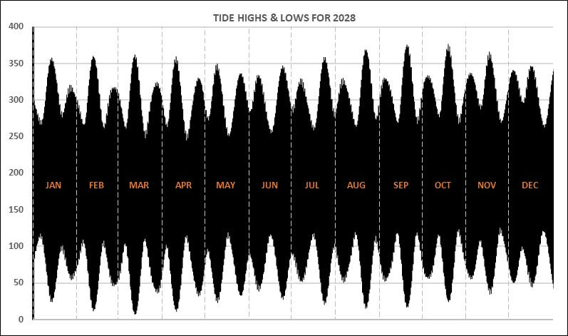

Baltimore Astronomy
Tides - Baltimore Pier & Lough Hyne
home
planets
tides
observing
collimation
gallery
contact
2028 Predicted Tides at Baltimore Pier and Lough Hyne
(plus 365-day chart and table)
Baltimore & Lough Hyne
(local time, DST applied where appropriate)
note LAT: 0cm HAT: 3.80m

jump to:
Jan
Feb
Mar
Apr
May
Jun
Jul
Aug
Sep
Oct
Nov
Dec
(model run 90) date ~ moonphase ~ Baltimore tide ~~~ Lough Hyne tide
Sat 1 Jan 2028 ~ 17% ~ Baltimore: High: 07:37 2.99m ~~~ Lough Hyne: 08:47 2.78m (+1:10)
Sat 1 Jan 2028 ~ 19% ~ Baltimore: Low: 13:32 0.86m ~~~ Lough Hyne: 16:51 1.87m
Sat 1 Jan 2028 ~ 21% ~ Baltimore: High: 19:56 2.99m ~~~ Lough Hyne: 21:05 2.79m (+1:09)
Sun 2 Jan 2028 ~ 23% ~ Baltimore: Low: 01:49 0.84m ~~~ Lough Hyne: 05:08 1.87m
Sun 2 Jan 2028 ~ 25% ~ Baltimore: High: 08:09 2.93m ~~~ Lough Hyne: 09:22 2.72m (+1:13)
Sun 2 Jan 2028 ~ 27% ~ Baltimore: Low: 13:58 0.94m ~~~ Lough Hyne: 17:26 1.87m
Sun 2 Jan 2028 ~ 29% ~ Baltimore: High: 20:29 2.89m ~~~ Lough Hyne: 21:42 2.69m (+1:13)
Mon 3 Jan 2028 ~ 32% ~ Baltimore: Low: 02:16 0.94m ~~~ Lough Hyne: 05:43 1.87m
Mon 3 Jan 2028 ~ 34% ~ Baltimore: High: 08:41 2.87m ~~~ Lough Hyne: 09:54 2.66m (+1:13)
Mon 3 Jan 2028 ~ 36% ~ Baltimore: Low: 14:29 1.01m ~~~ Lough Hyne: 18:05 1.87m
Mon 3 Jan 2028 ~ 39% ~ Baltimore: High: 21:03 2.79m ~~~ Lough Hyne: 22:21 2.59m (+1:17)
Tue 4 Jan 2028 ~ 41% ~ Baltimore: Low: 02:50 1.04m ~~~ Lough Hyne: 06:17 1.87m
Tue 4 Jan 2028 ~ 43% ~ Baltimore: High: 09:16 2.81m ~~~ Lough Hyne: 10:33 2.61m (+1:16)
Tue 4 Jan 2028 ~ 46% ~ Baltimore: Low: 15:10 1.08m ~~~ Lough Hyne: 18:47 1.87m
Tue 4 Jan 2028 ~ 48% ~ Baltimore: High: 21:43 2.71m ~~~ Lough Hyne: 23:03 2.51m (+1:20)
Wed 5 Jan 2028 ~ 51% ~ Baltimore: Low: 03:39 1.13m ~~~ Lough Hyne: 07:04 1.87m
Wed 5 Jan 2028 ~ 54% ~ Baltimore: High: 09:58 2.76m ~~~ Lough Hyne: 11:15 2.56m (+1:17)
Wed 5 Jan 2028 ~ 56% ~ Baltimore: Low: 16:07 1.11m ~~~ Lough Hyne: 19:37 1.87m
Wed 5 Jan 2028 ~ 59% ~ Baltimore: High: 22:30 2.66m ~~~ Lough Hyne: 23:53 2.47m (+1:23)
Thu 6 Jan 2028 ~ 61% ~ Baltimore: Low: 04:47 1.18m ~~~ Lough Hyne: 07:56 1.87m
Thu 6 Jan 2028 ~ 64% ~ Baltimore: High: 10:50 2.72m ~~~ Lough Hyne: 12:12 2.53m (+1:22)
Thu 6 Jan 2028 ~ 66% ~ Baltimore: Low: 17:20 1.10m ~~~ Lough Hyne: 20:36 1.86m
Thu 6 Jan 2028 ~ 69% ~ Baltimore: High: 23:30 2.66m ~~~ Lough Hyne: 00:54 2.48m (+1:23)
Fri 7 Jan 2028 ~ 71% ~ Baltimore: Low: 06:03 1.14m ~~~ Lough Hyne: 08:57 1.87m
Fri 7 Jan 2028 ~ 74% ~ Baltimore: High: 11:55 2.73m ~~~ Lough Hyne: 13:15 2.54m (+1:19)
Fri 7 Jan 2028 ~ 76% ~ Baltimore: Low: 18:30 1.03m ~~~ Lough Hyne: 21:37 1.86m
Sat 8 Jan 2028 ~ 79% ~ Baltimore: High: 00:41 2.74m ~~~ Lough Hyne: 02:02 2.56m (+1:21)
Sat 8 Jan 2028 ~ 81% ~ Baltimore: Low: 07:13 1.02m ~~~ Lough Hyne: 10:07 1.87m
Sat 8 Jan 2028 ~ 83% ~ Baltimore: High: 13:10 2.82m ~~~ Lough Hyne: 14:25 2.63m (+1:14)
Sat 8 Jan 2028 ~ 85% ~ Baltimore: Low: 19:37 0.91m ~~~ Lough Hyne: 22:44 1.86m
Sun 9 Jan 2028 ~ 87% ~ Baltimore: High: 01:50 2.90m ~~~ Lough Hyne: 03:03 2.71m (+1:12)
Sun 9 Jan 2028 ~ 89% ~ Baltimore: Low: 08:20 0.85m ~~~ Lough Hyne: 11:17 1.86m
Sun 9 Jan 2028 ~ 91% ~ Baltimore: High: 14:20 2.99m ~~~ Lough Hyne: 15:32 2.78m (+1:11)
Sun 9 Jan 2028 ~ 93% ~ Baltimore: Low: 20:44 0.77m ~~~ Lough Hyne: 23:47 1.86m
Mon 10 Jan 2028 ~ 94% ~ Baltimore: High: 02:53 3.11m ~~~ Lough Hyne: 04:02 2.91m (+1:08)
Mon 10 Jan 2028 ~ 95% ~ Baltimore: Low: 09:26 0.65m ~~~ Lough Hyne: 12:26 1.86m
Mon 10 Jan 2028 ~ 97% ~ Baltimore: High: 15:24 3.18m ~~~ Lough Hyne: 16:32 2.96m (+1:07)
Mon 10 Jan 2028 ~ 98% ~ Baltimore: Low: 21:47 0.60m ~~~ Lough Hyne: 00:47 1.86m
Tue 11 Jan 2028 ~ 98% ~ Baltimore: High: 03:51 3.31m ~~~ Lough Hyne: 04:53 3.10m (+1:02)
Tue 11 Jan 2028 ~ 99% ~ Baltimore: Low: 10:26 0.47m ~~~ Lough Hyne: 13:26 1.85m
Tue 11 Jan 2028 ~ 100% ~ Baltimore: High: 16:22 3.36m ~~~ Lough Hyne: 17:24 3.14m (+1:02) F
Tue 11 Jan 2028 ~ 100% ~ Baltimore: Low: 22:46 0.45m ~~~ Lough Hyne: 01:46 1.86m
Wed 12 Jan 2028 ~ 100% ~ Baltimore: High: 04:44 3.46m ~~~ Lough Hyne: 05:44 3.25m (+0:59) F
Wed 12 Jan 2028 ~ 100% ~ Baltimore: Low: 11:19 0.32m ~~~ Lough Hyne: 14:17 1.85m
Wed 12 Jan 2028 ~ 100% ~ Baltimore: High: 17:15 3.48m ~~~ Lough Hyne: 18:14 3.26m (+0:59) F
Wed 12 Jan 2028 ~ 99% ~ Baltimore: Low: 23:36 0.34m ~~~ Lough Hyne: 02:36 1.86m
Thu 13 Jan 2028 ~ 98% ~ Baltimore: High: 05:34 3.55m ~~~ Lough Hyne: 06:33 3.35m (+0:58) F
Thu 13 Jan 2028 ~ 97% ~ Baltimore: Low: 12:03 0.24m ~~~ Lough Hyne: 15:07 1.85m
Thu 13 Jan 2028 ~ 96% ~ Baltimore: High: 18:03 3.53m ~~~ Lough Hyne: 19:03 3.32m (+0:59) F
Fri 14 Jan 2028 ~ 95% ~ Baltimore: Low: 00:18 0.28m ~~~ Lough Hyne: 03:23 1.86m
Fri 14 Jan 2028 ~ 94% ~ Baltimore: High: 06:21 3.58m ~~~ Lough Hyne: 07:21 3.36m (+1:00) F
Fri 14 Jan 2028 ~ 92% ~ Baltimore: Low: 12:41 0.24m ~~~ Lough Hyne: 15:51 1.85m
Fri 14 Jan 2028 ~ 90% ~ Baltimore: High: 18:49 3.52m ~~~ Lough Hyne: 19:51 3.30m (+1:01) F
Sat 15 Jan 2028 ~ 88% ~ Baltimore: Low: 00:56 0.30m ~~~ Lough Hyne: 04:06 1.86m
Sat 15 Jan 2028 ~ 86% ~ Baltimore: High: 07:05 3.53m ~~~ Lough Hyne: 08:04 3.32m (+0:58) F
Sat 15 Jan 2028 ~ 84% ~ Baltimore: Low: 13:14 0.30m ~~~ Lough Hyne: 16:34 1.85m
Sat 15 Jan 2028 ~ 82% ~ Baltimore: High: 19:33 3.46m ~~~ Lough Hyne: 20:33 3.24m (+1:00) F
Sun 16 Jan 2028 ~ 79% ~ Baltimore: Low: 01:32 0.38m ~~~ Lough Hyne: 04:48 1.86m
Sun 16 Jan 2028 ~ 77% ~ Baltimore: High: 07:49 3.43m ~~~ Lough Hyne: 08:52 3.21m (+1:02) F
Sun 16 Jan 2028 ~ 74% ~ Baltimore: Low: 13:48 0.41m ~~~ Lough Hyne: 17:16 1.86m
Sun 16 Jan 2028 ~ 71% ~ Baltimore: High: 20:17 3.35m ~~~ Lough Hyne: 21:21 3.13m (+1:04)
Mon 17 Jan 2028 ~ 69% ~ Baltimore: Low: 02:12 0.51m ~~~ Lough Hyne: 05:37 1.86m
Mon 17 Jan 2028 ~ 66% ~ Baltimore: High: 08:35 3.28m ~~~ Lough Hyne: 09:39 3.04m (+1:04)
Mon 17 Jan 2028 ~ 63% ~ Baltimore: Low: 14:27 0.57m ~~~ Lough Hyne: 17:59 1.86m
Mon 17 Jan 2028 ~ 60% ~ Baltimore: High: 21:02 3.23m ~~~ Lough Hyne: 22:06 3.00m (+1:04)
Tue 18 Jan 2028 ~ 58% ~ Baltimore: Low: 02:59 0.68m ~~~ Lough Hyne: 06:28 1.86m
Tue 18 Jan 2028 ~ 55% ~ Baltimore: High: 09:23 3.10m ~~~ Lough Hyne: 10:32 2.87m (+1:09)
Tue 18 Jan 2028 ~ 52% ~ Baltimore: Low: 15:14 0.74m ~~~ Lough Hyne: 18:53 1.86m
Tue 18 Jan 2028 ~ 49% ~ Baltimore: High: 21:53 3.08m ~~~ Lough Hyne: 23:02 2.87m (+1:09)
Wed 19 Jan 2028 ~ 46% ~ Baltimore: Low: 04:01 0.83m ~~~ Lough Hyne: 07:28 1.86m
Wed 19 Jan 2028 ~ 43% ~ Baltimore: High: 10:19 2.93m ~~~ Lough Hyne: 11:33 2.70m (+1:13)
Wed 19 Jan 2028 ~ 41% ~ Baltimore: Low: 16:18 0.90m ~~~ Lough Hyne: 19:52 1.86m
Wed 19 Jan 2028 ~ 38% ~ Baltimore: High: 22:51 2.94m ~~~ Lough Hyne: 00:04 2.73m (+1:12)
Thu 20 Jan 2028 ~ 35% ~ Baltimore: Low: 05:21 0.93m ~~~ Lough Hyne: 08:37 1.86m
Thu 20 Jan 2028 ~ 33% ~ Baltimore: High: 11:26 2.80m ~~~ Lough Hyne: 12:43 2.58m (+1:17)
Thu 20 Jan 2028 ~ 30% ~ Baltimore: Low: 17:41 1.00m ~~~ Lough Hyne: 20:57 1.86m
Fri 21 Jan 2028 ~ 28% ~ Baltimore: High: 00:02 2.85m ~~~ Lough Hyne: 01:17 2.65m (+1:15)
Fri 21 Jan 2028 ~ 25% ~ Baltimore: Low: 06:43 0.94m ~~~ Lough Hyne: 09:48 1.86m
Fri 21 Jan 2028 ~ 23% ~ Baltimore: High: 12:43 2.76m ~~~ Lough Hyne: 14:02 2.55m (+1:19)
Fri 21 Jan 2028 ~ 21% ~ Baltimore: Low: 19:06 1.02m ~~~ Lough Hyne: 22:14 1.86m
Sat 22 Jan 2028 ~ 19% ~ Baltimore: High: 01:19 2.83m ~~~ Lough Hyne: 02:33 2.64m (+1:14)
Sat 22 Jan 2028 ~ 17% ~ Baltimore: Low: 07:57 0.89m ~~~ Lough Hyne: 11:01 1.86m
Sat 22 Jan 2028 ~ 15% ~ Baltimore: High: 13:58 2.83m ~~~ Lough Hyne: 15:13 2.62m (+1:14)
Sat 22 Jan 2028 ~ 13% ~ Baltimore: Low: 20:23 0.95m ~~~ Lough Hyne: 23:26 1.86m
Sun 23 Jan 2028 ~ 11% ~ Baltimore: High: 02:29 2.88m ~~~ Lough Hyne: 03:42 2.68m (+1:13)
Sun 23 Jan 2028 ~ 9.6% ~ Baltimore: Low: 09:04 0.82m ~~~ Lough Hyne: 12:05 1.86m
Sun 23 Jan 2028 ~ 8.2% ~ Baltimore: High: 15:02 2.95m ~~~ Lough Hyne: 16:13 2.73m (+1:11)
Sun 23 Jan 2028 ~ 6.8% ~ Baltimore: Low: 21:30 0.85m ~~~ Lough Hyne: 00:27 1.86m
Mon 24 Jan 2028 ~ 5.7% ~ Baltimore: High: 03:27 2.96m ~~~ Lough Hyne: 04:37 2.74m (+1:09)
Mon 24 Jan 2028 ~ 4.5% ~ Baltimore: Low: 10:01 0.73m ~~~ Lough Hyne: 12:57 1.86m
Mon 24 Jan 2028 ~ 3.6% ~ Baltimore: High: 15:54 3.07m ~~~ Lough Hyne: 17:03 2.85m (+1:08)
Mon 24 Jan 2028 ~ 2.7% ~ Baltimore: Low: 22:25 0.73m ~~~ Lough Hyne: 01:23 1.86m
Tue 25 Jan 2028 ~ 1.9% ~ Baltimore: High: 04:17 3.03m ~~~ Lough Hyne: 05:25 2.80m (+1:08)
Tue 25 Jan 2028 ~ 1.3% ~ Baltimore: Low: 10:49 0.67m ~~~ Lough Hyne: 13:44 1.86m
Tue 25 Jan 2028 ~ 0.8% ~ Baltimore: High: 16:39 3.16m ~~~ Lough Hyne: 17:45 2.93m (+1:05)
Tue 25 Jan 2028 ~ 0.4% ~ Baltimore: Low: 23:09 0.63m ~~~ Lough Hyne: 02:06 1.86m
Wed 26 Jan 2028 ~ 0.2% ~ Baltimore: High: 04:59 3.08m ~~~ Lough Hyne: 06:06 2.85m (+1:07)
Wed 26 Jan 2028 ~ 0.0% ~ Baltimore: Low: 11:29 0.62m ~~~ Lough Hyne: 14:22 1.86m
Wed 26 Jan 2028 ~ 0.0% ~ Baltimore: High: 17:18 3.20m ~~~ Lough Hyne: 18:23 2.98m (+1:05)
Wed 26 Jan 2028 ~ 0.1% ~ Baltimore: Low: 23:45 0.56m ~~~ Lough Hyne: 02:44 1.86m
Thu 27 Jan 2028 ~ 0.3% ~ Baltimore: High: 05:35 3.11m ~~~ Lough Hyne: 06:43 2.88m (+1:08)
Thu 27 Jan 2028 ~ 0.7% ~ Baltimore: Low: 12:01 0.61m ~~~ Lough Hyne: 14:56 1.86m
Thu 27 Jan 2028 ~ 1.1% ~ Baltimore: High: 17:52 3.20m ~~~ Lough Hyne: 18:57 2.97m (+1:04)
Fri 28 Jan 2028 ~ 1.7% ~ Baltimore: Low: 00:13 0.54m ~~~ Lough Hyne: 03:15 1.86m
Fri 28 Jan 2028 ~ 2.4% ~ Baltimore: High: 06:06 3.11m ~~~ Lough Hyne: 07:14 2.89m (+1:07)
Fri 28 Jan 2028 ~ 3.2% ~ Baltimore: Low: 12:26 0.62m ~~~ Lough Hyne: 15:26 1.86m
Fri 28 Jan 2028 ~ 4.0% ~ Baltimore: High: 18:22 3.17m ~~~ Lough Hyne: 19:30 2.94m (+1:08)
Sat 29 Jan 2028 ~ 5.1% ~ Baltimore: Low: 00:36 0.55m ~~~ Lough Hyne: 03:39 1.86m
Sat 29 Jan 2028 ~ 6.1% ~ Baltimore: High: 06:34 3.10m ~~~ Lough Hyne: 07:43 2.88m (+1:08)
Sat 29 Jan 2028 ~ 7.4% ~ Baltimore: Low: 12:47 0.64m ~~~ Lough Hyne: 15:54 1.86m
Sat 29 Jan 2028 ~ 8.7% ~ Baltimore: High: 18:50 3.11m ~~~ Lough Hyne: 19:57 2.89m (+1:07)
Sun 30 Jan 2028 ~ 10% ~ Baltimore: Low: 00:56 0.59m ~~~ Lough Hyne: 04:06 1.86m
Sun 30 Jan 2028 ~ 12% ~ Baltimore: High: 07:00 3.08m ~~~ Lough Hyne: 08:12 2.86m (+1:11)
Sun 30 Jan 2028 ~ 13% ~ Baltimore: Low: 13:05 0.67m ~~~ Lough Hyne: 16:18 1.86m
Sun 30 Jan 2028 ~ 15% ~ Baltimore: High: 19:17 3.04m ~~~ Lough Hyne: 20:26 2.82m (+1:08)
Mon 31 Jan 2028 ~ 17% ~ Baltimore: Low: 01:15 0.66m ~~~ Lough Hyne: 04:29 1.86m
Mon 31 Jan 2028 ~ 18% ~ Baltimore: High: 07:27 3.04m ~~~ Lough Hyne: 08:36 2.83m (+1:09)
Mon 31 Jan 2028 ~ 20% ~ Baltimore: Low: 13:24 0.70m ~~~ Lough Hyne: 16:47 1.86m
Mon 31 Jan 2028 ~ 22% ~ Baltimore: High: 19:46 2.96m ~~~ Lough Hyne: 20:57 2.74m (+1:10)
Tue 1 Feb 2028 ~ 24% ~ Baltimore: Low: 01:37 0.74m ~~~ Lough Hyne: 04:57 1.86m
Tue 1 Feb 2028 ~ 27% ~ Baltimore: High: 07:56 2.99m ~~~ Lough Hyne: 09:06 2.78m (+1:10)
Tue 1 Feb 2028 ~ 29% ~ Baltimore: Low: 13:48 0.75m ~~~ Lough Hyne: 17:23 1.86m
Tue 1 Feb 2028 ~ 31% ~ Baltimore: High: 20:17 2.88m ~~~ Lough Hyne: 21:32 2.67m (+1:15)
Wed 2 Feb 2028 ~ 33% ~ Baltimore: Low: 02:05 0.83m ~~~ Lough Hyne: 05:34 1.86m
Wed 2 Feb 2028 ~ 36% ~ Baltimore: High: 08:30 2.93m ~~~ Lough Hyne: 09:43 2.71m (+1:13)
Wed 2 Feb 2028 ~ 38% ~ Baltimore: Low: 14:20 0.82m ~~~ Lough Hyne: 18:03 1.86m
Wed 2 Feb 2028 ~ 41% ~ Baltimore: High: 20:55 2.81m ~~~ Lough Hyne: 22:12 2.59m (+1:17)
Thu 3 Feb 2028 ~ 43% ~ Baltimore: Low: 02:43 0.94m ~~~ Lough Hyne: 06:17 1.86m
Thu 3 Feb 2028 ~ 46% ~ Baltimore: High: 09:11 2.84m ~~~ Lough Hyne: 10:25 2.62m (+1:14)
Thu 3 Feb 2028 ~ 48% ~ Baltimore: Low: 15:04 0.91m ~~~ Lough Hyne: 18:51 1.86m
Thu 3 Feb 2028 ~ 51% ~ Baltimore: High: 21:41 2.73m ~~~ Lough Hyne: 23:02 2.52m (+1:21)
Fri 4 Feb 2028 ~ 54% ~ Baltimore: Low: 03:41 1.05m ~~~ Lough Hyne: 07:16 1.86m
Fri 4 Feb 2028 ~ 56% ~ Baltimore: High: 10:04 2.74m ~~~ Lough Hyne: 11:23 2.52m (+1:19)
Fri 4 Feb 2028 ~ 59% ~ Baltimore: Low: 16:09 1.00m ~~~ Lough Hyne: 19:52 1.86m
Fri 4 Feb 2028 ~ 62% ~ Baltimore: High: 22:40 2.67m ~~~ Lough Hyne: 00:03 2.47m (+1:23)
Sat 5 Feb 2028 ~ 65% ~ Baltimore: Low: 05:07 1.09m ~~~ Lough Hyne: 08:27 1.86m
Sat 5 Feb 2028 ~ 67% ~ Baltimore: High: 11:13 2.66m ~~~ Lough Hyne: 12:36 2.46m (+1:22)
Sat 5 Feb 2028 ~ 70% ~ Baltimore: Low: 17:40 1.04m ~~~ Lough Hyne: 21:04 1.85m
Sat 5 Feb 2028 ~ 73% ~ Baltimore: High: 23:56 2.66m ~~~ Lough Hyne: 01:22 2.47m (+1:26)
Sun 6 Feb 2028 ~ 75% ~ Baltimore: Low: 06:43 1.03m ~~~ Lough Hyne: 09:47 1.86m
Sun 6 Feb 2028 ~ 78% ~ Baltimore: High: 12:40 2.68m ~~~ Lough Hyne: 14:03 2.48m (+1:22)
Sun 6 Feb 2028 ~ 80% ~ Baltimore: Low: 19:12 0.98m ~~~ Lough Hyne: 22:20 1.86m
Mon 7 Feb 2028 ~ 83% ~ Baltimore: High: 01:23 2.76m ~~~ Lough Hyne: 02:43 2.57m (+1:19)
Mon 7 Feb 2028 ~ 85% ~ Baltimore: Low: 08:05 0.87m ~~~ Lough Hyne: 11:07 1.85m
Mon 7 Feb 2028 ~ 87% ~ Baltimore: High: 14:06 2.82m ~~~ Lough Hyne: 15:22 2.62m (+1:16)
Mon 7 Feb 2028 ~ 89% ~ Baltimore: Low: 20:31 0.83m ~~~ Lough Hyne: 23:36 1.86m
Tue 8 Feb 2028 ~ 91% ~ Baltimore: High: 02:38 2.96m ~~~ Lough Hyne: 03:51 2.75m (+1:13)
Tue 8 Feb 2028 ~ 93% ~ Baltimore: Low: 09:16 0.66m ~~~ Lough Hyne: 12:17 1.85m
Tue 8 Feb 2028 ~ 94% ~ Baltimore: High: 15:15 3.05m ~~~ Lough Hyne: 16:23 2.83m (+1:08)
Tue 8 Feb 2028 ~ 96% ~ Baltimore: Low: 21:38 0.63m ~~~ Lough Hyne: 00:38 1.86m
Wed 9 Feb 2028 ~ 97% ~ Baltimore: High: 03:39 3.19m ~~~ Lough Hyne: 04:44 2.97m (+1:05)
Wed 9 Feb 2028 ~ 98% ~ Baltimore: Low: 10:15 0.45m ~~~ Lough Hyne: 13:17 1.85m
Wed 9 Feb 2028 ~ 99% ~ Baltimore: High: 16:10 3.28m ~~~ Lough Hyne: 17:14 3.04m (+1:03)
Wed 9 Feb 2028 ~ 99% ~ Baltimore: Low: 22:34 0.43m ~~~ Lough Hyne: 01:34 1.85m
Thu 10 Feb 2028 ~ 100% ~ Baltimore: High: 04:29 3.40m ~~~ Lough Hyne: 05:32 3.18m (+1:03) F
Thu 10 Feb 2028 ~ 100% ~ Baltimore: Low: 11:02 0.28m ~~~ Lough Hyne: 14:06 1.85m
Thu 10 Feb 2028 ~ 100% ~ Baltimore: High: 16:57 3.45m ~~~ Lough Hyne: 18:00 3.21m (+1:03) F
Thu 10 Feb 2028 ~ 100% ~ Baltimore: Low: 23:18 0.26m ~~~ Lough Hyne: 02:17 1.85m
Fri 11 Feb 2028 ~ 99% ~ Baltimore: High: 05:13 3.54m ~~~ Lough Hyne: 06:13 3.32m (+0:59) F
Fri 11 Feb 2028 ~ 99% ~ Baltimore: Low: 11:41 0.16m ~~~ Lough Hyne: 14:47 1.85m
Fri 11 Feb 2028 ~ 98% ~ Baltimore: High: 17:39 3.55m ~~~ Lough Hyne: 18:41 3.32m (+1:01) F
Fri 11 Feb 2028 ~ 97% ~ Baltimore: Low: 23:56 0.16m ~~~ Lough Hyne: 02:58 1.85m
Sat 12 Feb 2028 ~ 96% ~ Baltimore: High: 05:54 3.60m ~~~ Lough Hyne: 06:53 3.38m (+0:58) F
Sat 12 Feb 2028 ~ 95% ~ Baltimore: Low: 12:13 0.11m ~~~ Lough Hyne: 15:26 1.85m
Sat 12 Feb 2028 ~ 93% ~ Baltimore: High: 18:20 3.58m ~~~ Lough Hyne: 19:20 3.35m (+1:00) F
Sun 13 Feb 2028 ~ 91% ~ Baltimore: Low: 00:30 0.14m ~~~ Lough Hyne: 03:38 1.85m
Sun 13 Feb 2028 ~ 90% ~ Baltimore: High: 06:35 3.57m ~~~ Lough Hyne: 07:33 3.35m (+0:58) F
Sun 13 Feb 2028 ~ 88% ~ Baltimore: Low: 12:43 0.14m ~~~ Lough Hyne: 16:03 1.85m
Sun 13 Feb 2028 ~ 86% ~ Baltimore: High: 19:00 3.54m ~~~ Lough Hyne: 20:01 3.32m (+1:01) F
Mon 14 Feb 2028 ~ 83% ~ Baltimore: Low: 01:03 0.21m ~~~ Lough Hyne: 04:24 1.85m
Mon 14 Feb 2028 ~ 81% ~ Baltimore: High: 07:18 3.46m ~~~ Lough Hyne: 08:21 3.22m (+1:02) F
Mon 14 Feb 2028 ~ 79% ~ Baltimore: Low: 13:15 0.24m ~~~ Lough Hyne: 16:43 1.85m
Mon 14 Feb 2028 ~ 76% ~ Baltimore: High: 19:43 3.43m ~~~ Lough Hyne: 20:43 3.22m (+1:00) F
Tue 15 Feb 2028 ~ 74% ~ Baltimore: Low: 01:41 0.34m ~~~ Lough Hyne: 05:08 1.85m
Tue 15 Feb 2028 ~ 71% ~ Baltimore: High: 08:04 3.29m ~~~ Lough Hyne: 09:07 3.05m (+1:03)
Tue 15 Feb 2028 ~ 69% ~ Baltimore: Low: 13:53 0.41m ~~~ Lough Hyne: 17:27 1.85m
Tue 15 Feb 2028 ~ 66% ~ Baltimore: High: 20:30 3.28m ~~~ Lough Hyne: 21:33 3.06m (+1:03)
Wed 16 Feb 2028 ~ 63% ~ Baltimore: Low: 02:26 0.53m ~~~ Lough Hyne: 06:05 1.86m
Wed 16 Feb 2028 ~ 60% ~ Baltimore: High: 08:55 3.09m ~~~ Lough Hyne: 10:03 2.85m (+1:07)
Wed 16 Feb 2028 ~ 58% ~ Baltimore: Low: 14:39 0.63m ~~~ Lough Hyne: 18:22 1.86m
Wed 16 Feb 2028 ~ 55% ~ Baltimore: High: 21:22 3.08m ~~~ Lough Hyne: 22:32 2.86m (+1:09)
Thu 17 Feb 2028 ~ 52% ~ Baltimore: Low: 03:23 0.74m ~~~ Lough Hyne: 07:07 1.86m
Thu 17 Feb 2028 ~ 49% ~ Baltimore: High: 09:54 2.88m ~~~ Lough Hyne: 11:07 2.64m (+1:13)
Thu 17 Feb 2028 ~ 47% ~ Baltimore: Low: 15:40 0.86m ~~~ Lough Hyne: 19:26 1.86m
Thu 17 Feb 2028 ~ 44% ~ Baltimore: High: 22:22 2.86m ~~~ Lough Hyne: 23:37 2.64m (+1:14)
Fri 18 Feb 2028 ~ 41% ~ Baltimore: Low: 04:42 0.92m ~~~ Lough Hyne: 08:17 1.85m
Fri 18 Feb 2028 ~ 39% ~ Baltimore: High: 11:02 2.71m ~~~ Lough Hyne: 12:23 2.49m (+1:20)
Fri 18 Feb 2028 ~ 36% ~ Baltimore: Low: 17:09 1.04m ~~~ Lough Hyne: 20:43 1.86m
Fri 18 Feb 2028 ~ 34% ~ Baltimore: High: 23:35 2.69m ~~~ Lough Hyne: 00:56 2.48m (+1:20)
Sat 19 Feb 2028 ~ 31% ~ Baltimore: Low: 06:22 1.00m ~~~ Lough Hyne: 09:36 1.85m
Sat 19 Feb 2028 ~ 29% ~ Baltimore: High: 12:24 2.63m ~~~ Lough Hyne: 13:45 2.43m (+1:21)
Sat 19 Feb 2028 ~ 26% ~ Baltimore: Low: 18:57 1.08m ~~~ Lough Hyne: 22:06 1.86m
Sun 20 Feb 2028 ~ 24% ~ Baltimore: High: 01:01 2.61m ~~~ Lough Hyne: 02:23 2.42m (+1:22)
Sun 20 Feb 2028 ~ 22% ~ Baltimore: Low: 07:48 0.98m ~~~ Lough Hyne: 10:48 1.85m
Sun 20 Feb 2028 ~ 20% ~ Baltimore: High: 13:46 2.68m ~~~ Lough Hyne: 15:04 2.48m (+1:18)
Sun 20 Feb 2028 ~ 18% ~ Baltimore: Low: 20:20 0.99m ~~~ Lough Hyne: 23:25 1.86m
Mon 21 Feb 2028 ~ 16% ~ Baltimore: High: 02:19 2.67m ~~~ Lough Hyne: 03:37 2.46m (+1:17)
Mon 21 Feb 2028 ~ 14% ~ Baltimore: Low: 08:55 0.89m ~~~ Lough Hyne: 11:56 1.85m
Mon 21 Feb 2028 ~ 13% ~ Baltimore: High: 14:51 2.81m ~~~ Lough Hyne: 16:05 2.59m (+1:13)
Mon 21 Feb 2028 ~ 11% ~ Baltimore: Low: 21:23 0.85m ~~~ Lough Hyne: 00:26 1.85m
Tue 22 Feb 2028 ~ 9.5% ~ Baltimore: High: 03:18 2.78m ~~~ Lough Hyne: 04:33 2.56m (+1:14)
Tue 22 Feb 2028 ~ 8.0% ~ Baltimore: Low: 09:50 0.79m ~~~ Lough Hyne: 12:47 1.85m
Tue 22 Feb 2028 ~ 6.8% ~ Baltimore: High: 15:41 2.95m ~~~ Lough Hyne: 16:53 2.72m (+1:11)
Tue 22 Feb 2028 ~ 5.6% ~ Baltimore: Low: 22:12 0.70m ~~~ Lough Hyne: 01:15 1.85m
Wed 23 Feb 2028 ~ 4.6% ~ Baltimore: High: 04:03 2.91m ~~~ Lough Hyne: 05:15 2.67m (+1:11)
Wed 23 Feb 2028 ~ 3.6% ~ Baltimore: Low: 10:34 0.69m ~~~ Lough Hyne: 13:27 1.85m
Wed 23 Feb 2028 ~ 2.8% ~ Baltimore: High: 16:21 3.06m ~~~ Lough Hyne: 17:31 2.82m (+1:10)
Wed 23 Feb 2028 ~ 2.0% ~ Baltimore: Low: 22:50 0.58m ~~~ Lough Hyne: 01:48 1.85m
Thu 24 Feb 2028 ~ 1.4% ~ Baltimore: High: 04:39 3.02m ~~~ Lough Hyne: 05:51 2.77m (+1:12)
Thu 24 Feb 2028 ~ 0.9% ~ Baltimore: Low: 11:08 0.60m ~~~ Lough Hyne: 14:03 1.85m
Thu 24 Feb 2028 ~ 0.5% ~ Baltimore: High: 16:54 3.13m ~~~ Lough Hyne: 18:02 2.90m (+1:08)
Thu 24 Feb 2028 ~ 0.2% ~ Baltimore: Low: 23:20 0.50m ~~~ Lough Hyne: 02:17 1.85m
Fri 25 Feb 2028 ~ 0.1% ~ Baltimore: High: 05:08 3.10m ~~~ Lough Hyne: 06:16 2.85m (+1:07)
Fri 25 Feb 2028 ~ 0.1% ~ Baltimore: Low: 11:35 0.54m ~~~ Lough Hyne: 14:31 1.85m
Fri 25 Feb 2028 ~ 0.1% ~ Baltimore: High: 17:23 3.16m ~~~ Lough Hyne: 18:31 2.93m (+1:08)
Fri 25 Feb 2028 ~ 0.4% ~ Baltimore: Low: 23:45 0.46m ~~~ Lough Hyne: 02:45 1.85m
Sat 26 Feb 2028 ~ 0.6% ~ Baltimore: High: 05:34 3.15m ~~~ Lough Hyne: 06:42 2.91m (+1:08)
Sat 26 Feb 2028 ~ 1.1% ~ Baltimore: Low: 11:57 0.50m ~~~ Lough Hyne: 14:57 1.85m
Sat 26 Feb 2028 ~ 1.6% ~ Baltimore: High: 17:49 3.16m ~~~ Lough Hyne: 18:55 2.93m (+1:06)
Sun 27 Feb 2028 ~ 2.3% ~ Baltimore: Low: 00:05 0.45m ~~~ Lough Hyne: 03:07 1.85m
Sun 27 Feb 2028 ~ 3.1% ~ Baltimore: High: 05:57 3.17m ~~~ Lough Hyne: 07:04 2.94m (+1:06)
Sun 27 Feb 2028 ~ 4.0% ~ Baltimore: Low: 12:16 0.48m ~~~ Lough Hyne: 15:23 1.85m
Sun 27 Feb 2028 ~ 4.9% ~ Baltimore: High: 18:14 3.14m ~~~ Lough Hyne: 19:22 2.91m (+1:08)
Mon 28 Feb 2028 ~ 6.0% ~ Baltimore: Low: 00:24 0.48m ~~~ Lough Hyne: 03:28 1.86m
Mon 28 Feb 2028 ~ 7.2% ~ Baltimore: High: 06:21 3.17m ~~~ Lough Hyne: 07:31 2.94m (+1:09)
Mon 28 Feb 2028 ~ 8.6% ~ Baltimore: Low: 12:33 0.48m ~~~ Lough Hyne: 15:47 1.85m
Mon 28 Feb 2028 ~ 10% ~ Baltimore: High: 18:40 3.10m ~~~ Lough Hyne: 19:51 2.87m (+1:11)
Tue 29 Feb 2028 ~ 11% ~ Baltimore: Low: 00:43 0.52m ~~~ Lough Hyne: 03:56 1.86m
Tue 29 Feb 2028 ~ 13% ~ Baltimore: High: 06:48 3.14m ~~~ Lough Hyne: 07:55 2.92m (+1:07)
Tue 29 Feb 2028 ~ 15% ~ Baltimore: Low: 12:52 0.50m ~~~ Lough Hyne: 16:16 1.85m
Tue 29 Feb 2028 ~ 17% ~ Baltimore: High: 19:08 3.05m ~~~ Lough Hyne: 20:21 2.82m (+1:12)
Wed 1 Mar 2028 ~ 19% ~ Baltimore: Low: 01:06 0.58m ~~~ Lough Hyne: 04:26 1.86m
Wed 1 Mar 2028 ~ 21% ~ Baltimore: High: 07:20 3.09m ~~~ Lough Hyne: 08:31 2.86m (+1:11)
Wed 1 Mar 2028 ~ 23% ~ Baltimore: Low: 13:17 0.54m ~~~ Lough Hyne: 16:47 1.85m
Wed 1 Mar 2028 ~ 25% ~ Baltimore: High: 19:42 2.99m ~~~ Lough Hyne: 20:54 2.76m (+1:11)
Thu 2 Mar 2028 ~ 27% ~ Baltimore: Low: 01:36 0.66m ~~~ Lough Hyne: 05:05 1.86m
Thu 2 Mar 2028 ~ 29% ~ Baltimore: High: 07:58 3.00m ~~~ Lough Hyne: 09:11 2.77m (+1:13)
Thu 2 Mar 2028 ~ 32% ~ Baltimore: Low: 13:50 0.63m ~~~ Lough Hyne: 17:28 1.85m
Thu 2 Mar 2028 ~ 34% ~ Baltimore: High: 20:23 2.91m ~~~ Lough Hyne: 21:37 2.68m (+1:13)
Fri 3 Mar 2028 ~ 37% ~ Baltimore: Low: 02:16 0.78m ~~~ Lough Hyne: 05:55 1.86m
Fri 3 Mar 2028 ~ 40% ~ Baltimore: High: 08:46 2.88m ~~~ Lough Hyne: 10:01 2.65m (+1:15)
Fri 3 Mar 2028 ~ 42% ~ Baltimore: Low: 14:35 0.77m ~~~ Lough Hyne: 18:23 1.85m
Fri 3 Mar 2028 ~ 45% ~ Baltimore: High: 21:13 2.81m ~~~ Lough Hyne: 22:32 2.58m (+1:18)
Sat 4 Mar 2028 ~ 47% ~ Baltimore: Low: 03:11 0.91m ~~~ Lough Hyne: 06:57 1.85m
Sat 4 Mar 2028 ~ 50% ~ Baltimore: High: 09:44 2.75m ~~~ Lough Hyne: 11:03 2.52m (+1:19)
Sat 4 Mar 2028 ~ 53% ~ Baltimore: Low: 15:37 0.93m ~~~ Lough Hyne: 19:27 1.85m
Sat 4 Mar 2028 ~ 56% ~ Baltimore: High: 22:15 2.70m ~~~ Lough Hyne: 23:35 2.49m (+1:20)
Sun 5 Mar 2028 ~ 59% ~ Baltimore: Low: 04:34 1.02m ~~~ Lough Hyne: 08:16 1.85m
Sun 5 Mar 2028 ~ 62% ~ Baltimore: High: 10:55 2.63m ~~~ Lough Hyne: 12:21 2.41m (+1:25)
Sun 5 Mar 2028 ~ 65% ~ Baltimore: Low: 17:11 1.04m ~~~ Lough Hyne: 20:46 1.85m
Sun 5 Mar 2028 ~ 67% ~ Baltimore: High: 23:32 2.64m ~~~ Lough Hyne: 00:56 2.43m (+1:24)
Mon 6 Mar 2028 ~ 70% ~ Baltimore: Low: 06:27 1.01m ~~~ Lough Hyne: 09:38 1.85m
Mon 6 Mar 2028 ~ 73% ~ Baltimore: High: 12:23 2.61m ~~~ Lough Hyne: 13:51 2.40m (+1:27)
Mon 6 Mar 2028 ~ 76% ~ Baltimore: Low: 18:59 1.00m ~~~ Lough Hyne: 22:07 1.85m
Tue 7 Mar 2028 ~ 78% ~ Baltimore: High: 01:02 2.68m ~~~ Lough Hyne: 02:24 2.49m (+1:22)
Tue 7 Mar 2028 ~ 81% ~ Baltimore: Low: 07:54 0.87m ~~~ Lough Hyne: 10:58 1.85m
Tue 7 Mar 2028 ~ 83% ~ Baltimore: High: 13:51 2.74m ~~~ Lough Hyne: 15:12 2.52m (+1:20)
Tue 7 Mar 2028 ~ 85% ~ Baltimore: Low: 20:19 0.84m ~~~ Lough Hyne: 23:23 1.85m
Wed 8 Mar 2028 ~ 87% ~ Baltimore: High: 02:20 2.87m ~~~ Lough Hyne: 03:34 2.66m (+1:13)
Wed 8 Mar 2028 ~ 90% ~ Baltimore: Low: 09:00 0.66m ~~~ Lough Hyne: 12:06 1.85m
Wed 8 Mar 2028 ~ 91% ~ Baltimore: High: 14:58 2.98m ~~~ Lough Hyne: 16:11 2.74m (+1:13)
Wed 8 Mar 2028 ~ 93% ~ Baltimore: Low: 21:21 0.62m ~~~ Lough Hyne: 00:24 1.85m
Thu 9 Mar 2028 ~ 95% ~ Baltimore: High: 03:18 3.12m ~~~ Lough Hyne: 04:25 2.89m (+1:06)
Thu 9 Mar 2028 ~ 96% ~ Baltimore: Low: 09:53 0.45m ~~~ Lough Hyne: 12:57 1.85m
Thu 9 Mar 2028 ~ 97% ~ Baltimore: High: 15:48 3.22m ~~~ Lough Hyne: 16:53 2.98m (+1:05)
Thu 9 Mar 2028 ~ 98% ~ Baltimore: Low: 22:10 0.40m ~~~ Lough Hyne: 01:11 1.85m
Fri 10 Mar 2028 ~ 99% ~ Baltimore: High: 04:04 3.35m ~~~ Lough Hyne: 05:06 3.11m (+1:02)
Fri 10 Mar 2028 ~ 99% ~ Baltimore: Low: 10:34 0.27m ~~~ Lough Hyne: 13:37 1.84m
Fri 10 Mar 2028 ~ 100% ~ Baltimore: High: 16:30 3.43m ~~~ Lough Hyne: 17:32 3.19m (+1:02) F
Fri 10 Mar 2028 ~ 100% ~ Baltimore: Low: 22:51 0.22m ~~~ Lough Hyne: 01:55 1.85m
Sat 11 Mar 2028 ~ 100% ~ Baltimore: High: 04:44 3.51m ~~~ Lough Hyne: 05:44 3.27m (+0:59) F
Sat 11 Mar 2028 ~ 100% ~ Baltimore: Low: 11:08 0.13m ~~~ Lough Hyne: 14:17 1.84m
Sat 11 Mar 2028 ~ 99% ~ Baltimore: High: 17:08 3.57m ~~~ Lough Hyne: 18:07 3.32m (+0:58) F
Sat 11 Mar 2028 ~ 99% ~ Baltimore: Low: 23:26 0.11m ~~~ Lough Hyne: 02:34 1.85m
Sun 12 Mar 2028 ~ 98% ~ Baltimore: High: 05:23 3.58m ~~~ Lough Hyne: 06:23 3.35m (+0:59) F
Sun 12 Mar 2028 ~ 97% ~ Baltimore: Low: 11:39 0.07m ~~~ Lough Hyne: 14:54 1.84m
Sun 12 Mar 2028 ~ 96% ~ Baltimore: High: 17:47 3.62m ~~~ Lough Hyne: 18:44 3.39m (+0:57) F
Mon 13 Mar 2028 ~ 94% ~ Baltimore: Low: 00:00 0.07m ~~~ Lough Hyne: 03:15 1.85m
Mon 13 Mar 2028 ~ 93% ~ Baltimore: High: 06:05 3.55m ~~~ Lough Hyne: 07:03 3.32m (+0:58) F
Mon 13 Mar 2028 ~ 91% ~ Baltimore: Low: 12:11 0.08m ~~~ Lough Hyne: 15:28 1.85m
Mon 13 Mar 2028 ~ 89% ~ Baltimore: High: 18:29 3.58m ~~~ Lough Hyne: 19:27 3.35m (+0:57) F
Tue 14 Mar 2028 ~ 87% ~ Baltimore: Low: 00:36 0.12m ~~~ Lough Hyne: 03:57 1.85m
Tue 14 Mar 2028 ~ 85% ~ Baltimore: High: 06:50 3.44m ~~~ Lough Hyne: 07:52 3.21m (+1:02) F
Tue 14 Mar 2028 ~ 83% ~ Baltimore: Low: 12:46 0.18m ~~~ Lough Hyne: 16:14 1.85m
Tue 14 Mar 2028 ~ 81% ~ Baltimore: High: 19:14 3.45m ~~~ Lough Hyne: 20:14 3.24m (+0:59) F
Wed 15 Mar 2028 ~ 79% ~ Baltimore: Low: 01:16 0.25m ~~~ Lough Hyne: 04:47 1.85m
Wed 15 Mar 2028 ~ 76% ~ Baltimore: High: 07:40 3.27m ~~~ Lough Hyne: 08:44 3.03m (+1:03)
Wed 15 Mar 2028 ~ 74% ~ Baltimore: Low: 13:28 0.36m ~~~ Lough Hyne: 17:02 1.85m
Wed 15 Mar 2028 ~ 72% ~ Baltimore: High: 20:04 3.26m ~~~ Lough Hyne: 21:10 3.03m (+1:05)
Thu 16 Mar 2028 ~ 69% ~ Baltimore: Low: 02:01 0.45m ~~~ Lough Hyne: 05:44 1.85m
Thu 16 Mar 2028 ~ 66% ~ Baltimore: High: 08:34 3.07m ~~~ Lough Hyne: 09:43 2.83m (+1:08)
Thu 16 Mar 2028 ~ 64% ~ Baltimore: Low: 14:16 0.60m ~~~ Lough Hyne: 17:57 1.85m
Thu 16 Mar 2028 ~ 61% ~ Baltimore: High: 20:59 3.02m ~~~ Lough Hyne: 22:11 2.80m (+1:11)
Fri 17 Mar 2028 ~ 59% ~ Baltimore: Low: 02:54 0.69m ~~~ Lough Hyne: 06:46 1.85m
Fri 17 Mar 2028 ~ 56% ~ Baltimore: High: 09:34 2.86m ~~~ Lough Hyne: 10:49 2.62m (+1:14)
Fri 17 Mar 2028 ~ 54% ~ Baltimore: Low: 15:16 0.85m ~~~ Lough Hyne: 19:07 1.86m
Fri 17 Mar 2028 ~ 51% ~ Baltimore: High: 21:59 2.78m ~~~ Lough Hyne: 23:16 2.55m (+1:16)
Sat 18 Mar 2028 ~ 48% ~ Baltimore: Low: 04:03 0.93m ~~~ Lough Hyne: 07:56 1.85m
Sat 18 Mar 2028 ~ 45% ~ Baltimore: High: 10:41 2.68m ~~~ Lough Hyne: 12:02 2.46m (+1:21)
Sat 18 Mar 2028 ~ 43% ~ Baltimore: Low: 16:41 1.06m ~~~ Lough Hyne: 20:26 1.85m
Sat 18 Mar 2028 ~ 40% ~ Baltimore: High: 23:10 2.57m ~~~ Lough Hyne: 00:34 2.36m (+1:24)
Sun 19 Mar 2028 ~ 38% ~ Baltimore: Low: 05:53 1.07m ~~~ Lough Hyne: 09:11 1.85m
Sun 19 Mar 2028 ~ 35% ~ Baltimore: High: 11:58 2.57m ~~~ Lough Hyne: 13:23 2.37m (+1:25)
Sun 19 Mar 2028 ~ 33% ~ Baltimore: Low: 18:41 1.10m ~~~ Lough Hyne: 21:48 1.85m
Mon 20 Mar 2028 ~ 31% ~ Baltimore: High: 00:35 2.48m ~~~ Lough Hyne: 02:03 2.28m (+1:28)
Mon 20 Mar 2028 ~ 28% ~ Baltimore: Low: 07:26 1.06m ~~~ Lough Hyne: 10:25 1.84m
Mon 20 Mar 2028 ~ 26% ~ Baltimore: High: 13:19 2.59m ~~~ Lough Hyne: 14:43 2.39m (+1:23)
Mon 20 Mar 2028 ~ 24% ~ Baltimore: Low: 20:00 1.00m ~~~ Lough Hyne: 23:06 1.85m
Tue 21 Mar 2028 ~ 22% ~ Baltimore: High: 01:55 2.53m ~~~ Lough Hyne: 03:17 2.33m (+1:22)
Tue 21 Mar 2028 ~ 20% ~ Baltimore: Low: 08:31 0.97m ~~~ Lough Hyne: 11:27 1.85m
Tue 21 Mar 2028 ~ 18% ~ Baltimore: High: 14:25 2.70m ~~~ Lough Hyne: 15:43 2.49m (+1:17)
Tue 21 Mar 2028 ~ 16% ~ Baltimore: Low: 20:56 0.86m ~~~ Lough Hyne: 00:04 1.85m
Wed 22 Mar 2028 ~ 14% ~ Baltimore: High: 02:52 2.68m ~~~ Lough Hyne: 04:12 2.46m (+1:19)
Wed 22 Mar 2028 ~ 13% ~ Baltimore: Low: 09:21 0.85m ~~~ Lough Hyne: 12:17 1.85m
Wed 22 Mar 2028 ~ 11% ~ Baltimore: High: 15:13 2.84m ~~~ Lough Hyne: 16:25 2.61m (+1:12)
Wed 22 Mar 2028 ~ 9.6% ~ Baltimore: Low: 21:39 0.72m ~~~ Lough Hyne: 00:45 1.85m
Thu 23 Mar 2028 ~ 8.3% ~ Baltimore: High: 03:33 2.84m ~~~ Lough Hyne: 04:46 2.60m (+1:12)
Thu 23 Mar 2028 ~ 7.0% ~ Baltimore: Low: 10:01 0.72m ~~~ Lough Hyne: 12:57 1.85m
Thu 23 Mar 2028 ~ 5.8% ~ Baltimore: High: 15:49 2.97m ~~~ Lough Hyne: 17:02 2.73m (+1:12)
Thu 23 Mar 2028 ~ 4.7% ~ Baltimore: Low: 22:14 0.60m ~~~ Lough Hyne: 01:16 1.85m
Fri 24 Mar 2028 ~ 3.8% ~ Baltimore: High: 04:04 2.98m ~~~ Lough Hyne: 05:14 2.74m (+1:09)
Fri 24 Mar 2028 ~ 2.9% ~ Baltimore: Low: 10:32 0.60m ~~~ Lough Hyne: 13:27 1.85m
Fri 24 Mar 2028 ~ 2.2% ~ Baltimore: High: 16:20 3.06m ~~~ Lough Hyne: 17:27 2.81m (+1:07)
Fri 24 Mar 2028 ~ 1.6% ~ Baltimore: Low: 22:42 0.51m ~~~ Lough Hyne: 01:41 1.85m
Sat 25 Mar 2028 ~ 1.1% ~ Baltimore: High: 04:30 3.09m ~~~ Lough Hyne: 05:41 2.85m (+1:10)
Sat 25 Mar 2028 ~ 0.6% ~ Baltimore: Low: 10:58 0.50m ~~~ Lough Hyne: 13:57 1.85m
Sat 25 Mar 2028 ~ 0.4% ~ Baltimore: High: 16:46 3.13m ~~~ Lough Hyne: 17:53 2.89m (+1:07)
Sat 25 Mar 2028 ~ 0.2% ~ Baltimore: Low: 23:06 0.45m ~~~ Lough Hyne: 03:06 1.85m
Sun 26 Mar 2028 ~ 0.2% ~ Baltimore: High: 05:54 3.18m ~~~ Lough Hyne: 07:02 2.94m (+1:07)
Sun 26 Mar 2028 ~ 0.2% ~ Baltimore: Low: 12:20 0.43m ~~~ Lough Hyne: 15:23 1.85m
Sun 26 Mar 2028 ~ 0.4% ~ Baltimore: High: 18:12 3.17m ~~~ Lough Hyne: 19:21 2.93m (+1:09)
Sun 26 Mar 2028 ~ 0.8% ~ Baltimore: Low: 00:29 0.42m ~~~ Lough Hyne: 03:27 1.85m
Mon 27 Mar 2028 ~ 1.2% ~ Baltimore: High: 06:19 3.23m ~~~ Lough Hyne: 07:24 2.99m (+1:05)
Mon 27 Mar 2028 ~ 1.8% ~ Baltimore: Low: 12:41 0.38m ~~~ Lough Hyne: 15:47 1.85m
Mon 27 Mar 2028 ~ 2.5% ~ Baltimore: High: 18:38 3.19m ~~~ Lough Hyne: 19:44 2.95m (+1:06)
Mon 27 Mar 2028 ~ 3.3% ~ Baltimore: Low: 00:52 0.41m ~~~ Lough Hyne: 03:56 1.85m
Tue 28 Mar 2028 ~ 4.2% ~ Baltimore: High: 06:46 3.24m ~~~ Lough Hyne: 07:53 3.02m (+1:06)
Tue 28 Mar 2028 ~ 5.3% ~ Baltimore: Low: 13:02 0.36m ~~~ Lough Hyne: 16:17 1.85m
Tue 28 Mar 2028 ~ 6.5% ~ Baltimore: High: 19:07 3.18m ~~~ Lough Hyne: 20:14 2.95m (+1:07)
Wed 29 Mar 2028 ~ 7.8% ~ Baltimore: Low: 01:17 0.43m ~~~ Lough Hyne: 04:27 1.85m
Wed 29 Mar 2028 ~ 9.2% ~ Baltimore: High: 07:19 3.22m ~~~ Lough Hyne: 08:25 2.99m (+1:05)
Wed 29 Mar 2028 ~ 11% ~ Baltimore: Low: 13:28 0.37m ~~~ Lough Hyne: 16:47 1.85m
Wed 29 Mar 2028 ~ 12% ~ Baltimore: High: 19:41 3.15m ~~~ Lough Hyne: 20:52 2.93m (+1:10)
Thu 30 Mar 2028 ~ 14% ~ Baltimore: Low: 01:47 0.47m ~~~ Lough Hyne: 05:06 1.85m
Thu 30 Mar 2028 ~ 16% ~ Baltimore: High: 07:58 3.16m ~~~ Lough Hyne: 09:05 2.93m (+1:06)
Thu 30 Mar 2028 ~ 18% ~ Baltimore: Low: 14:00 0.43m ~~~ Lough Hyne: 17:27 1.85m
Thu 30 Mar 2028 ~ 20% ~ Baltimore: High: 20:22 3.10m ~~~ Lough Hyne: 21:32 2.87m (+1:10)
Fri 31 Mar 2028 ~ 22% ~ Baltimore: Low: 02:24 0.55m ~~~ Lough Hyne: 05:53 1.85m
Fri 31 Mar 2028 ~ 25% ~ Baltimore: High: 08:44 3.06m ~~~ Lough Hyne: 09:54 2.83m (+1:09)
Fri 31 Mar 2028 ~ 27% ~ Baltimore: Low: 14:39 0.55m ~~~ Lough Hyne: 18:16 1.85m
Fri 31 Mar 2028 ~ 29% ~ Baltimore: High: 21:09 3.00m ~~~ Lough Hyne: 22:22 2.78m (+1:12)
Sat 1 Apr 2028 ~ 32% ~ Baltimore: Low: 03:08 0.67m ~~~ Lough Hyne: 06:47 1.85m
Sat 1 Apr 2028 ~ 35% ~ Baltimore: High: 09:38 2.92m ~~~ Lough Hyne: 10:52 2.69m (+1:14)
Sat 1 Apr 2028 ~ 37% ~ Baltimore: Low: 15:27 0.71m ~~~ Lough Hyne: 19:11 1.85m
Sat 1 Apr 2028 ~ 40% ~ Baltimore: High: 22:04 2.88m ~~~ Lough Hyne: 23:20 2.65m (+1:16)
Sun 2 Apr 2028 ~ 43% ~ Baltimore: Low: 04:04 0.82m ~~~ Lough Hyne: 07:55 1.85m
Sun 2 Apr 2028 ~ 46% ~ Baltimore: High: 10:39 2.78m ~~~ Lough Hyne: 11:56 2.54m (+1:16)
Sun 2 Apr 2028 ~ 48% ~ Baltimore: Low: 16:30 0.89m ~~~ Lough Hyne: 20:17 1.85m
Sun 2 Apr 2028 ~ 51% ~ Baltimore: High: 23:07 2.76m ~~~ Lough Hyne: 00:25 2.53m (+1:18)
Mon 3 Apr 2028 ~ 54% ~ Baltimore: Low: 05:25 0.96m ~~~ Lough Hyne: 09:08 1.85m
Mon 3 Apr 2028 ~ 57% ~ Baltimore: High: 11:49 2.66m ~~~ Lough Hyne: 13:13 2.43m (+1:23)
Mon 3 Apr 2028 ~ 60% ~ Baltimore: Low: 18:03 1.02m ~~~ Lough Hyne: 21:35 1.85m
Mon 3 Apr 2028 ~ 63% ~ Baltimore: High: 00:19 2.68m ~~~ Lough Hyne: 01:43 2.46m (+1:23)
Tue 4 Apr 2028 ~ 66% ~ Baltimore: Low: 07:15 0.97m ~~~ Lough Hyne: 10:27 1.85m
Tue 4 Apr 2028 ~ 69% ~ Baltimore: High: 13:10 2.63m ~~~ Lough Hyne: 14:34 2.41m (+1:24)
Tue 4 Apr 2028 ~ 72% ~ Baltimore: Low: 19:47 0.98m ~~~ Lough Hyne: 22:51 1.85m
Wed 5 Apr 2028 ~ 74% ~ Baltimore: High: 01:41 2.70m ~~~ Lough Hyne: 03:03 2.50m (+1:22)
Wed 5 Apr 2028 ~ 77% ~ Baltimore: Low: 08:35 0.85m ~~~ Lough Hyne: 11:38 1.85m
Wed 5 Apr 2028 ~ 80% ~ Baltimore: High: 14:30 2.74m ~~~ Lough Hyne: 15:48 2.52m (+1:18)
Wed 5 Apr 2028 ~ 82% ~ Baltimore: Low: 20:58 0.82m ~~~ Lough Hyne: 23:58 1.85m
Thu 6 Apr 2028 ~ 84% ~ Baltimore: High: 02:54 2.86m ~~~ Lough Hyne: 04:11 2.64m (+1:16)
Thu 6 Apr 2028 ~ 87% ~ Baltimore: Low: 09:34 0.67m ~~~ Lough Hyne: 12:37 1.85m
Thu 6 Apr 2028 ~ 89% ~ Baltimore: High: 15:31 2.96m ~~~ Lough Hyne: 16:43 2.73m (+1:11)
Thu 6 Apr 2028 ~ 91% ~ Baltimore: Low: 21:54 0.62m ~~~ Lough Hyne: 00:56 1.85m
Fri 7 Apr 2028 ~ 92% ~ Baltimore: High: 03:49 3.09m ~~~ Lough Hyne: 04:57 2.85m (+1:07)
Fri 7 Apr 2028 ~ 94% ~ Baltimore: Low: 10:20 0.48m ~~~ Lough Hyne: 13:26 1.85m
Fri 7 Apr 2028 ~ 95% ~ Baltimore: High: 16:18 3.20m ~~~ Lough Hyne: 17:24 2.96m (+1:05)
Fri 7 Apr 2028 ~ 96% ~ Baltimore: Low: 22:39 0.42m ~~~ Lough Hyne: 01:44 1.85m
Sat 8 Apr 2028 ~ 97% ~ Baltimore: High: 04:34 3.30m ~~~ Lough Hyne: 05:37 3.05m (+1:03)
Sat 8 Apr 2028 ~ 98% ~ Baltimore: Low: 10:59 0.32m ~~~ Lough Hyne: 14:07 1.84m
Sat 8 Apr 2028 ~ 99% ~ Baltimore: High: 16:59 3.41m ~~~ Lough Hyne: 18:02 3.17m (+1:02) F
Sat 8 Apr 2028 ~ 99% ~ Baltimore: Low: 23:20 0.26m ~~~ Lough Hyne: 02:26 1.85m
Sun 9 Apr 2028 ~ 100% ~ Baltimore: High: 05:14 3.44m ~~~ Lough Hyne: 06:15 3.20m (+1:00) F
Sun 9 Apr 2028 ~ 100% ~ Baltimore: Low: 11:34 0.20m ~~~ Lough Hyne: 14:45 1.84m
Sun 9 Apr 2028 ~ 100% ~ Baltimore: High: 17:38 3.55m ~~~ Lough Hyne: 18:37 3.31m (+0:58) F
Sun 9 Apr 2028 ~ 99% ~ Baltimore: Low: 23:58 0.14m ~~~ Lough Hyne: 03:07 1.85m
Mon 10 Apr 2028 ~ 99% ~ Baltimore: High: 05:56 3.51m ~~~ Lough Hyne: 06:56 3.26m (+0:59) F
Mon 10 Apr 2028 ~ 98% ~ Baltimore: Low: 12:09 0.13m ~~~ Lough Hyne: 15:25 1.84m
Mon 10 Apr 2028 ~ 98% ~ Baltimore: High: 18:19 3.59m ~~~ Lough Hyne: 19:18 3.36m (+0:58) F
Mon 10 Apr 2028 ~ 97% ~ Baltimore: Low: 00:37 0.11m ~~~ Lough Hyne: 03:51 1.85m
Tue 11 Apr 2028 ~ 95% ~ Baltimore: High: 06:41 3.49m ~~~ Lough Hyne: 07:42 3.25m (+1:01) F
Tue 11 Apr 2028 ~ 94% ~ Baltimore: Low: 12:47 0.15m ~~~ Lough Hyne: 16:06 1.85m
Tue 11 Apr 2028 ~ 93% ~ Baltimore: High: 19:04 3.54m ~~~ Lough Hyne: 20:03 3.32m (+0:58) F
Wed 12 Apr 2028 ~ 91% ~ Baltimore: Low: 01:17 0.15m ~~~ Lough Hyne: 04:37 1.85m
Wed 12 Apr 2028 ~ 89% ~ Baltimore: High: 07:30 3.39m ~~~ Lough Hyne: 08:33 3.15m (+1:02) F
Wed 12 Apr 2028 ~ 88% ~ Baltimore: Low: 13:28 0.24m ~~~ Lough Hyne: 16:54 1.85m
Wed 12 Apr 2028 ~ 86% ~ Baltimore: High: 19:53 3.40m ~~~ Lough Hyne: 20:54 3.18m (+1:01) F
Thu 13 Apr 2028 ~ 84% ~ Baltimore: Low: 01:59 0.28m ~~~ Lough Hyne: 05:27 1.85m
Thu 13 Apr 2028 ~ 82% ~ Baltimore: High: 08:23 3.24m ~~~ Lough Hyne: 09:28 3.00m (+1:05)
Thu 13 Apr 2028 ~ 80% ~ Baltimore: Low: 14:13 0.41m ~~~ Lough Hyne: 17:45 1.85m
Thu 13 Apr 2028 ~ 77% ~ Baltimore: High: 20:45 3.19m ~~~ Lough Hyne: 21:52 2.97m (+1:07)
Fri 14 Apr 2028 ~ 75% ~ Baltimore: Low: 02:43 0.47m ~~~ Lough Hyne: 06:24 1.85m
Fri 14 Apr 2028 ~ 73% ~ Baltimore: High: 09:18 3.06m ~~~ Lough Hyne: 10:26 2.83m (+1:08)
Fri 14 Apr 2028 ~ 70% ~ Baltimore: Low: 15:02 0.62m ~~~ Lough Hyne: 18:43 1.86m
Fri 14 Apr 2028 ~ 68% ~ Baltimore: High: 21:39 2.96m ~~~ Lough Hyne: 22:52 2.74m (+1:12)
Sat 15 Apr 2028 ~ 66% ~ Baltimore: Low: 03:31 0.70m ~~~ Lough Hyne: 07:21 1.85m
Sat 15 Apr 2028 ~ 63% ~ Baltimore: High: 10:15 2.87m ~~~ Lough Hyne: 11:28 2.64m (+1:13)
Sat 15 Apr 2028 ~ 61% ~ Baltimore: Low: 15:57 0.85m ~~~ Lough Hyne: 19:47 1.86m
Sat 15 Apr 2028 ~ 58% ~ Baltimore: High: 22:37 2.73m ~~~ Lough Hyne: 23:54 2.51m (+1:17)
Sun 16 Apr 2028 ~ 55% ~ Baltimore: Low: 04:28 0.95m ~~~ Lough Hyne: 08:25 1.85m
Sun 16 Apr 2028 ~ 53% ~ Baltimore: High: 11:14 2.70m ~~~ Lough Hyne: 12:33 2.48m (+1:19)
Sun 16 Apr 2028 ~ 50% ~ Baltimore: Low: 17:11 1.05m ~~~ Lough Hyne: 20:58 1.85m
Sun 16 Apr 2028 ~ 48% ~ Baltimore: High: 23:40 2.54m ~~~ Lough Hyne: 01:04 2.33m (+1:24)
Mon 17 Apr 2028 ~ 45% ~ Baltimore: Low: 06:02 1.13m ~~~ Lough Hyne: 09:33 1.85m
Mon 17 Apr 2028 ~ 43% ~ Baltimore: High: 12:20 2.58m ~~~ Lough Hyne: 13:44 2.37m (+1:24)
Mon 17 Apr 2028 ~ 40% ~ Baltimore: Low: 19:02 1.11m ~~~ Lough Hyne: 22:15 1.85m
Mon 17 Apr 2028 ~ 38% ~ Baltimore: High: 00:52 2.45m ~~~ Lough Hyne: 02:22 2.25m (+1:30)
Tue 18 Apr 2028 ~ 35% ~ Baltimore: Low: 07:46 1.15m ~~~ Lough Hyne: 10:38 1.85m
Tue 18 Apr 2028 ~ 33% ~ Baltimore: High: 13:32 2.54m ~~~ Lough Hyne: 14:56 2.34m (+1:23)
Tue 18 Apr 2028 ~ 31% ~ Baltimore: Low: 20:17 1.04m ~~~ Lough Hyne: 23:18 1.85m
Wed 19 Apr 2028 ~ 28% ~ Baltimore: High: 02:07 2.48m ~~~ Lough Hyne: 03:33 2.28m (+1:26)
Wed 19 Apr 2028 ~ 26% ~ Baltimore: Low: 08:48 1.06m ~~~ Lough Hyne: 11:43 1.85m
Wed 19 Apr 2028 ~ 24% ~ Baltimore: High: 14:38 2.60m ~~~ Lough Hyne: 15:59 2.39m (+1:20)
Wed 19 Apr 2028 ~ 22% ~ Baltimore: Low: 21:09 0.93m ~~~ Lough Hyne: 00:14 1.85m
Thu 20 Apr 2028 ~ 20% ~ Baltimore: High: 03:05 2.61m ~~~ Lough Hyne: 04:25 2.40m (+1:19)
Thu 20 Apr 2028 ~ 18% ~ Baltimore: Low: 09:35 0.93m ~~~ Lough Hyne: 12:34 1.85m
Thu 20 Apr 2028 ~ 16% ~ Baltimore: High: 15:28 2.72m ~~~ Lough Hyne: 16:44 2.50m (+1:15)
Thu 20 Apr 2028 ~ 15% ~ Baltimore: Low: 21:50 0.81m ~~~ Lough Hyne: 00:54 1.85m
Fri 21 Apr 2028 ~ 13% ~ Baltimore: High: 03:46 2.77m ~~~ Lough Hyne: 05:02 2.55m (+1:16)
Fri 21 Apr 2028 ~ 11% ~ Baltimore: Low: 10:13 0.79m ~~~ Lough Hyne: 13:14 1.85m
Fri 21 Apr 2028 ~ 9.8% ~ Baltimore: High: 16:06 2.86m ~~~ Lough Hyne: 17:19 2.62m (+1:13)
Fri 21 Apr 2028 ~ 8.4% ~ Baltimore: Low: 22:25 0.70m ~~~ Lough Hyne: 01:26 1.85m
Sat 22 Apr 2028 ~ 7.1% ~ Baltimore: High: 04:18 2.93m ~~~ Lough Hyne: 05:31 2.69m (+1:13)
Sat 22 Apr 2028 ~ 5.9% ~ Baltimore: Low: 10:45 0.66m ~~~ Lough Hyne: 13:46 1.85m
Sat 22 Apr 2028 ~ 4.8% ~ Baltimore: High: 16:38 2.98m ~~~ Lough Hyne: 17:46 2.74m (+1:08)
Sat 22 Apr 2028 ~ 3.8% ~ Baltimore: Low: 22:56 0.60m ~~~ Lough Hyne: 01:56 1.85m
Sun 23 Apr 2028 ~ 3.0% ~ Baltimore: High: 04:46 3.07m ~~~ Lough Hyne: 05:54 2.83m (+1:07)
Sun 23 Apr 2028 ~ 2.2% ~ Baltimore: Low: 11:13 0.53m ~~~ Lough Hyne: 14:16 1.85m
Sun 23 Apr 2028 ~ 1.5% ~ Baltimore: High: 17:06 3.10m ~~~ Lough Hyne: 18:14 2.86m (+1:07)
Sun 23 Apr 2028 ~ 1.0% ~ Baltimore: Low: 23:26 0.51m ~~~ Lough Hyne: 02:25 1.85m
Mon 24 Apr 2028 ~ 0.6% ~ Baltimore: High: 05:14 3.18m ~~~ Lough Hyne: 06:22 2.95m (+1:07)
Mon 24 Apr 2028 ~ 0.3% ~ Baltimore: Low: 11:40 0.43m ~~~ Lough Hyne: 14:46 1.85m
Mon 24 Apr 2028 ~ 0.2% ~ Baltimore: High: 17:36 3.18m ~~~ Lough Hyne: 18:43 2.95m (+1:07)
Mon 24 Apr 2028 ~ 0.2% ~ Baltimore: Low: 23:56 0.44m ~~~ Lough Hyne: 02:56 1.85m
Tue 25 Apr 2028 ~ 0.3% ~ Baltimore: High: 05:45 3.26m ~~~ Lough Hyne: 06:52 3.03m (+1:06)
Tue 25 Apr 2028 ~ 0.6% ~ Baltimore: Low: 12:09 0.35m ~~~ Lough Hyne: 15:17 1.85m
Tue 25 Apr 2028 ~ 1.0% ~ Baltimore: High: 18:08 3.25m ~~~ Lough Hyne: 19:13 3.02m (+1:05)
Tue 25 Apr 2028 ~ 1.6% ~ Baltimore: Low: 00:28 0.39m ~~~ Lough Hyne: 03:29 1.85m
Wed 26 Apr 2028 ~ 2.2% ~ Baltimore: High: 06:21 3.30m ~~~ Lough Hyne: 07:25 3.06m (+1:04)
Wed 26 Apr 2028 ~ 3.1% ~ Baltimore: Low: 12:40 0.32m ~~~ Lough Hyne: 15:53 1.85m
Wed 26 Apr 2028 ~ 4.0% ~ Baltimore: High: 18:44 3.28m ~~~ Lough Hyne: 19:52 3.05m (+1:07)
Thu 27 Apr 2028 ~ 5.1% ~ Baltimore: Low: 01:03 0.37m ~~~ Lough Hyne: 04:12 1.85m
Thu 27 Apr 2028 ~ 6.4% ~ Baltimore: High: 07:03 3.29m ~~~ Lough Hyne: 08:09 3.05m (+1:06)
Thu 27 Apr 2028 ~ 7.8% ~ Baltimore: Low: 13:15 0.33m ~~~ Lough Hyne: 16:34 1.85m
Thu 27 Apr 2028 ~ 9.3% ~ Baltimore: High: 19:26 3.26m ~~~ Lough Hyne: 20:33 3.04m (+1:06)
Fri 28 Apr 2028 ~ 11% ~ Baltimore: Low: 01:41 0.39m ~~~ Lough Hyne: 04:57 1.85m
Fri 28 Apr 2028 ~ 13% ~ Baltimore: High: 07:50 3.23m ~~~ Lough Hyne: 08:56 2.99m (+1:05)
Fri 28 Apr 2028 ~ 15% ~ Baltimore: Low: 13:55 0.40m ~~~ Lough Hyne: 17:17 1.85m
Fri 28 Apr 2028 ~ 17% ~ Baltimore: High: 20:14 3.20m ~~~ Lough Hyne: 21:22 2.98m (+1:08)
Sat 29 Apr 2028 ~ 19% ~ Baltimore: Low: 02:23 0.47m ~~~ Lough Hyne: 05:48 1.85m
Sat 29 Apr 2028 ~ 21% ~ Baltimore: High: 08:43 3.13m ~~~ Lough Hyne: 09:52 2.90m (+1:09)
Sat 29 Apr 2028 ~ 23% ~ Baltimore: Low: 14:40 0.52m ~~~ Lough Hyne: 18:07 1.85m
Sat 29 Apr 2028 ~ 26% ~ Baltimore: High: 21:06 3.10m ~~~ Lough Hyne: 22:14 2.88m (+1:08)
Sun 30 Apr 2028 ~ 28% ~ Baltimore: Low: 03:10 0.59m ~~~ Lough Hyne: 06:47 1.85m
Sun 30 Apr 2028 ~ 31% ~ Baltimore: High: 09:39 3.00m ~~~ Lough Hyne: 10:52 2.76m (+1:13)
Sun 30 Apr 2028 ~ 34% ~ Baltimore: Low: 15:30 0.68m ~~~ Lough Hyne: 19:07 1.86m
Sun 30 Apr 2028 ~ 36% ~ Baltimore: High: 22:01 2.98m ~~~ Lough Hyne: 23:13 2.75m (+1:12)
Mon 1 May 2028 ~ 39% ~ Baltimore: Low: 04:04 0.75m ~~~ Lough Hyne: 07:48 1.85m
Mon 1 May 2028 ~ 42% ~ Baltimore: High: 10:37 2.86m ~~~ Lough Hyne: 11:53 2.62m (+1:15)
Mon 1 May 2028 ~ 45% ~ Baltimore: Low: 16:31 0.86m ~~~ Lough Hyne: 20:08 1.86m
Mon 1 May 2028 ~ 48% ~ Baltimore: High: 23:00 2.86m ~~~ Lough Hyne: 00:15 2.63m (+1:14)
Tue 2 May 2028 ~ 51% ~ Baltimore: Low: 05:18 0.89m ~~~ Lough Hyne: 08:57 1.85m
Tue 2 May 2028 ~ 54% ~ Baltimore: High: 11:40 2.75m ~~~ Lough Hyne: 13:01 2.52m (+1:21)
Tue 2 May 2028 ~ 57% ~ Baltimore: Low: 17:55 0.96m ~~~ Lough Hyne: 21:17 1.85m
Tue 2 May 2028 ~ 60% ~ Baltimore: High: 00:04 2.78m ~~~ Lough Hyne: 01:23 2.55m (+1:19)
Wed 3 May 2028 ~ 63% ~ Baltimore: Low: 06:52 0.92m ~~~ Lough Hyne: 10:06 1.85m
Wed 3 May 2028 ~ 66% ~ Baltimore: High: 12:48 2.72m ~~~ Lough Hyne: 14:11 2.50m (+1:23)
Wed 3 May 2028 ~ 69% ~ Baltimore: Low: 19:23 0.94m ~~~ Lough Hyne: 22:26 1.85m
Thu 4 May 2028 ~ 71% ~ Baltimore: High: 01:14 2.78m ~~~ Lough Hyne: 02:33 2.56m (+1:19)
Thu 4 May 2028 ~ 74% ~ Baltimore: Low: 08:02 0.84m ~~~ Lough Hyne: 11:07 1.85m
Thu 4 May 2028 ~ 77% ~ Baltimore: High: 13:58 2.80m ~~~ Lough Hyne: 15:15 2.58m (+1:16)
Thu 4 May 2028 ~ 79% ~ Baltimore: Low: 20:28 0.81m ~~~ Lough Hyne: 23:27 1.85m
Fri 5 May 2028 ~ 82% ~ Baltimore: High: 02:21 2.88m ~~~ Lough Hyne: 03:35 2.66m (+1:13)
Fri 5 May 2028 ~ 84% ~ Baltimore: Low: 08:56 0.71m ~~~ Lough Hyne: 12:03 1.85m
Fri 5 May 2028 ~ 86% ~ Baltimore: High: 14:58 2.98m ~~~ Lough Hyne: 16:11 2.75m (+1:13)
Fri 5 May 2028 ~ 88% ~ Baltimore: Low: 21:21 0.65m ~~~ Lough Hyne: 00:26 1.85m
Sat 6 May 2028 ~ 90% ~ Baltimore: High: 03:17 3.05m ~~~ Lough Hyne: 04:25 2.81m (+1:08)
Sat 6 May 2028 ~ 92% ~ Baltimore: Low: 09:42 0.57m ~~~ Lough Hyne: 12:48 1.85m
Sat 6 May 2028 ~ 93% ~ Baltimore: High: 15:47 3.19m ~~~ Lough Hyne: 16:53 2.96m (+1:05)
Sat 6 May 2028 ~ 95% ~ Baltimore: Low: 22:10 0.49m ~~~ Lough Hyne: 01:16 1.85m
Sun 7 May 2028 ~ 96% ~ Baltimore: High: 04:05 3.21m ~~~ Lough Hyne: 05:12 2.97m (+1:06)
Sun 7 May 2028 ~ 97% ~ Baltimore: Low: 10:25 0.44m ~~~ Lough Hyne: 13:36 1.85m
Sun 7 May 2028 ~ 98% ~ Baltimore: High: 16:31 3.36m ~~~ Lough Hyne: 17:33 3.14m (+1:01) F
Sun 7 May 2028 ~ 99% ~ Baltimore: Low: 22:55 0.35m ~~~ Lough Hyne: 02:04 1.85m
Mon 8 May 2028 ~ 99% ~ Baltimore: High: 04:52 3.34m ~~~ Lough Hyne: 05:54 3.09m (+1:02)
Mon 8 May 2028 ~ 100% ~ Baltimore: Low: 11:07 0.34m ~~~ Lough Hyne: 14:17 1.85m
Mon 8 May 2028 ~ 100% ~ Baltimore: High: 17:15 3.47m ~~~ Lough Hyne: 18:15 3.24m (+0:59) F
Mon 8 May 2028 ~ 100% ~ Baltimore: Low: 23:39 0.26m ~~~ Lough Hyne: 02:48 1.85m
Tue 9 May 2028 ~ 100% ~ Baltimore: High: 05:39 3.40m ~~~ Lough Hyne: 06:42 3.16m (+1:03) F
Tue 9 May 2028 ~ 99% ~ Baltimore: Low: 11:51 0.30m ~~~ Lough Hyne: 15:05 1.85m
Tue 9 May 2028 ~ 99% ~ Baltimore: High: 18:01 3.49m ~~~ Lough Hyne: 19:02 3.27m (+1:00) F
Tue 9 May 2028 ~ 98% ~ Baltimore: Low: 00:23 0.23m ~~~ Lough Hyne: 03:37 1.85m
Wed 10 May 2028 ~ 97% ~ Baltimore: High: 06:28 3.40m ~~~ Lough Hyne: 07:32 3.16m (+1:04) F
Wed 10 May 2028 ~ 97% ~ Baltimore: Low: 12:35 0.31m ~~~ Lough Hyne: 15:52 1.85m
Wed 10 May 2028 ~ 95% ~ Baltimore: High: 18:49 3.42m ~~~ Lough Hyne: 19:52 3.21m (+1:02) F
Thu 11 May 2028 ~ 94% ~ Baltimore: Low: 01:06 0.27m ~~~ Lough Hyne: 04:26 1.85m
Thu 11 May 2028 ~ 93% ~ Baltimore: High: 07:18 3.33m ~~~ Lough Hyne: 08:23 3.10m (+1:04)
Thu 11 May 2028 ~ 91% ~ Baltimore: Low: 13:20 0.38m ~~~ Lough Hyne: 16:41 1.85m
Thu 11 May 2028 ~ 90% ~ Baltimore: High: 19:39 3.29m ~~~ Lough Hyne: 20:43 3.07m (+1:04)
Fri 12 May 2028 ~ 88% ~ Baltimore: Low: 01:48 0.38m ~~~ Lough Hyne: 05:15 1.85m
Fri 12 May 2028 ~ 86% ~ Baltimore: High: 08:10 3.22m ~~~ Lough Hyne: 09:15 2.99m (+1:05)
Fri 12 May 2028 ~ 85% ~ Baltimore: Low: 14:05 0.50m ~~~ Lough Hyne: 17:33 1.86m
Fri 12 May 2028 ~ 83% ~ Baltimore: High: 20:29 3.11m ~~~ Lough Hyne: 21:37 2.88m (+1:07)
Sat 13 May 2028 ~ 81% ~ Baltimore: Low: 02:28 0.55m ~~~ Lough Hyne: 06:02 1.85m
Sat 13 May 2028 ~ 79% ~ Baltimore: High: 09:00 3.08m ~~~ Lough Hyne: 10:11 2.85m (+1:10)
Sat 13 May 2028 ~ 76% ~ Baltimore: Low: 14:50 0.65m ~~~ Lough Hyne: 18:26 1.86m
Sat 13 May 2028 ~ 74% ~ Baltimore: High: 21:20 2.92m ~~~ Lough Hyne: 22:33 2.70m (+1:13)
Sun 14 May 2028 ~ 72% ~ Baltimore: Low: 03:09 0.74m ~~~ Lough Hyne: 06:51 1.85m
Sun 14 May 2028 ~ 70% ~ Baltimore: High: 09:50 2.92m ~~~ Lough Hyne: 11:03 2.70m (+1:12)
Sun 14 May 2028 ~ 67% ~ Baltimore: Low: 15:36 0.83m ~~~ Lough Hyne: 19:19 1.86m
Sun 14 May 2028 ~ 65% ~ Baltimore: High: 22:10 2.75m ~~~ Lough Hyne: 23:26 2.52m (+1:16)
Mon 15 May 2028 ~ 63% ~ Baltimore: Low: 03:54 0.95m ~~~ Lough Hyne: 07:45 1.86m
Mon 15 May 2028 ~ 60% ~ Baltimore: High: 10:40 2.76m ~~~ Lough Hyne: 11:55 2.54m (+1:15)
Mon 15 May 2028 ~ 58% ~ Baltimore: Low: 16:32 1.00m ~~~ Lough Hyne: 20:17 1.86m
Mon 15 May 2028 ~ 55% ~ Baltimore: High: 23:01 2.60m ~~~ Lough Hyne: 00:23 2.39m (+1:21)
Tue 16 May 2028 ~ 53% ~ Baltimore: Low: 04:58 1.12m ~~~ Lough Hyne: 08:41 1.85m
Tue 16 May 2028 ~ 50% ~ Baltimore: High: 11:32 2.63m ~~~ Lough Hyne: 12:53 2.42m (+1:21)
Tue 16 May 2028 ~ 48% ~ Baltimore: Low: 17:53 1.10m ~~~ Lough Hyne: 21:17 1.85m
Tue 16 May 2028 ~ 45% ~ Baltimore: High: 23:56 2.52m ~~~ Lough Hyne: 01:23 2.31m (+1:26)
Wed 17 May 2028 ~ 43% ~ Baltimore: Low: 06:37 1.19m ~~~ Lough Hyne: 09:40 1.85m
Wed 17 May 2028 ~ 40% ~ Baltimore: High: 12:29 2.54m ~~~ Lough Hyne: 13:54 2.35m (+1:24)
Wed 17 May 2028 ~ 38% ~ Baltimore: Low: 19:11 1.11m ~~~ Lough Hyne: 22:13 1.85m
Wed 17 May 2028 ~ 36% ~ Baltimore: High: 00:56 2.50m ~~~ Lough Hyne: 02:24 2.31m (+1:27)
Thu 18 May 2028 ~ 33% ~ Baltimore: Low: 07:46 1.14m ~~~ Lough Hyne: 10:37 1.85m
Thu 18 May 2028 ~ 31% ~ Baltimore: High: 13:32 2.54m ~~~ Lough Hyne: 14:55 2.34m (+1:23)
Thu 18 May 2028 ~ 29% ~ Baltimore: Low: 20:06 1.05m ~~~ Lough Hyne: 23:04 1.85m
Fri 19 May 2028 ~ 26% ~ Baltimore: High: 01:55 2.57m ~~~ Lough Hyne: 03:20 2.37m (+1:25)
Fri 19 May 2028 ~ 24% ~ Baltimore: Low: 08:34 1.03m ~~~ Lough Hyne: 11:33 1.85m
Fri 19 May 2028 ~ 22% ~ Baltimore: High: 14:28 2.62m ~~~ Lough Hyne: 15:47 2.41m (+1:19)
Fri 19 May 2028 ~ 20% ~ Baltimore: Low: 20:50 0.96m ~~~ Lough Hyne: 23:47 1.86m
Sat 20 May 2028 ~ 18% ~ Baltimore: High: 02:45 2.69m ~~~ Lough Hyne: 04:03 2.49m (+1:18)
Sat 20 May 2028 ~ 16% ~ Baltimore: Low: 09:15 0.90m ~~~ Lough Hyne: 12:17 1.85m
Sat 20 May 2028 ~ 15% ~ Baltimore: High: 15:14 2.75m ~~~ Lough Hyne: 16:31 2.53m (+1:17)
Sat 20 May 2028 ~ 13% ~ Baltimore: Low: 21:30 0.85m ~~~ Lough Hyne: 00:27 1.86m
Sun 21 May 2028 ~ 11% ~ Baltimore: High: 03:25 2.85m ~~~ Lough Hyne: 04:38 2.63m (+1:12)
Sun 21 May 2028 ~ 9.5% ~ Baltimore: Low: 09:52 0.75m ~~~ Lough Hyne: 12:56 1.85m
Sun 21 May 2028 ~ 8.1% ~ Baltimore: High: 15:52 2.90m ~~~ Lough Hyne: 17:04 2.68m (+1:11)
Sun 21 May 2028 ~ 6.7% ~ Baltimore: Low: 22:10 0.73m ~~~ Lough Hyne: 01:07 1.86m
Mon 22 May 2028 ~ 5.6% ~ Baltimore: High: 04:03 3.01m ~~~ Lough Hyne: 05:13 2.78m (+1:09)
Mon 22 May 2028 ~ 4.4% ~ Baltimore: Low: 10:28 0.62m ~~~ Lough Hyne: 13:35 1.85m
Mon 22 May 2028 ~ 3.4% ~ Baltimore: High: 16:29 3.06m ~~~ Lough Hyne: 17:37 2.82m (+1:07)
Mon 22 May 2028 ~ 2.5% ~ Baltimore: Low: 22:49 0.60m ~~~ Lough Hyne: 01:47 1.86m
Tue 23 May 2028 ~ 1.8% ~ Baltimore: High: 04:41 3.15m ~~~ Lough Hyne: 05:47 2.91m (+1:06)
Tue 23 May 2028 ~ 1.1% ~ Baltimore: Low: 11:06 0.49m ~~~ Lough Hyne: 14:12 1.85m
Tue 23 May 2028 ~ 0.7% ~ Baltimore: High: 17:06 3.19m ~~~ Lough Hyne: 18:13 2.97m (+1:06)
Tue 23 May 2028 ~ 0.3% ~ Baltimore: Low: 23:31 0.48m ~~~ Lough Hyne: 02:28 1.85m
Wed 24 May 2028 ~ 0.2% ~ Baltimore: High: 05:22 3.27m ~~~ Lough Hyne: 06:27 3.03m (+1:04)
Wed 24 May 2028 ~ 0.1% ~ Baltimore: Low: 11:46 0.40m ~~~ Lough Hyne: 14:54 1.85m
Wed 24 May 2028 ~ 0.2% ~ Baltimore: High: 17:47 3.30m ~~~ Lough Hyne: 18:52 3.08m (+1:05)
Wed 24 May 2028 ~ 0.5% ~ Baltimore: Low: 00:14 0.38m ~~~ Lough Hyne: 03:17 1.85m
Thu 25 May 2028 ~ 1.0% ~ Baltimore: High: 06:08 3.33m ~~~ Lough Hyne: 07:12 3.11m (+1:04)
Thu 25 May 2028 ~ 1.6% ~ Baltimore: Low: 12:29 0.34m ~~~ Lough Hyne: 15:37 1.85m
Thu 25 May 2028 ~ 2.3% ~ Baltimore: High: 18:32 3.36m ~~~ Lough Hyne: 19:35 3.13m (+1:03)
Thu 25 May 2028 ~ 3.3% ~ Baltimore: Low: 00:57 0.33m ~~~ Lough Hyne: 04:06 1.85m
Fri 26 May 2028 ~ 4.3% ~ Baltimore: High: 06:57 3.35m ~~~ Lough Hyne: 08:02 3.12m (+1:05)
Fri 26 May 2028 ~ 5.6% ~ Baltimore: Low: 13:12 0.33m ~~~ Lough Hyne: 16:25 1.85m
Fri 26 May 2028 ~ 7.0% ~ Baltimore: High: 19:19 3.36m ~~~ Lough Hyne: 20:23 3.15m (+1:03) F
Sat 27 May 2028 ~ 8.5% ~ Baltimore: Low: 01:41 0.33m ~~~ Lough Hyne: 04:56 1.85m
Sat 27 May 2028 ~ 10% ~ Baltimore: High: 07:48 3.31m ~~~ Lough Hyne: 08:53 3.08m (+1:04)
Sat 27 May 2028 ~ 12% ~ Baltimore: Low: 13:57 0.38m ~~~ Lough Hyne: 17:14 1.85m
Sat 27 May 2028 ~ 14% ~ Baltimore: High: 20:10 3.31m ~~~ Lough Hyne: 21:14 3.10m (+1:03)
Sun 28 May 2028 ~ 16% ~ Baltimore: Low: 02:24 0.40m ~~~ Lough Hyne: 05:47 1.85m
Sun 28 May 2028 ~ 18% ~ Baltimore: High: 08:41 3.22m ~~~ Lough Hyne: 09:46 2.99m (+1:05)
Sun 28 May 2028 ~ 21% ~ Baltimore: Low: 14:41 0.48m ~~~ Lough Hyne: 18:04 1.86m
Sun 28 May 2028 ~ 23% ~ Baltimore: High: 21:01 3.22m ~~~ Lough Hyne: 22:06 3.00m (+1:05)
Mon 29 May 2028 ~ 26% ~ Baltimore: Low: 03:08 0.52m ~~~ Lough Hyne: 06:37 1.85m
Mon 29 May 2028 ~ 28% ~ Baltimore: High: 09:33 3.11m ~~~ Lough Hyne: 10:42 2.88m (+1:09)
Mon 29 May 2028 ~ 31% ~ Baltimore: Low: 15:27 0.62m ~~~ Lough Hyne: 18:56 1.86m
Mon 29 May 2028 ~ 34% ~ Baltimore: High: 21:52 3.11m ~~~ Lough Hyne: 23:02 2.89m (+1:09)
Tue 30 May 2028 ~ 37% ~ Baltimore: Low: 03:56 0.67m ~~~ Lough Hyne: 07:35 1.85m
Tue 30 May 2028 ~ 40% ~ Baltimore: High: 10:25 2.99m ~~~ Lough Hyne: 11:35 2.76m (+1:10)
Tue 30 May 2028 ~ 42% ~ Baltimore: Low: 16:21 0.78m ~~~ Lough Hyne: 19:53 1.86m
Tue 30 May 2028 ~ 45% ~ Baltimore: High: 22:44 3.00m ~~~ Lough Hyne: 23:55 2.76m (+1:10)
Wed 31 May 2028 ~ 48% ~ Baltimore: Low: 04:56 0.81m ~~~ Lough Hyne: 08:32 1.85m
Wed 31 May 2028 ~ 51% ~ Baltimore: High: 11:19 2.89m ~~~ Lough Hyne: 12:33 2.66m (+1:14)
Wed 31 May 2028 ~ 54% ~ Baltimore: Low: 17:31 0.89m ~~~ Lough Hyne: 20:53 1.86m
Wed 31 May 2028 ~ 57% ~ Baltimore: High: 23:40 2.90m ~~~ Lough Hyne: 00:54 2.67m (+1:14)
Thu 1 Jun 2028 ~ 60% ~ Baltimore: Low: 06:10 0.87m ~~~ Lough Hyne: 09:28 1.85m
Thu 1 Jun 2028 ~ 63% ~ Baltimore: High: 12:18 2.84m ~~~ Lough Hyne: 13:34 2.62m (+1:16)
Thu 1 Jun 2028 ~ 66% ~ Baltimore: Low: 18:48 0.90m ~~~ Lough Hyne: 21:55 1.86m
Thu 1 Jun 2028 ~ 69% ~ Baltimore: High: 00:42 2.84m ~~~ Lough Hyne: 02:00 2.62m (+1:18)
Fri 2 Jun 2028 ~ 72% ~ Baltimore: Low: 07:18 0.85m ~~~ Lough Hyne: 10:27 1.85m
Fri 2 Jun 2028 ~ 74% ~ Baltimore: High: 13:23 2.87m ~~~ Lough Hyne: 14:38 2.66m (+1:15)
Fri 2 Jun 2028 ~ 77% ~ Baltimore: Low: 19:55 0.83m ~~~ Lough Hyne: 22:57 1.86m
Sat 3 Jun 2028 ~ 79% ~ Baltimore: High: 01:48 2.87m ~~~ Lough Hyne: 03:03 2.65m (+1:15)
Sat 3 Jun 2028 ~ 82% ~ Baltimore: Low: 08:16 0.79m ~~~ Lough Hyne: 11:26 1.85m
Sat 3 Jun 2028 ~ 84% ~ Baltimore: High: 14:25 2.99m ~~~ Lough Hyne: 15:35 2.77m (+1:09)
Sat 3 Jun 2028 ~ 86% ~ Baltimore: Low: 20:53 0.72m ~~~ Lough Hyne: 23:57 1.86m
Sun 4 Jun 2028 ~ 88% ~ Baltimore: High: 02:51 2.97m ~~~ Lough Hyne: 04:02 2.75m (+1:11)
Sun 4 Jun 2028 ~ 90% ~ Baltimore: Low: 09:10 0.70m ~~~ Lough Hyne: 12:18 1.85m
Sun 4 Jun 2028 ~ 92% ~ Baltimore: High: 15:22 3.13m ~~~ Lough Hyne: 16:29 2.91m (+1:07)
Sun 4 Jun 2028 ~ 93% ~ Baltimore: Low: 21:48 0.59m ~~~ Lough Hyne: 00:56 1.85m
Mon 5 Jun 2028 ~ 94% ~ Baltimore: High: 03:47 3.11m ~~~ Lough Hyne: 04:54 2.87m (+1:06)
Mon 5 Jun 2028 ~ 96% ~ Baltimore: Low: 10:03 0.61m ~~~ Lough Hyne: 13:14 1.85m
Mon 5 Jun 2028 ~ 97% ~ Baltimore: High: 16:14 3.26m ~~~ Lough Hyne: 17:17 3.03m (+1:03)
Mon 5 Jun 2028 ~ 98% ~ Baltimore: Low: 22:42 0.48m ~~~ Lough Hyne: 01:48 1.85m
Tue 6 Jun 2028 ~ 98% ~ Baltimore: High: 04:40 3.22m ~~~ Lough Hyne: 05:45 2.98m (+1:04)
Tue 6 Jun 2028 ~ 99% ~ Baltimore: Low: 10:56 0.53m ~~~ Lough Hyne: 14:06 1.85m
Tue 6 Jun 2028 ~ 99% ~ Baltimore: High: 17:04 3.33m ~~~ Lough Hyne: 18:06 3.10m (+1:01)
Tue 6 Jun 2028 ~ 100% ~ Baltimore: Low: 23:33 0.41m ~~~ Lough Hyne: 02:38 1.85m
Wed 7 Jun 2028 ~ 100% ~ Baltimore: High: 05:32 3.30m ~~~ Lough Hyne: 06:35 3.06m (+1:03)
Wed 7 Jun 2028 ~ 100% ~ Baltimore: Low: 11:48 0.48m ~~~ Lough Hyne: 14:57 1.85m
Wed 7 Jun 2028 ~ 100% ~ Baltimore: High: 17:53 3.34m ~~~ Lough Hyne: 18:55 3.11m (+1:02)
Wed 7 Jun 2028 ~ 99% ~ Baltimore: Low: 00:19 0.38m ~~~ Lough Hyne: 03:27 1.85m
Thu 8 Jun 2028 ~ 99% ~ Baltimore: High: 06:21 3.32m ~~~ Lough Hyne: 07:24 3.09m (+1:03)
Thu 8 Jun 2028 ~ 98% ~ Baltimore: Low: 12:35 0.46m ~~~ Lough Hyne: 15:46 1.86m
Thu 8 Jun 2028 ~ 98% ~ Baltimore: High: 18:41 3.29m ~~~ Lough Hyne: 19:45 3.06m (+1:03)
Fri 9 Jun 2028 ~ 97% ~ Baltimore: Low: 01:02 0.42m ~~~ Lough Hyne: 04:15 1.85m
Fri 9 Jun 2028 ~ 96% ~ Baltimore: High: 07:09 3.29m ~~~ Lough Hyne: 08:13 3.07m (+1:04)
Fri 9 Jun 2028 ~ 95% ~ Baltimore: Low: 13:19 0.48m ~~~ Lough Hyne: 16:34 1.86m
Fri 9 Jun 2028 ~ 93% ~ Baltimore: High: 19:28 3.19m ~~~ Lough Hyne: 20:34 2.97m (+1:06)
Sat 10 Jun 2028 ~ 92% ~ Baltimore: Low: 01:40 0.50m ~~~ Lough Hyne: 04:56 1.85m
Sat 10 Jun 2028 ~ 91% ~ Baltimore: High: 07:55 3.22m ~~~ Lough Hyne: 09:02 3.00m (+1:07)
Sat 10 Jun 2028 ~ 89% ~ Baltimore: Low: 13:58 0.55m ~~~ Lough Hyne: 17:17 1.86m
Sat 10 Jun 2028 ~ 87% ~ Baltimore: High: 20:12 3.07m ~~~ Lough Hyne: 21:22 2.86m (+1:10)
Sun 11 Jun 2028 ~ 86% ~ Baltimore: Low: 02:14 0.62m ~~~ Lough Hyne: 05:37 1.86m
Sun 11 Jun 2028 ~ 84% ~ Baltimore: High: 08:38 3.11m ~~~ Lough Hyne: 09:44 2.89m (+1:06)
Sun 11 Jun 2028 ~ 82% ~ Baltimore: Low: 14:34 0.65m ~~~ Lough Hyne: 18:00 1.86m
Sun 11 Jun 2028 ~ 80% ~ Baltimore: High: 20:55 2.95m ~~~ Lough Hyne: 22:06 2.73m (+1:10)
Mon 12 Jun 2028 ~ 78% ~ Baltimore: Low: 02:47 0.76m ~~~ Lough Hyne: 06:17 1.86m
Mon 12 Jun 2028 ~ 76% ~ Baltimore: High: 09:18 2.98m ~~~ Lough Hyne: 10:31 2.76m (+1:12)
Mon 12 Jun 2028 ~ 74% ~ Baltimore: Low: 15:10 0.78m ~~~ Lough Hyne: 18:44 1.86m
Mon 12 Jun 2028 ~ 72% ~ Baltimore: High: 21:36 2.83m ~~~ Lough Hyne: 22:52 2.62m (+1:16)
Tue 13 Jun 2028 ~ 69% ~ Baltimore: Low: 03:21 0.91m ~~~ Lough Hyne: 06:57 1.86m
Tue 13 Jun 2028 ~ 67% ~ Baltimore: High: 09:58 2.84m ~~~ Lough Hyne: 11:13 2.63m (+1:14)
Tue 13 Jun 2028 ~ 65% ~ Baltimore: Low: 15:48 0.91m ~~~ Lough Hyne: 19:26 1.86m
Tue 13 Jun 2028 ~ 62% ~ Baltimore: High: 22:16 2.73m ~~~ Lough Hyne: 23:33 2.52m (+1:17)
Wed 14 Jun 2028 ~ 60% ~ Baltimore: Low: 04:02 1.04m ~~~ Lough Hyne: 07:46 1.86m
Wed 14 Jun 2028 ~ 58% ~ Baltimore: High: 10:39 2.71m ~~~ Lough Hyne: 11:57 2.50m (+1:17)
Wed 14 Jun 2028 ~ 55% ~ Baltimore: Low: 16:35 1.04m ~~~ Lough Hyne: 20:09 1.86m
Wed 14 Jun 2028 ~ 53% ~ Baltimore: High: 22:57 2.65m ~~~ Lough Hyne: 00:18 2.44m (+1:20)
Thu 15 Jun 2028 ~ 50% ~ Baltimore: Low: 04:59 1.14m ~~~ Lough Hyne: 08:36 1.86m
Thu 15 Jun 2028 ~ 48% ~ Baltimore: High: 11:24 2.60m ~~~ Lough Hyne: 12:46 2.40m (+1:21)
Thu 15 Jun 2028 ~ 45% ~ Baltimore: Low: 17:40 1.13m ~~~ Lough Hyne: 20:57 1.86m
Thu 15 Jun 2028 ~ 43% ~ Baltimore: High: 23:43 2.60m ~~~ Lough Hyne: 01:06 2.39m (+1:23)
Fri 16 Jun 2028 ~ 40% ~ Baltimore: Low: 06:16 1.16m ~~~ Lough Hyne: 09:27 1.86m
Fri 16 Jun 2028 ~ 38% ~ Baltimore: High: 12:16 2.54m ~~~ Lough Hyne: 13:43 2.35m (+1:26)
Fri 16 Jun 2028 ~ 35% ~ Baltimore: Low: 18:48 1.15m ~~~ Lough Hyne: 21:47 1.86m
Fri 16 Jun 2028 ~ 33% ~ Baltimore: High: 00:36 2.59m ~~~ Lough Hyne: 02:02 2.40m (+1:26)
Sat 17 Jun 2028 ~ 31% ~ Baltimore: Low: 07:19 1.11m ~~~ Lough Hyne: 10:24 1.86m
Sat 17 Jun 2028 ~ 28% ~ Baltimore: High: 13:16 2.56m ~~~ Lough Hyne: 14:42 2.37m (+1:26)
Sat 17 Jun 2028 ~ 26% ~ Baltimore: Low: 19:46 1.10m ~~~ Lough Hyne: 22:38 1.86m
Sun 18 Jun 2028 ~ 24% ~ Baltimore: High: 01:35 2.64m ~~~ Lough Hyne: 02:56 2.45m (+1:20)
Sun 18 Jun 2028 ~ 22% ~ Baltimore: Low: 08:11 1.00m ~~~ Lough Hyne: 11:16 1.85m
Sun 18 Jun 2028 ~ 20% ~ Baltimore: High: 14:16 2.66m ~~~ Lough Hyne: 15:35 2.46m (+1:18)
Sun 18 Jun 2028 ~ 17% ~ Baltimore: Low: 20:38 0.99m ~~~ Lough Hyne: 23:35 1.86m
Mon 19 Jun 2028 ~ 16% ~ Baltimore: High: 02:33 2.76m ~~~ Lough Hyne: 03:51 2.56m (+1:18)
Mon 19 Jun 2028 ~ 14% ~ Baltimore: Low: 09:00 0.88m ~~~ Lough Hyne: 12:07 1.85m
Mon 19 Jun 2028 ~ 12% ~ Baltimore: High: 15:09 2.82m ~~~ Lough Hyne: 16:23 2.61m (+1:14)
Mon 19 Jun 2028 ~ 10% ~ Baltimore: Low: 21:30 0.85m ~~~ Lough Hyne: 00:27 1.86m
Tue 20 Jun 2028 ~ 8.6% ~ Baltimore: High: 03:27 2.92m ~~~ Lough Hyne: 04:38 2.70m (+1:11)
Tue 20 Jun 2028 ~ 7.1% ~ Baltimore: Low: 09:51 0.74m ~~~ Lough Hyne: 12:57 1.85m
Tue 20 Jun 2028 ~ 5.7% ~ Baltimore: High: 15:58 3.00m ~~~ Lough Hyne: 17:07 2.78m (+1:09)
Tue 20 Jun 2028 ~ 4.5% ~ Baltimore: Low: 22:23 0.69m ~~~ Lough Hyne: 01:23 1.86m
Wed 21 Jun 2028 ~ 3.4% ~ Baltimore: High: 04:18 3.10m ~~~ Lough Hyne: 05:25 2.87m (+1:06)
Wed 21 Jun 2028 ~ 2.4% ~ Baltimore: Low: 10:42 0.59m ~~~ Lough Hyne: 13:47 1.85m
Wed 21 Jun 2028 ~ 1.6% ~ Baltimore: High: 16:46 3.18m ~~~ Lough Hyne: 17:53 2.96m (+1:06)
Wed 21 Jun 2028 ~ 1.0% ~ Baltimore: Low: 23:15 0.52m ~~~ Lough Hyne: 02:16 1.85m
Thu 22 Jun 2028 ~ 0.5% ~ Baltimore: High: 05:10 3.25m ~~~ Lough Hyne: 06:14 3.03m (+1:04)
Thu 22 Jun 2028 ~ 0.2% ~ Baltimore: Low: 11:34 0.46m ~~~ Lough Hyne: 14:37 1.85m
Thu 22 Jun 2028 ~ 0.0% ~ Baltimore: High: 17:34 3.33m ~~~ Lough Hyne: 18:38 3.10m (+1:03)
Thu 22 Jun 2028 ~ 0.1% ~ Baltimore: Low: 00:06 0.38m ~~~ Lough Hyne: 03:07 1.85m
Fri 23 Jun 2028 ~ 0.3% ~ Baltimore: High: 06:01 3.37m ~~~ Lough Hyne: 07:03 3.14m (+1:02) F
Fri 23 Jun 2028 ~ 0.7% ~ Baltimore: Low: 12:23 0.36m ~~~ Lough Hyne: 15:27 1.85m
Fri 23 Jun 2028 ~ 1.2% ~ Baltimore: High: 18:23 3.43m ~~~ Lough Hyne: 19:24 3.21m (+1:01) F
Fri 23 Jun 2028 ~ 2.0% ~ Baltimore: Low: 00:53 0.29m ~~~ Lough Hyne: 03:57 1.85m
Sat 24 Jun 2028 ~ 2.9% ~ Baltimore: High: 06:51 3.42m ~~~ Lough Hyne: 07:53 3.20m (+1:01) F
Sat 24 Jun 2028 ~ 4.0% ~ Baltimore: Low: 13:09 0.31m ~~~ Lough Hyne: 16:16 1.85m
Sat 24 Jun 2028 ~ 5.2% ~ Baltimore: High: 19:11 3.46m ~~~ Lough Hyne: 20:13 3.25m (+1:01) F
Sun 25 Jun 2028 ~ 6.7% ~ Baltimore: Low: 01:36 0.27m ~~~ Lough Hyne: 04:46 1.85m
Sun 25 Jun 2028 ~ 8.3% ~ Baltimore: High: 07:40 3.42m ~~~ Lough Hyne: 08:43 3.19m (+1:02) F
Sun 25 Jun 2028 ~ 10% ~ Baltimore: Low: 13:51 0.32m ~~~ Lough Hyne: 16:59 1.86m
Sun 25 Jun 2028 ~ 12% ~ Baltimore: High: 19:59 3.44m ~~~ Lough Hyne: 21:02 3.23m (+1:03) F
Mon 26 Jun 2028 ~ 14% ~ Baltimore: Low: 02:15 0.32m ~~~ Lough Hyne: 05:33 1.85m
Mon 26 Jun 2028 ~ 16% ~ Baltimore: High: 08:28 3.36m ~~~ Lough Hyne: 09:32 3.13m (+1:04)
Mon 26 Jun 2028 ~ 18% ~ Baltimore: Low: 14:30 0.40m ~~~ Lough Hyne: 17:47 1.86m
Mon 26 Jun 2028 ~ 21% ~ Baltimore: High: 20:45 3.37m ~~~ Lough Hyne: 21:47 3.15m (+1:01) F
Tue 27 Jun 2028 ~ 23% ~ Baltimore: Low: 02:52 0.42m ~~~ Lough Hyne: 06:17 1.85m
Tue 27 Jun 2028 ~ 26% ~ Baltimore: High: 09:14 3.26m ~~~ Lough Hyne: 10:21 3.03m (+1:06)
Tue 27 Jun 2028 ~ 29% ~ Baltimore: Low: 15:11 0.53m ~~~ Lough Hyne: 18:35 1.86m
Tue 27 Jun 2028 ~ 31% ~ Baltimore: High: 21:31 3.26m ~~~ Lough Hyne: 22:35 3.03m (+1:03)
Wed 28 Jun 2028 ~ 34% ~ Baltimore: Low: 03:32 0.56m ~~~ Lough Hyne: 07:06 1.86m
Wed 28 Jun 2028 ~ 37% ~ Baltimore: High: 10:01 3.15m ~~~ Lough Hyne: 11:08 2.91m (+1:06)
Wed 28 Jun 2028 ~ 40% ~ Baltimore: Low: 15:57 0.68m ~~~ Lough Hyne: 19:26 1.86m
Wed 28 Jun 2028 ~ 43% ~ Baltimore: High: 22:19 3.12m ~~~ Lough Hyne: 23:26 2.89m (+1:06)
Thu 29 Jun 2028 ~ 46% ~ Baltimore: Low: 04:19 0.71m ~~~ Lough Hyne: 07:56 1.86m
Thu 29 Jun 2028 ~ 49% ~ Baltimore: High: 10:50 3.04m ~~~ Lough Hyne: 12:02 2.81m (+1:11)
Thu 29 Jun 2028 ~ 52% ~ Baltimore: Low: 16:56 0.82m ~~~ Lough Hyne: 20:22 1.86m
Thu 29 Jun 2028 ~ 55% ~ Baltimore: High: 23:11 2.98m ~~~ Lough Hyne: 00:23 2.75m (+1:12)
Fri 30 Jun 2028 ~ 58% ~ Baltimore: Low: 05:20 0.84m ~~~ Lough Hyne: 08:51 1.86m
Fri 30 Jun 2028 ~ 61% ~ Baltimore: High: 11:45 2.95m ~~~ Lough Hyne: 13:01 2.73m (+1:15)
Fri 30 Jun 2028 ~ 64% ~ Baltimore: Low: 18:11 0.89m ~~~ Lough Hyne: 21:26 1.86m
Fri 30 Jun 2028 ~ 66% ~ Baltimore: High: 00:12 2.86m ~~~ Lough Hyne: 01:27 2.63m (+1:14)
Sat 1 Jul 2028 ~ 69% ~ Baltimore: Low: 06:31 0.90m ~~~ Lough Hyne: 09:49 1.86m
Sat 1 Jul 2028 ~ 72% ~ Baltimore: High: 12:50 2.91m ~~~ Lough Hyne: 14:04 2.71m (+1:14)
Sat 1 Jul 2028 ~ 74% ~ Baltimore: Low: 19:26 0.88m ~~~ Lough Hyne: 22:34 1.86m
Sun 2 Jul 2028 ~ 77% ~ Baltimore: High: 01:23 2.82m ~~~ Lough Hyne: 02:41 2.60m (+1:18)
Sun 2 Jul 2028 ~ 79% ~ Baltimore: Low: 07:43 0.90m ~~~ Lough Hyne: 10:56 1.86m
Sun 2 Jul 2028 ~ 81% ~ Baltimore: High: 14:00 2.94m ~~~ Lough Hyne: 15:13 2.74m (+1:12)
Sun 2 Jul 2028 ~ 84% ~ Baltimore: Low: 20:35 0.81m ~~~ Lough Hyne: 23:43 1.86m
Mon 3 Jul 2028 ~ 86% ~ Baltimore: High: 02:35 2.88m ~~~ Lough Hyne: 03:48 2.66m (+1:13)
Mon 3 Jul 2028 ~ 88% ~ Baltimore: Low: 08:53 0.86m ~~~ Lough Hyne: 12:01 1.86m
Mon 3 Jul 2028 ~ 89% ~ Baltimore: High: 15:07 3.02m ~~~ Lough Hyne: 16:15 2.81m (+1:07)
Mon 3 Jul 2028 ~ 91% ~ Baltimore: Low: 21:40 0.71m ~~~ Lough Hyne: 00:46 1.85m
Tue 4 Jul 2028 ~ 93% ~ Baltimore: High: 03:40 3.01m ~~~ Lough Hyne: 04:52 2.78m (+1:11)
Tue 4 Jul 2028 ~ 94% ~ Baltimore: Low: 09:59 0.78m ~~~ Lough Hyne: 13:05 1.86m
Tue 4 Jul 2028 ~ 95% ~ Baltimore: High: 16:07 3.11m ~~~ Lough Hyne: 17:13 2.90m (+1:06)
Tue 4 Jul 2028 ~ 96% ~ Baltimore: Low: 22:39 0.62m ~~~ Lough Hyne: 01:45 1.85m
Wed 5 Jul 2028 ~ 97% ~ Baltimore: High: 04:37 3.14m ~~~ Lough Hyne: 05:44 2.91m (+1:06)
Wed 5 Jul 2028 ~ 98% ~ Baltimore: Low: 11:00 0.68m ~~~ Lough Hyne: 14:03 1.86m
Wed 5 Jul 2028 ~ 99% ~ Baltimore: High: 17:00 3.18m ~~~ Lough Hyne: 18:05 2.95m (+1:04)
Wed 5 Jul 2028 ~ 99% ~ Baltimore: Low: 23:33 0.55m ~~~ Lough Hyne: 02:35 1.85m
Thu 6 Jul 2028 ~ 100% ~ Baltimore: High: 05:28 3.24m ~~~ Lough Hyne: 06:33 3.01m (+1:04)
Thu 6 Jul 2028 ~ 100% ~ Baltimore: Low: 11:52 0.59m ~~~ Lough Hyne: 14:55 1.86m
Thu 6 Jul 2028 ~ 100% ~ Baltimore: High: 17:49 3.21m ~~~ Lough Hyne: 18:54 2.98m (+1:05)
Thu 6 Jul 2028 ~ 100% ~ Baltimore: Low: 00:18 0.52m ~~~ Lough Hyne: 03:17 1.85m
Fri 7 Jul 2028 ~ 100% ~ Baltimore: High: 06:14 3.29m ~~~ Lough Hyne: 07:20 3.05m (+1:05)
Fri 7 Jul 2028 ~ 99% ~ Baltimore: Low: 12:37 0.53m ~~~ Lough Hyne: 15:37 1.86m
Fri 7 Jul 2028 ~ 99% ~ Baltimore: High: 18:33 3.20m ~~~ Lough Hyne: 19:41 2.97m (+1:08)
Fri 7 Jul 2028 ~ 98% ~ Baltimore: Low: 00:56 0.53m ~~~ Lough Hyne: 03:57 1.86m
Sat 8 Jul 2028 ~ 98% ~ Baltimore: High: 06:56 3.29m ~~~ Lough Hyne: 08:02 3.07m (+1:05)
Sat 8 Jul 2028 ~ 97% ~ Baltimore: Low: 13:14 0.52m ~~~ Lough Hyne: 16:17 1.86m
Sat 8 Jul 2028 ~ 96% ~ Baltimore: High: 19:12 3.17m ~~~ Lough Hyne: 20:22 2.94m (+1:09)
Sun 9 Jul 2028 ~ 95% ~ Baltimore: Low: 01:28 0.57m ~~~ Lough Hyne: 04:35 1.86m
Sun 9 Jul 2028 ~ 94% ~ Baltimore: High: 07:33 3.24m ~~~ Lough Hyne: 08:39 3.01m (+1:05)
Sun 9 Jul 2028 ~ 93% ~ Baltimore: Low: 13:45 0.54m ~~~ Lough Hyne: 16:56 1.86m
Sun 9 Jul 2028 ~ 91% ~ Baltimore: High: 19:49 3.11m ~~~ Lough Hyne: 20:57 2.89m (+1:07)
Mon 10 Jul 2028 ~ 90% ~ Baltimore: Low: 01:56 0.64m ~~~ Lough Hyne: 05:07 1.86m
Mon 10 Jul 2028 ~ 88% ~ Baltimore: High: 08:08 3.15m ~~~ Lough Hyne: 09:14 2.94m (+1:05)
Mon 10 Jul 2028 ~ 87% ~ Baltimore: Low: 14:12 0.61m ~~~ Lough Hyne: 17:27 1.86m
Mon 10 Jul 2028 ~ 85% ~ Baltimore: High: 20:23 3.04m ~~~ Lough Hyne: 21:33 2.83m (+1:10)
Tue 11 Jul 2028 ~ 83% ~ Baltimore: Low: 02:20 0.73m ~~~ Lough Hyne: 05:38 1.86m
Tue 11 Jul 2028 ~ 82% ~ Baltimore: High: 08:41 3.04m ~~~ Lough Hyne: 09:52 2.84m (+1:10)
Tue 11 Jul 2028 ~ 80% ~ Baltimore: Low: 14:37 0.71m ~~~ Lough Hyne: 17:57 1.86m
Tue 11 Jul 2028 ~ 78% ~ Baltimore: High: 20:55 2.96m ~~~ Lough Hyne: 22:05 2.75m (+1:10)
Wed 12 Jul 2028 ~ 76% ~ Baltimore: Low: 02:45 0.82m ~~~ Lough Hyne: 06:15 1.87m
Wed 12 Jul 2028 ~ 73% ~ Baltimore: High: 09:14 2.93m ~~~ Lough Hyne: 10:25 2.72m (+1:10)
Wed 12 Jul 2028 ~ 71% ~ Baltimore: Low: 15:03 0.83m ~~~ Lough Hyne: 18:32 1.87m
Wed 12 Jul 2028 ~ 69% ~ Baltimore: High: 21:27 2.89m ~~~ Lough Hyne: 22:42 2.67m (+1:15)
Thu 13 Jul 2028 ~ 67% ~ Baltimore: Low: 03:13 0.92m ~~~ Lough Hyne: 06:50 1.87m
Thu 13 Jul 2028 ~ 64% ~ Baltimore: High: 09:48 2.81m ~~~ Lough Hyne: 11:03 2.60m (+1:15)
Thu 13 Jul 2028 ~ 62% ~ Baltimore: Low: 15:34 0.96m ~~~ Lough Hyne: 19:07 1.87m
Thu 13 Jul 2028 ~ 60% ~ Baltimore: High: 22:01 2.80m ~~~ Lough Hyne: 23:16 2.59m (+1:15)
Fri 14 Jul 2028 ~ 57% ~ Baltimore: Low: 03:49 1.01m ~~~ Lough Hyne: 07:34 1.86m
Fri 14 Jul 2028 ~ 55% ~ Baltimore: High: 10:25 2.70m ~~~ Lough Hyne: 11:44 2.50m (+1:18)
Fri 14 Jul 2028 ~ 52% ~ Baltimore: Low: 16:17 1.08m ~~~ Lough Hyne: 19:47 1.87m
Fri 14 Jul 2028 ~ 50% ~ Baltimore: High: 22:41 2.72m ~~~ Lough Hyne: 00:02 2.51m (+1:21)
Sat 15 Jul 2028 ~ 47% ~ Baltimore: Low: 04:39 1.09m ~~~ Lough Hyne: 08:22 1.86m
Sat 15 Jul 2028 ~ 45% ~ Baltimore: High: 11:10 2.62m ~~~ Lough Hyne: 12:34 2.42m (+1:23)
Sat 15 Jul 2028 ~ 42% ~ Baltimore: Low: 17:19 1.17m ~~~ Lough Hyne: 20:38 1.87m
Sat 15 Jul 2028 ~ 40% ~ Baltimore: High: 23:30 2.66m ~~~ Lough Hyne: 00:53 2.46m (+1:23)
Sun 16 Jul 2028 ~ 37% ~ Baltimore: Low: 05:50 1.13m ~~~ Lough Hyne: 09:17 1.86m
Sun 16 Jul 2028 ~ 35% ~ Baltimore: High: 12:07 2.58m ~~~ Lough Hyne: 13:34 2.39m (+1:26)
Sun 16 Jul 2028 ~ 32% ~ Baltimore: Low: 18:39 1.18m ~~~ Lough Hyne: 21:42 1.86m
Sun 16 Jul 2028 ~ 30% ~ Baltimore: High: 00:33 2.63m ~~~ Lough Hyne: 01:56 2.44m (+1:23)
Mon 17 Jul 2028 ~ 27% ~ Baltimore: Low: 07:08 1.10m ~~~ Lough Hyne: 10:18 1.86m
Mon 17 Jul 2028 ~ 25% ~ Baltimore: High: 13:18 2.62m ~~~ Lough Hyne: 14:43 2.44m (+1:25)
Mon 17 Jul 2028 ~ 22% ~ Baltimore: Low: 19:54 1.10m ~~~ Lough Hyne: 22:48 1.86m
Tue 18 Jul 2028 ~ 20% ~ Baltimore: High: 01:48 2.69m ~~~ Lough Hyne: 03:09 2.50m (+1:21)
Tue 18 Jul 2028 ~ 18% ~ Baltimore: Low: 08:18 1.00m ~~~ Lough Hyne: 11:26 1.86m
Tue 18 Jul 2028 ~ 16% ~ Baltimore: High: 14:30 2.74m ~~~ Lough Hyne: 15:48 2.55m (+1:17)
Tue 18 Jul 2028 ~ 14% ~ Baltimore: Low: 21:02 0.95m ~~~ Lough Hyne: 23:58 1.86m
Wed 19 Jul 2028 ~ 12% ~ Baltimore: High: 03:01 2.84m ~~~ Lough Hyne: 04:14 2.64m (+1:13)
Wed 19 Jul 2028 ~ 10% ~ Baltimore: Low: 09:25 0.86m ~~~ Lough Hyne: 12:28 1.86m
Wed 19 Jul 2028 ~ 8.4% ~ Baltimore: High: 15:35 2.94m ~~~ Lough Hyne: 16:45 2.74m (+1:10)
Wed 19 Jul 2028 ~ 6.7% ~ Baltimore: Low: 22:06 0.76m ~~~ Lough Hyne: 01:06 1.86m
Thu 20 Jul 2028 ~ 5.4% ~ Baltimore: High: 04:04 3.05m ~~~ Lough Hyne: 05:13 2.83m (+1:08)
Thu 20 Jul 2028 ~ 4.1% ~ Baltimore: Low: 10:28 0.68m ~~~ Lough Hyne: 13:28 1.86m
Thu 20 Jul 2028 ~ 3.0% ~ Baltimore: High: 16:31 3.16m ~~~ Lough Hyne: 17:37 2.94m (+1:05)
Thu 20 Jul 2028 ~ 2.0% ~ Baltimore: Low: 23:05 0.55m ~~~ Lough Hyne: 02:05 1.85m
Fri 21 Jul 2028 ~ 1.3% ~ Baltimore: High: 05:00 3.25m ~~~ Lough Hyne: 06:04 3.03m (+1:04)
Fri 21 Jul 2028 ~ 0.7% ~ Baltimore: Low: 11:25 0.51m ~~~ Lough Hyne: 14:25 1.86m
Fri 21 Jul 2028 ~ 0.3% ~ Baltimore: High: 17:22 3.36m ~~~ Lough Hyne: 18:24 3.14m (+1:01) F
Fri 21 Jul 2028 ~ 0.0% ~ Baltimore: Low: 23:57 0.38m ~~~ Lough Hyne: 02:56 1.85m
Sat 22 Jul 2028 ~ 0.0% ~ Baltimore: High: 05:51 3.42m ~~~ Lough Hyne: 06:53 3.19m (+1:02) F
Sat 22 Jul 2028 ~ 0.2% ~ Baltimore: Low: 12:14 0.36m ~~~ Lough Hyne: 15:13 1.86m
Sat 22 Jul 2028 ~ 0.5% ~ Baltimore: High: 18:10 3.51m ~~~ Lough Hyne: 19:11 3.29m (+1:01) F
Sat 22 Jul 2028 ~ 1.1% ~ Baltimore: Low: 00:41 0.25m ~~~ Lough Hyne: 03:44 1.85m
Sun 23 Jul 2028 ~ 1.8% ~ Baltimore: High: 06:37 3.51m ~~~ Lough Hyne: 07:37 3.28m (+0:59) F
Sun 23 Jul 2028 ~ 2.8% ~ Baltimore: Low: 12:56 0.26m ~~~ Lough Hyne: 15:57 1.86m
Sun 23 Jul 2028 ~ 3.8% ~ Baltimore: High: 18:54 3.58m ~~~ Lough Hyne: 19:52 3.37m (+0:58) F
Mon 24 Jul 2028 ~ 5.2% ~ Baltimore: Low: 01:18 0.20m ~~~ Lough Hyne: 04:26 1.85m
Mon 24 Jul 2028 ~ 6.6% ~ Baltimore: High: 07:21 3.54m ~~~ Lough Hyne: 08:22 3.32m (+1:00) F
Mon 24 Jul 2028 ~ 8.3% ~ Baltimore: Low: 13:33 0.24m ~~~ Lough Hyne: 16:37 1.86m
Mon 24 Jul 2028 ~ 10% ~ Baltimore: High: 19:37 3.58m ~~~ Lough Hyne: 20:34 3.37m (+0:57) F
Tue 25 Jul 2028 ~ 12% ~ Baltimore: Low: 01:52 0.22m ~~~ Lough Hyne: 05:06 1.85m
Tue 25 Jul 2028 ~ 14% ~ Baltimore: High: 08:04 3.50m ~~~ Lough Hyne: 09:03 3.29m (+0:59) F
Tue 25 Jul 2028 ~ 16% ~ Baltimore: Low: 14:08 0.30m ~~~ Lough Hyne: 17:18 1.86m
Tue 25 Jul 2028 ~ 19% ~ Baltimore: High: 20:19 3.51m ~~~ Lough Hyne: 21:21 3.29m (+1:01) F
Wed 26 Jul 2028 ~ 21% ~ Baltimore: Low: 02:24 0.32m ~~~ Lough Hyne: 05:47 1.86m
Wed 26 Jul 2028 ~ 24% ~ Baltimore: High: 08:46 3.42m ~~~ Lough Hyne: 09:47 3.19m (+1:00) F
Wed 26 Jul 2028 ~ 26% ~ Baltimore: Low: 14:44 0.43m ~~~ Lough Hyne: 18:06 1.86m
Wed 26 Jul 2028 ~ 29% ~ Baltimore: High: 21:04 3.37m ~~~ Lough Hyne: 22:05 3.15m (+1:01) F
Thu 27 Jul 2028 ~ 32% ~ Baltimore: Low: 02:59 0.46m ~~~ Lough Hyne: 06:28 1.86m
Thu 27 Jul 2028 ~ 35% ~ Baltimore: High: 09:31 3.30m ~~~ Lough Hyne: 10:34 3.08m (+1:02)
Thu 27 Jul 2028 ~ 37% ~ Baltimore: Low: 15:27 0.59m ~~~ Lough Hyne: 18:56 1.86m
Thu 27 Jul 2028 ~ 40% ~ Baltimore: High: 21:51 3.19m ~~~ Lough Hyne: 22:56 2.96m (+1:04)
Fri 28 Jul 2028 ~ 43% ~ Baltimore: Low: 03:42 0.64m ~~~ Lough Hyne: 07:17 1.86m
Fri 28 Jul 2028 ~ 46% ~ Baltimore: High: 10:20 3.16m ~~~ Lough Hyne: 11:26 2.94m (+1:05)
Fri 28 Jul 2028 ~ 49% ~ Baltimore: Low: 16:22 0.77m ~~~ Lough Hyne: 19:56 1.86m
Fri 28 Jul 2028 ~ 52% ~ Baltimore: High: 22:45 3.00m ~~~ Lough Hyne: 23:55 2.77m (+1:09)
Sat 29 Jul 2028 ~ 55% ~ Baltimore: Low: 04:39 0.83m ~~~ Lough Hyne: 08:16 1.86m
Sat 29 Jul 2028 ~ 58% ~ Baltimore: High: 11:17 3.01m ~~~ Lough Hyne: 12:28 2.79m (+1:11)
Sat 29 Jul 2028 ~ 61% ~ Baltimore: Low: 17:37 0.91m ~~~ Lough Hyne: 21:04 1.86m
Sat 29 Jul 2028 ~ 63% ~ Baltimore: High: 23:50 2.85m ~~~ Lough Hyne: 01:05 2.62m (+1:15)
Sun 30 Jul 2028 ~ 66% ~ Baltimore: Low: 05:56 0.98m ~~~ Lough Hyne: 09:24 1.86m
Sun 30 Jul 2028 ~ 69% ~ Baltimore: High: 12:25 2.89m ~~~ Lough Hyne: 13:42 2.69m (+1:17)
Sun 30 Jul 2028 ~ 71% ~ Baltimore: Low: 19:05 0.95m ~~~ Lough Hyne: 22:17 1.86m
Mon 31 Jul 2028 ~ 74% ~ Baltimore: High: 01:07 2.77m ~~~ Lough Hyne: 02:25 2.56m (+1:17)
Mon 31 Jul 2028 ~ 76% ~ Baltimore: Low: 07:27 1.04m ~~~ Lough Hyne: 10:37 1.86m
Mon 31 Jul 2028 ~ 78% ~ Baltimore: High: 13:44 2.84m ~~~ Lough Hyne: 15:01 2.65m (+1:17)
Mon 31 Jul 2028 ~ 81% ~ Baltimore: Low: 20:27 0.92m ~~~ Lough Hyne: 23:32 1.86m
Tue 1 Aug 2028 ~ 83% ~ Baltimore: High: 02:28 2.82m ~~~ Lough Hyne: 03:43 2.61m (+1:15)
Tue 1 Aug 2028 ~ 85% ~ Baltimore: Low: 08:52 0.99m ~~~ Lough Hyne: 11:55 1.87m
Tue 1 Aug 2028 ~ 87% ~ Baltimore: High: 15:01 2.88m ~~~ Lough Hyne: 16:13 2.68m (+1:12)
Tue 1 Aug 2028 ~ 89% ~ Baltimore: Low: 21:38 0.84m ~~~ Lough Hyne: 00:37 1.86m
Wed 2 Aug 2028 ~ 90% ~ Baltimore: High: 03:38 2.95m ~~~ Lough Hyne: 04:50 2.73m (+1:12)
Wed 2 Aug 2028 ~ 92% ~ Baltimore: Low: 10:04 0.88m ~~~ Lough Hyne: 13:04 1.87m
Wed 2 Aug 2028 ~ 93% ~ Baltimore: High: 16:04 2.98m ~~~ Lough Hyne: 17:13 2.76m (+1:09)
Wed 2 Aug 2028 ~ 94% ~ Baltimore: Low: 22:38 0.75m ~~~ Lough Hyne: 01:36 1.86m
Thu 3 Aug 2028 ~ 95% ~ Baltimore: High: 04:34 3.10m ~~~ Lough Hyne: 05:42 2.87m (+1:08)
Thu 3 Aug 2028 ~ 96% ~ Baltimore: Low: 11:02 0.74m ~~~ Lough Hyne: 13:57 1.86m
Thu 3 Aug 2028 ~ 97% ~ Baltimore: High: 16:56 3.07m ~~~ Lough Hyne: 18:03 2.85m (+1:07)
Thu 3 Aug 2028 ~ 98% ~ Baltimore: Low: 23:28 0.66m ~~~ Lough Hyne: 02:23 1.86m
Fri 4 Aug 2028 ~ 99% ~ Baltimore: High: 05:20 3.22m ~~~ Lough Hyne: 06:24 2.99m (+1:04)
Fri 4 Aug 2028 ~ 99% ~ Baltimore: Low: 11:49 0.62m ~~~ Lough Hyne: 14:46 1.86m
Fri 4 Aug 2028 ~ 100% ~ Baltimore: High: 17:39 3.15m ~~~ Lough Hyne: 18:45 2.92m (+1:05)
Fri 4 Aug 2028 ~ 100% ~ Baltimore: Low: 00:09 0.60m ~~~ Lough Hyne: 03:02 1.86m
Sat 5 Aug 2028 ~ 100% ~ Baltimore: High: 05:59 3.28m ~~~ Lough Hyne: 07:03 3.06m (+1:03)
Sat 5 Aug 2028 ~ 100% ~ Baltimore: Low: 12:26 0.54m ~~~ Lough Hyne: 15:24 1.86m
Sat 5 Aug 2028 ~ 100% ~ Baltimore: High: 18:16 3.20m ~~~ Lough Hyne: 19:22 2.97m (+1:06)
Sat 5 Aug 2028 ~ 100% ~ Baltimore: Low: 00:42 0.58m ~~~ Lough Hyne: 03:36 1.86m
Sun 6 Aug 2028 ~ 99% ~ Baltimore: High: 06:34 3.30m ~~~ Lough Hyne: 07:36 3.07m (+1:02)
Sun 6 Aug 2028 ~ 99% ~ Baltimore: Low: 12:55 0.50m ~~~ Lough Hyne: 15:55 1.86m
Sun 6 Aug 2028 ~ 98% ~ Baltimore: High: 18:48 3.21m ~~~ Lough Hyne: 19:54 2.99m (+1:05)
Mon 7 Aug 2028 ~ 97% ~ Baltimore: Low: 01:08 0.58m ~~~ Lough Hyne: 04:06 1.86m
Mon 7 Aug 2028 ~ 97% ~ Baltimore: High: 07:05 3.26m ~~~ Lough Hyne: 08:11 3.05m (+1:06)
Mon 7 Aug 2028 ~ 96% ~ Baltimore: Low: 13:20 0.52m ~~~ Lough Hyne: 16:23 1.86m
Mon 7 Aug 2028 ~ 95% ~ Baltimore: High: 19:17 3.19m ~~~ Lough Hyne: 20:23 2.98m (+1:06)
Tue 8 Aug 2028 ~ 93% ~ Baltimore: Low: 01:30 0.61m ~~~ Lough Hyne: 04:35 1.86m
Tue 8 Aug 2028 ~ 92% ~ Baltimore: High: 07:34 3.20m ~~~ Lough Hyne: 08:41 2.99m (+1:07)
Tue 8 Aug 2028 ~ 91% ~ Baltimore: Low: 13:41 0.57m ~~~ Lough Hyne: 16:47 1.86m
Tue 8 Aug 2028 ~ 90% ~ Baltimore: High: 19:45 3.15m ~~~ Lough Hyne: 20:52 2.94m (+1:07)
Wed 9 Aug 2028 ~ 88% ~ Baltimore: Low: 01:49 0.66m ~~~ Lough Hyne: 05:01 1.87m
Wed 9 Aug 2028 ~ 86% ~ Baltimore: High: 08:02 3.11m ~~~ Lough Hyne: 09:11 2.90m (+1:09)
Wed 9 Aug 2028 ~ 85% ~ Baltimore: Low: 14:01 0.66m ~~~ Lough Hyne: 17:15 1.87m
Wed 9 Aug 2028 ~ 83% ~ Baltimore: High: 20:12 3.10m ~~~ Lough Hyne: 21:22 2.89m (+1:10)
Thu 10 Aug 2028 ~ 81% ~ Baltimore: Low: 02:08 0.72m ~~~ Lough Hyne: 05:28 1.87m
Thu 10 Aug 2028 ~ 79% ~ Baltimore: High: 08:30 3.02m ~~~ Lough Hyne: 09:42 2.81m (+1:11)
Thu 10 Aug 2028 ~ 77% ~ Baltimore: Low: 14:22 0.76m ~~~ Lough Hyne: 17:41 1.87m
Thu 10 Aug 2028 ~ 75% ~ Baltimore: High: 20:41 3.03m ~~~ Lough Hyne: 21:52 2.82m (+1:11)
Fri 11 Aug 2028 ~ 73% ~ Baltimore: Low: 02:31 0.79m ~~~ Lough Hyne: 06:02 1.87m
Fri 11 Aug 2028 ~ 71% ~ Baltimore: High: 09:01 2.92m ~~~ Lough Hyne: 10:14 2.72m (+1:12)
Fri 11 Aug 2028 ~ 69% ~ Baltimore: Low: 14:48 0.87m ~~~ Lough Hyne: 18:15 1.87m
Fri 11 Aug 2028 ~ 66% ~ Baltimore: High: 21:14 2.94m ~~~ Lough Hyne: 22:25 2.73m (+1:10)
Sat 12 Aug 2028 ~ 64% ~ Baltimore: Low: 03:01 0.88m ~~~ Lough Hyne: 06:38 1.87m
Sat 12 Aug 2028 ~ 61% ~ Baltimore: High: 09:38 2.83m ~~~ Lough Hyne: 10:53 2.62m (+1:15)
Sat 12 Aug 2028 ~ 59% ~ Baltimore: Low: 15:24 1.00m ~~~ Lough Hyne: 18:56 1.87m
Sat 12 Aug 2028 ~ 56% ~ Baltimore: High: 21:55 2.84m ~~~ Lough Hyne: 23:11 2.63m (+1:16)
Sun 13 Aug 2028 ~ 54% ~ Baltimore: Low: 03:42 0.99m ~~~ Lough Hyne: 07:27 1.87m
Sun 13 Aug 2028 ~ 51% ~ Baltimore: High: 10:22 2.73m ~~~ Lough Hyne: 11:42 2.53m (+1:20)
Sun 13 Aug 2028 ~ 49% ~ Baltimore: Low: 16:16 1.12m ~~~ Lough Hyne: 19:51 1.87m
Sun 13 Aug 2028 ~ 46% ~ Baltimore: High: 22:45 2.74m ~~~ Lough Hyne: 00:04 2.53m (+1:18)
Mon 14 Aug 2028 ~ 43% ~ Baltimore: Low: 04:43 1.10m ~~~ Lough Hyne: 08:26 1.87m
Mon 14 Aug 2028 ~ 41% ~ Baltimore: High: 11:18 2.66m ~~~ Lough Hyne: 12:43 2.46m (+1:24)
Mon 14 Aug 2028 ~ 38% ~ Baltimore: Low: 17:37 1.20m ~~~ Lough Hyne: 20:58 1.87m
Mon 14 Aug 2028 ~ 35% ~ Baltimore: High: 23:51 2.66m ~~~ Lough Hyne: 01:14 2.46m (+1:22)
Tue 15 Aug 2028 ~ 33% ~ Baltimore: Low: 06:13 1.15m ~~~ Lough Hyne: 09:36 1.86m
Tue 15 Aug 2028 ~ 30% ~ Baltimore: High: 12:32 2.63m ~~~ Lough Hyne: 13:57 2.45m (+1:25)
Tue 15 Aug 2028 ~ 27% ~ Baltimore: Low: 19:20 1.16m ~~~ Lough Hyne: 22:18 1.87m
Wed 16 Aug 2028 ~ 25% ~ Baltimore: High: 01:16 2.66m ~~~ Lough Hyne: 02:41 2.47m (+1:25)
Wed 16 Aug 2028 ~ 22% ~ Baltimore: Low: 07:50 1.10m ~~~ Lough Hyne: 10:55 1.86m
Wed 16 Aug 2028 ~ 20% ~ Baltimore: High: 13:58 2.71m ~~~ Lough Hyne: 15:21 2.53m (+1:22)
Wed 16 Aug 2028 ~ 18% ~ Baltimore: Low: 20:43 1.01m ~~~ Lough Hyne: 23:37 1.86m
Thu 17 Aug 2028 ~ 15% ~ Baltimore: High: 02:42 2.80m ~~~ Lough Hyne: 03:57 2.60m (+1:15)
Thu 17 Aug 2028 ~ 13% ~ Baltimore: Low: 09:09 0.95m ~~~ Lough Hyne: 12:07 1.86m
Thu 17 Aug 2028 ~ 11% ~ Baltimore: High: 15:15 2.91m ~~~ Lough Hyne: 16:26 2.72m (+1:11)
Thu 17 Aug 2028 ~ 9.4% ~ Baltimore: Low: 21:52 0.80m ~~~ Lough Hyne: 00:47 1.86m
Fri 18 Aug 2028 ~ 7.8% ~ Baltimore: High: 03:50 3.03m ~~~ Lough Hyne: 05:01 2.82m (+1:11)
Fri 18 Aug 2028 ~ 6.2% ~ Baltimore: Low: 10:14 0.74m ~~~ Lough Hyne: 13:09 1.86m
Fri 18 Aug 2028 ~ 4.8% ~ Baltimore: High: 16:15 3.17m ~~~ Lough Hyne: 17:22 2.96m (+1:07)
Fri 18 Aug 2028 ~ 3.5% ~ Baltimore: Low: 22:50 0.57m ~~~ Lough Hyne: 01:47 1.86m
Sat 19 Aug 2028 ~ 2.5% ~ Baltimore: High: 04:45 3.27m ~~~ Lough Hyne: 05:51 3.05m (+1:06)
Sat 19 Aug 2028 ~ 1.6% ~ Baltimore: Low: 11:08 0.52m ~~~ Lough Hyne: 14:05 1.86m
Sat 19 Aug 2028 ~ 1.0% ~ Baltimore: High: 17:04 3.41m ~~~ Lough Hyne: 18:04 3.20m (+1:00) F
Sat 19 Aug 2028 ~ 0.4% ~ Baltimore: Low: 23:37 0.37m ~~~ Lough Hyne: 02:36 1.85m
Sun 20 Aug 2028 ~ 0.2% ~ Baltimore: High: 05:31 3.48m ~~~ Lough Hyne: 06:32 3.26m (+1:01) F
Sun 20 Aug 2028 ~ 0.1% ~ Baltimore: Low: 11:53 0.34m ~~~ Lough Hyne: 14:47 1.86m
Sun 20 Aug 2028 ~ 0.2% ~ Baltimore: High: 17:47 3.59m ~~~ Lough Hyne: 18:44 3.38m (+0:57) F
Sun 20 Aug 2028 ~ 0.5% ~ Baltimore: Low: 00:17 0.22m ~~~ Lough Hyne: 03:17 1.85m
Mon 21 Aug 2028 ~ 1.0% ~ Baltimore: High: 06:13 3.61m ~~~ Lough Hyne: 07:12 3.39m (+0:59) F
Mon 21 Aug 2028 ~ 1.8% ~ Baltimore: Low: 12:31 0.22m ~~~ Lough Hyne: 15:28 1.86m
Mon 21 Aug 2028 ~ 2.6% ~ Baltimore: High: 18:27 3.69m ~~~ Lough Hyne: 19:23 3.48m (+0:55) F
Mon 21 Aug 2028 ~ 3.8% ~ Baltimore: Low: 00:50 0.15m ~~~ Lough Hyne: 03:56 1.85m
Tue 22 Aug 2028 ~ 5.0% ~ Baltimore: High: 06:53 3.66m ~~~ Lough Hyne: 07:51 3.45m (+0:58) F
Tue 22 Aug 2028 ~ 6.5% ~ Baltimore: Low: 13:06 0.18m ~~~ Lough Hyne: 16:07 1.86m
Tue 22 Aug 2028 ~ 8.1% ~ Baltimore: High: 19:08 3.68m ~~~ Lough Hyne: 20:03 3.47m (+0:55) F
Wed 23 Aug 2028 ~ 9.9% ~ Baltimore: Low: 01:20 0.16m ~~~ Lough Hyne: 04:34 1.85m
Wed 23 Aug 2028 ~ 12% ~ Baltimore: High: 07:33 3.64m ~~~ Lough Hyne: 08:32 3.44m (+0:58) F
Wed 23 Aug 2028 ~ 14% ~ Baltimore: Low: 13:40 0.23m ~~~ Lough Hyne: 16:51 1.86m
Wed 23 Aug 2028 ~ 16% ~ Baltimore: High: 19:50 3.59m ~~~ Lough Hyne: 20:50 3.36m (+1:00) F
Thu 24 Aug 2028 ~ 18% ~ Baltimore: Low: 01:51 0.25m ~~~ Lough Hyne: 05:13 1.86m
Thu 24 Aug 2028 ~ 21% ~ Baltimore: High: 08:16 3.55m ~~~ Lough Hyne: 09:14 3.35m (+0:57) F
Thu 24 Aug 2028 ~ 23% ~ Baltimore: Low: 14:17 0.36m ~~~ Lough Hyne: 17:37 1.86m
Thu 24 Aug 2028 ~ 26% ~ Baltimore: High: 20:37 3.43m ~~~ Lough Hyne: 21:37 3.20m (+1:00) F
Fri 25 Aug 2028 ~ 29% ~ Baltimore: Low: 02:28 0.41m ~~~ Lough Hyne: 05:56 1.86m
Fri 25 Aug 2028 ~ 31% ~ Baltimore: High: 09:04 3.41m ~~~ Lough Hyne: 10:03 3.21m (+0:59) F
Fri 25 Aug 2028 ~ 34% ~ Baltimore: Low: 15:01 0.54m ~~~ Lough Hyne: 18:31 1.86m
Fri 25 Aug 2028 ~ 37% ~ Baltimore: High: 21:29 3.22m ~~~ Lough Hyne: 22:33 3.00m (+1:04)
Sat 26 Aug 2028 ~ 40% ~ Baltimore: Low: 03:14 0.63m ~~~ Lough Hyne: 06:47 1.87m
Sat 26 Aug 2028 ~ 43% ~ Baltimore: High: 09:56 3.22m ~~~ Lough Hyne: 11:02 3.01m (+1:05)
Sat 26 Aug 2028 ~ 45% ~ Baltimore: Low: 15:55 0.75m ~~~ Lough Hyne: 19:34 1.87m
Sat 26 Aug 2028 ~ 48% ~ Baltimore: High: 22:28 3.01m ~~~ Lough Hyne: 23:37 2.78m (+1:09)
Sun 27 Aug 2028 ~ 51% ~ Baltimore: Low: 04:12 0.87m ~~~ Lough Hyne: 07:50 1.87m
Sun 27 Aug 2028 ~ 54% ~ Baltimore: High: 10:56 3.01m ~~~ Lough Hyne: 12:06 2.80m (+1:09)
Sun 27 Aug 2028 ~ 57% ~ Baltimore: Low: 17:09 0.94m ~~~ Lough Hyne: 20:45 1.86m
Sun 27 Aug 2028 ~ 59% ~ Baltimore: High: 23:36 2.84m ~~~ Lough Hyne: 00:53 2.62m (+1:16)
Mon 28 Aug 2028 ~ 62% ~ Baltimore: Low: 05:34 1.08m ~~~ Lough Hyne: 09:06 1.87m
Mon 28 Aug 2028 ~ 65% ~ Baltimore: High: 12:07 2.82m ~~~ Lough Hyne: 13:24 2.63m (+1:16)
Mon 28 Aug 2028 ~ 67% ~ Baltimore: Low: 18:49 1.05m ~~~ Lough Hyne: 22:01 1.86m
Mon 28 Aug 2028 ~ 70% ~ Baltimore: High: 00:56 2.75m ~~~ Lough Hyne: 02:15 2.55m (+1:18)
Tue 29 Aug 2028 ~ 72% ~ Baltimore: Low: 07:25 1.14m ~~~ Lough Hyne: 10:27 1.87m
Tue 29 Aug 2028 ~ 75% ~ Baltimore: High: 13:32 2.73m ~~~ Lough Hyne: 14:52 2.55m (+1:20)
Tue 29 Aug 2028 ~ 77% ~ Baltimore: Low: 20:20 1.04m ~~~ Lough Hyne: 23:16 1.86m
Wed 30 Aug 2028 ~ 79% ~ Baltimore: High: 02:20 2.79m ~~~ Lough Hyne: 03:35 2.59m (+1:15)
Wed 30 Aug 2028 ~ 81% ~ Baltimore: Low: 08:53 1.06m ~~~ Lough Hyne: 11:47 1.87m
Wed 30 Aug 2028 ~ 83% ~ Baltimore: High: 14:53 2.77m ~~~ Lough Hyne: 16:07 2.58m (+1:13)
Wed 30 Aug 2028 ~ 85% ~ Baltimore: Low: 21:31 0.96m ~~~ Lough Hyne: 00:24 1.86m
Thu 31 Aug 2028 ~ 87% ~ Baltimore: High: 03:28 2.92m ~~~ Lough Hyne: 04:41 2.71m (+1:13)
Thu 31 Aug 2028 ~ 88% ~ Baltimore: Low: 09:59 0.91m ~~~ Lough Hyne: 12:55 1.87m
Thu 31 Aug 2028 ~ 90% ~ Baltimore: High: 15:55 2.90m ~~~ Lough Hyne: 17:05 2.69m (+1:10)
Thu 31 Aug 2028 ~ 91% ~ Baltimore: Low: 22:27 0.85m ~~~ Lough Hyne: 01:17 1.86m
Fri 1 Sep 2028 ~ 93% ~ Baltimore: High: 04:19 3.08m ~~~ Lough Hyne: 05:25 2.86m (+1:06)
Fri 1 Sep 2028 ~ 94% ~ Baltimore: Low: 10:49 0.76m ~~~ Lough Hyne: 13:45 1.87m
Fri 1 Sep 2028 ~ 95% ~ Baltimore: High: 16:41 3.04m ~~~ Lough Hyne: 17:51 2.82m (+1:10)
Fri 1 Sep 2028 ~ 96% ~ Baltimore: Low: 23:11 0.74m ~~~ Lough Hyne: 01:58 1.87m
Sat 2 Sep 2028 ~ 97% ~ Baltimore: High: 05:00 3.20m ~~~ Lough Hyne: 06:04 2.98m (+1:03)
Sat 2 Sep 2028 ~ 98% ~ Baltimore: Low: 11:29 0.63m ~~~ Lough Hyne: 14:23 1.86m
Sat 2 Sep 2028 ~ 98% ~ Baltimore: High: 17:18 3.15m ~~~ Lough Hyne: 18:24 2.93m (+1:05)
Sat 2 Sep 2028 ~ 99% ~ Baltimore: Low: 23:47 0.66m ~~~ Lough Hyne: 02:36 1.87m
Sun 3 Sep 2028 ~ 99% ~ Baltimore: High: 05:34 3.27m ~~~ Lough Hyne: 06:36 3.05m (+1:02)
Sun 3 Sep 2028 ~ 100% ~ Baltimore: Low: 12:00 0.55m ~~~ Lough Hyne: 14:54 1.86m
Sun 3 Sep 2028 ~ 100% ~ Baltimore: High: 17:48 3.23m ~~~ Lough Hyne: 18:53 3.01m (+1:04)
Sun 3 Sep 2028 ~ 100% ~ Baltimore: Low: 00:15 0.60m ~~~ Lough Hyne: 03:06 1.87m
Mon 4 Sep 2028 ~ 100% ~ Baltimore: High: 06:04 3.30m ~~~ Lough Hyne: 07:06 3.08m (+1:01)
Mon 4 Sep 2028 ~ 100% ~ Baltimore: Low: 12:26 0.52m ~~~ Lough Hyne: 15:18 1.86m
Mon 4 Sep 2028 ~ 99% ~ Baltimore: High: 18:15 3.27m ~~~ Lough Hyne: 19:22 3.05m (+1:06)
Mon 4 Sep 2028 ~ 99% ~ Baltimore: Low: 00:39 0.57m ~~~ Lough Hyne: 03:33 1.87m
Tue 5 Sep 2028 ~ 98% ~ Baltimore: High: 06:31 3.29m ~~~ Lough Hyne: 07:34 3.08m (+1:02)
Tue 5 Sep 2028 ~ 98% ~ Baltimore: Low: 12:48 0.53m ~~~ Lough Hyne: 15:45 1.87m
Tue 5 Sep 2028 ~ 97% ~ Baltimore: High: 18:40 3.28m ~~~ Lough Hyne: 19:44 3.07m (+1:03)
Tue 5 Sep 2028 ~ 96% ~ Baltimore: Low: 00:58 0.57m ~~~ Lough Hyne: 03:57 1.87m
Wed 6 Sep 2028 ~ 95% ~ Baltimore: High: 06:57 3.25m ~~~ Lough Hyne: 08:02 3.04m (+1:05)
Wed 6 Sep 2028 ~ 94% ~ Baltimore: Low: 13:07 0.57m ~~~ Lough Hyne: 16:07 1.87m
Wed 6 Sep 2028 ~ 93% ~ Baltimore: High: 19:05 3.26m ~~~ Lough Hyne: 20:12 3.05m (+1:06)
Thu 7 Sep 2028 ~ 92% ~ Baltimore: Low: 01:16 0.60m ~~~ Lough Hyne: 04:24 1.87m
Thu 7 Sep 2028 ~ 90% ~ Baltimore: High: 07:23 3.19m ~~~ Lough Hyne: 08:32 2.98m (+1:08)
Thu 7 Sep 2028 ~ 89% ~ Baltimore: Low: 13:27 0.63m ~~~ Lough Hyne: 16:34 1.87m
Thu 7 Sep 2028 ~ 87% ~ Baltimore: High: 19:32 3.21m ~~~ Lough Hyne: 20:40 3.00m (+1:07)
Fri 8 Sep 2028 ~ 86% ~ Baltimore: Low: 01:35 0.63m ~~~ Lough Hyne: 04:51 1.87m
Fri 8 Sep 2028 ~ 84% ~ Baltimore: High: 07:52 3.12m ~~~ Lough Hyne: 09:02 2.92m (+1:09)
Fri 8 Sep 2028 ~ 82% ~ Baltimore: Low: 13:49 0.71m ~~~ Lough Hyne: 17:03 1.87m
Fri 8 Sep 2028 ~ 80% ~ Baltimore: High: 20:04 3.14m ~~~ Lough Hyne: 21:12 2.94m (+1:08)
Sat 9 Sep 2028 ~ 78% ~ Baltimore: Low: 01:59 0.69m ~~~ Lough Hyne: 05:24 1.87m
Sat 9 Sep 2028 ~ 76% ~ Baltimore: High: 08:25 3.04m ~~~ Lough Hyne: 09:34 2.84m (+1:09)
Sat 9 Sep 2028 ~ 74% ~ Baltimore: Low: 14:18 0.81m ~~~ Lough Hyne: 17:37 1.87m
Sat 9 Sep 2028 ~ 72% ~ Baltimore: High: 20:41 3.05m ~~~ Lough Hyne: 21:52 2.85m (+1:10)
Sun 10 Sep 2028 ~ 70% ~ Baltimore: Low: 02:31 0.79m ~~~ Lough Hyne: 06:02 1.87m
Sun 10 Sep 2028 ~ 67% ~ Baltimore: High: 09:05 2.95m ~~~ Lough Hyne: 10:16 2.75m (+1:11)
Sun 10 Sep 2028 ~ 65% ~ Baltimore: Low: 14:54 0.92m ~~~ Lough Hyne: 18:25 1.87m
Sun 10 Sep 2028 ~ 62% ~ Baltimore: High: 21:27 2.94m ~~~ Lough Hyne: 22:39 2.73m (+1:11)
Mon 11 Sep 2028 ~ 60% ~ Baltimore: Low: 03:13 0.92m ~~~ Lough Hyne: 06:49 1.87m
Mon 11 Sep 2028 ~ 57% ~ Baltimore: High: 09:52 2.86m ~~~ Lough Hyne: 11:07 2.65m (+1:14)
Mon 11 Sep 2028 ~ 54% ~ Baltimore: Low: 15:45 1.05m ~~~ Lough Hyne: 19:24 1.87m
Mon 11 Sep 2028 ~ 52% ~ Baltimore: High: 22:22 2.82m ~~~ Lough Hyne: 23:37 2.61m (+1:14)
Tue 12 Sep 2028 ~ 49% ~ Baltimore: Low: 04:12 1.07m ~~~ Lough Hyne: 07:54 1.87m
Tue 12 Sep 2028 ~ 46% ~ Baltimore: High: 10:51 2.76m ~~~ Lough Hyne: 12:12 2.56m (+1:20)
Tue 12 Sep 2028 ~ 43% ~ Baltimore: Low: 17:01 1.17m ~~~ Lough Hyne: 20:36 1.87m
Tue 12 Sep 2028 ~ 41% ~ Baltimore: High: 23:30 2.71m ~~~ Lough Hyne: 00:52 2.51m (+1:22)
Wed 13 Sep 2028 ~ 38% ~ Baltimore: Low: 05:41 1.18m ~~~ Lough Hyne: 09:07 1.87m
Wed 13 Sep 2028 ~ 35% ~ Baltimore: High: 12:04 2.70m ~~~ Lough Hyne: 13:27 2.51m (+1:22)
Wed 13 Sep 2028 ~ 32% ~ Baltimore: Low: 18:56 1.18m ~~~ Lough Hyne: 21:57 1.87m
Wed 13 Sep 2028 ~ 30% ~ Baltimore: High: 00:54 2.69m ~~~ Lough Hyne: 02:16 2.50m (+1:21)
Thu 14 Sep 2028 ~ 27% ~ Baltimore: Low: 07:31 1.15m ~~~ Lough Hyne: 10:27 1.87m
Thu 14 Sep 2028 ~ 24% ~ Baltimore: High: 13:32 2.74m ~~~ Lough Hyne: 14:53 2.57m (+1:21)
Thu 14 Sep 2028 ~ 21% ~ Baltimore: Low: 20:26 1.03m ~~~ Lough Hyne: 23:17 1.87m
Fri 15 Sep 2028 ~ 19% ~ Baltimore: High: 02:21 2.81m ~~~ Lough Hyne: 03:37 2.61m (+1:15)
Fri 15 Sep 2028 ~ 17% ~ Baltimore: Low: 08:51 0.98m ~~~ Lough Hyne: 11:44 1.87m
Fri 15 Sep 2028 ~ 15% ~ Baltimore: High: 14:51 2.93m ~~~ Lough Hyne: 16:03 2.75m (+1:11)
Fri 15 Sep 2028 ~ 12% ~ Baltimore: Low: 21:32 0.82m ~~~ Lough Hyne: 00:26 1.86m
Sat 16 Sep 2028 ~ 10% ~ Baltimore: High: 03:29 3.04m ~~~ Lough Hyne: 04:38 2.83m (+1:08)
Sat 16 Sep 2028 ~ 8.6% ~ Baltimore: Low: 09:52 0.76m ~~~ Lough Hyne: 12:46 1.87m
Sat 16 Sep 2028 ~ 7.0% ~ Baltimore: High: 15:50 3.20m ~~~ Lough Hyne: 16:54 3.00m (+1:03)
Sat 16 Sep 2028 ~ 5.4% ~ Baltimore: Low: 22:25 0.59m ~~~ Lough Hyne: 01:18 1.86m
Sun 17 Sep 2028 ~ 4.1% ~ Baltimore: High: 04:20 3.30m ~~~ Lough Hyne: 05:23 3.09m (+1:02)
Sun 17 Sep 2028 ~ 3.0% ~ Baltimore: Low: 10:42 0.54m ~~~ Lough Hyne: 13:36 1.86m
Sun 17 Sep 2028 ~ 2.0% ~ Baltimore: High: 16:36 3.45m ~~~ Lough Hyne: 17:35 3.24m (+0:58) F
Sun 17 Sep 2028 ~ 1.2% ~ Baltimore: Low: 23:08 0.39m ~~~ Lough Hyne: 02:06 1.86m
Mon 18 Sep 2028 ~ 0.7% ~ Baltimore: High: 05:03 3.53m ~~~ Lough Hyne: 06:02 3.31m (+0:59) F
Mon 18 Sep 2028 ~ 0.3% ~ Baltimore: Low: 11:24 0.35m ~~~ Lough Hyne: 14:17 1.86m
Mon 18 Sep 2028 ~ 0.2% ~ Baltimore: High: 17:17 3.64m ~~~ Lough Hyne: 18:13 3.43m (+0:56) F
Mon 18 Sep 2028 ~ 0.2% ~ Baltimore: Low: 23:44 0.24m ~~~ Lough Hyne: 02:45 1.85m
Tue 19 Sep 2028 ~ 0.5% ~ Baltimore: High: 05:42 3.68m ~~~ Lough Hyne: 06:41 3.46m (+0:58) F
Tue 19 Sep 2028 ~ 0.9% ~ Baltimore: Low: 12:01 0.23m ~~~ Lough Hyne: 14:57 1.86m
Tue 19 Sep 2028 ~ 1.6% ~ Baltimore: High: 17:57 3.72m ~~~ Lough Hyne: 18:52 3.52m (+0:55) F
Tue 19 Sep 2028 ~ 2.4% ~ Baltimore: Low: 00:16 0.16m ~~~ Lough Hyne: 03:20 1.85m
Wed 20 Sep 2028 ~ 3.4% ~ Baltimore: High: 06:22 3.75m ~~~ Lough Hyne: 07:16 3.54m (+0:54) F
Wed 20 Sep 2028 ~ 4.7% ~ Baltimore: Low: 12:37 0.18m ~~~ Lough Hyne: 15:41 1.86m
Wed 20 Sep 2028 ~ 6.0% ~ Baltimore: High: 18:39 3.71m ~~~ Lough Hyne: 19:34 3.50m (+0:55) F
Wed 20 Sep 2028 ~ 7.6% ~ Baltimore: Low: 00:48 0.17m ~~~ Lough Hyne: 03:58 1.86m
Thu 21 Sep 2028 ~ 9.3% ~ Baltimore: High: 07:04 3.73m ~~~ Lough Hyne: 08:01 3.54m (+0:56) F
Thu 21 Sep 2028 ~ 11% ~ Baltimore: Low: 13:14 0.22m ~~~ Lough Hyne: 16:26 1.86m
Thu 21 Sep 2028 ~ 13% ~ Baltimore: High: 19:26 3.61m ~~~ Lough Hyne: 20:23 3.40m (+0:57) F
Fri 22 Sep 2028 ~ 15% ~ Baltimore: Low: 01:25 0.26m ~~~ Lough Hyne: 04:43 1.86m
Fri 22 Sep 2028 ~ 17% ~ Baltimore: High: 07:51 3.63m ~~~ Lough Hyne: 08:46 3.43m (+0:55) F
Fri 22 Sep 2028 ~ 20% ~ Baltimore: Low: 13:55 0.34m ~~~ Lough Hyne: 17:16 1.86m
Fri 22 Sep 2028 ~ 22% ~ Baltimore: High: 20:17 3.44m ~~~ Lough Hyne: 21:17 3.22m (+0:59) F
Sat 23 Sep 2028 ~ 25% ~ Baltimore: Low: 02:07 0.43m ~~~ Lough Hyne: 05:29 1.87m
Sat 23 Sep 2028 ~ 27% ~ Baltimore: High: 08:42 3.45m ~~~ Lough Hyne: 09:42 3.26m (+0:59) F
Sat 23 Sep 2028 ~ 30% ~ Baltimore: Low: 14:41 0.52m ~~~ Lough Hyne: 18:12 1.87m
Sat 23 Sep 2028 ~ 32% ~ Baltimore: High: 21:14 3.25m ~~~ Lough Hyne: 22:17 3.02m (+1:03)
Sun 24 Sep 2028 ~ 35% ~ Baltimore: Low: 02:57 0.67m ~~~ Lough Hyne: 06:27 1.87m
Sun 24 Sep 2028 ~ 38% ~ Baltimore: High: 09:38 3.22m ~~~ Lough Hyne: 10:43 3.02m (+1:04)
Sun 24 Sep 2028 ~ 40% ~ Baltimore: Low: 15:34 0.76m ~~~ Lough Hyne: 19:15 1.87m
Sun 24 Sep 2028 ~ 43% ~ Baltimore: High: 22:15 3.04m ~~~ Lough Hyne: 23:23 2.83m (+1:08)
Mon 25 Sep 2028 ~ 46% ~ Baltimore: Low: 03:56 0.93m ~~~ Lough Hyne: 07:34 1.88m
Mon 25 Sep 2028 ~ 49% ~ Baltimore: High: 10:40 2.98m ~~~ Lough Hyne: 11:52 2.78m (+1:12)
Mon 25 Sep 2028 ~ 51% ~ Baltimore: Low: 16:42 0.99m ~~~ Lough Hyne: 20:24 1.87m
Mon 25 Sep 2028 ~ 54% ~ Baltimore: High: 23:21 2.87m ~~~ Lough Hyne: 00:35 2.66m (+1:13)
Tue 26 Sep 2028 ~ 57% ~ Baltimore: Low: 05:19 1.14m ~~~ Lough Hyne: 08:48 1.88m
Tue 26 Sep 2028 ~ 59% ~ Baltimore: High: 11:49 2.77m ~~~ Lough Hyne: 13:06 2.58m (+1:16)
Tue 26 Sep 2028 ~ 62% ~ Baltimore: Low: 18:26 1.15m ~~~ Lough Hyne: 21:36 1.87m
Tue 26 Sep 2028 ~ 64% ~ Baltimore: High: 00:37 2.76m ~~~ Lough Hyne: 01:54 2.57m (+1:17)
Wed 27 Sep 2028 ~ 67% ~ Baltimore: Low: 07:16 1.19m ~~~ Lough Hyne: 10:12 1.88m
Wed 27 Sep 2028 ~ 69% ~ Baltimore: High: 13:11 2.67m ~~~ Lough Hyne: 14:33 2.49m (+1:21)
Wed 27 Sep 2028 ~ 72% ~ Baltimore: Low: 20:02 1.15m ~~~ Lough Hyne: 22:47 1.87m
Thu 28 Sep 2028 ~ 74% ~ Baltimore: High: 01:56 2.78m ~~~ Lough Hyne: 03:13 2.59m (+1:16)
Thu 28 Sep 2028 ~ 76% ~ Baltimore: Low: 08:36 1.09m ~~~ Lough Hyne: 11:26 1.87m
Thu 28 Sep 2028 ~ 78% ~ Baltimore: High: 14:31 2.72m ~~~ Lough Hyne: 15:47 2.53m (+1:15)
Thu 28 Sep 2028 ~ 80% ~ Baltimore: Low: 21:08 1.06m ~~~ Lough Hyne: 23:54 1.87m
Fri 29 Sep 2028 ~ 82% ~ Baltimore: High: 03:02 2.89m ~~~ Lough Hyne: 04:13 2.69m (+1:11)
Fri 29 Sep 2028 ~ 84% ~ Baltimore: Low: 09:33 0.95m ~~~ Lough Hyne: 12:26 1.87m
Fri 29 Sep 2028 ~ 86% ~ Baltimore: High: 15:29 2.86m ~~~ Lough Hyne: 16:42 2.66m (+1:13)
Fri 29 Sep 2028 ~ 87% ~ Baltimore: Low: 21:59 0.94m ~~~ Lough Hyne: 00:46 1.87m
Sat 30 Sep 2028 ~ 89% ~ Baltimore: High: 03:51 3.03m ~~~ Lough Hyne: 05:01 2.82m (+1:09)
Sat 30 Sep 2028 ~ 90% ~ Baltimore: Low: 10:18 0.81m ~~~ Lough Hyne: 13:10 1.87m
Sat 30 Sep 2028 ~ 92% ~ Baltimore: High: 16:12 3.02m ~~~ Lough Hyne: 17:22 2.81m (+1:10)
Sat 30 Sep 2028 ~ 93% ~ Baltimore: Low: 22:39 0.82m ~~~ Lough Hyne: 01:26 1.87m
Sun 1 Oct 2028 ~ 94% ~ Baltimore: High: 04:29 3.15m ~~~ Lough Hyne: 05:34 2.94m (+1:04)
Sun 1 Oct 2028 ~ 95% ~ Baltimore: Low: 10:54 0.69m ~~~ Lough Hyne: 13:46 1.87m
Sun 1 Oct 2028 ~ 96% ~ Baltimore: High: 16:44 3.15m ~~~ Lough Hyne: 17:52 2.94m (+1:07)
Sun 1 Oct 2028 ~ 97% ~ Baltimore: Low: 23:12 0.71m ~~~ Lough Hyne: 01:58 1.87m
Mon 2 Oct 2028 ~ 98% ~ Baltimore: High: 05:01 3.24m ~~~ Lough Hyne: 06:04 3.02m (+1:03)
Mon 2 Oct 2028 ~ 98% ~ Baltimore: Low: 11:24 0.62m ~~~ Lough Hyne: 14:15 1.87m
Mon 2 Oct 2028 ~ 99% ~ Baltimore: High: 17:12 3.25m ~~~ Lough Hyne: 18:15 3.03m (+1:03)
Mon 2 Oct 2028 ~ 99% ~ Baltimore: Low: 23:40 0.63m ~~~ Lough Hyne: 02:27 1.87m
Tue 3 Oct 2028 ~ 100% ~ Baltimore: High: 05:29 3.29m ~~~ Lough Hyne: 06:32 3.07m (+1:03)
Tue 3 Oct 2028 ~ 100% ~ Baltimore: Low: 11:50 0.58m ~~~ Lough Hyne: 14:38 1.87m
Tue 3 Oct 2028 ~ 100% ~ Baltimore: High: 17:38 3.31m ~~~ Lough Hyne: 18:42 3.10m (+1:04)
Tue 3 Oct 2028 ~ 100% ~ Baltimore: Low: 00:03 0.58m ~~~ Lough Hyne: 02:56 1.87m
Wed 4 Oct 2028 ~ 100% ~ Baltimore: High: 05:55 3.30m ~~~ Lough Hyne: 07:01 3.09m (+1:05)
Wed 4 Oct 2028 ~ 99% ~ Baltimore: Low: 12:14 0.58m ~~~ Lough Hyne: 15:06 1.87m
Wed 4 Oct 2028 ~ 99% ~ Baltimore: High: 18:04 3.33m ~~~ Lough Hyne: 19:05 3.12m (+1:01)
Wed 4 Oct 2028 ~ 98% ~ Baltimore: Low: 00:25 0.56m ~~~ Lough Hyne: 03:23 1.87m
Thu 5 Oct 2028 ~ 98% ~ Baltimore: High: 06:22 3.29m ~~~ Lough Hyne: 07:25 3.09m (+1:02)
Thu 5 Oct 2028 ~ 97% ~ Baltimore: Low: 12:37 0.59m ~~~ Lough Hyne: 15:33 1.87m
Thu 5 Oct 2028 ~ 96% ~ Baltimore: High: 18:31 3.33m ~~~ Lough Hyne: 19:34 3.12m (+1:02)
Thu 5 Oct 2028 ~ 95% ~ Baltimore: Low: 00:46 0.56m ~~~ Lough Hyne: 03:48 1.87m
Fri 6 Oct 2028 ~ 94% ~ Baltimore: High: 06:51 3.27m ~~~ Lough Hyne: 07:55 3.06m (+1:03)
Fri 6 Oct 2028 ~ 93% ~ Baltimore: Low: 13:02 0.62m ~~~ Lough Hyne: 16:03 1.87m
Fri 6 Oct 2028 ~ 91% ~ Baltimore: High: 19:03 3.30m ~~~ Lough Hyne: 20:06 3.09m (+1:03)
Sat 7 Oct 2028 ~ 90% ~ Baltimore: Low: 01:11 0.58m ~~~ Lough Hyne: 04:23 1.87m
Sat 7 Oct 2028 ~ 88% ~ Baltimore: High: 07:24 3.23m ~~~ Lough Hyne: 08:32 3.03m (+1:07)
Sat 7 Oct 2028 ~ 87% ~ Baltimore: Low: 13:30 0.67m ~~~ Lough Hyne: 16:37 1.87m
Sat 7 Oct 2028 ~ 85% ~ Baltimore: High: 19:41 3.24m ~~~ Lough Hyne: 20:45 3.03m (+1:04)
Sun 8 Oct 2028 ~ 83% ~ Baltimore: Low: 01:41 0.64m ~~~ Lough Hyne: 04:57 1.87m
Sun 8 Oct 2028 ~ 81% ~ Baltimore: High: 08:03 3.16m ~~~ Lough Hyne: 09:12 2.97m (+1:09)
Sun 8 Oct 2028 ~ 79% ~ Baltimore: Low: 14:03 0.74m ~~~ Lough Hyne: 17:18 1.87m
Sun 8 Oct 2028 ~ 77% ~ Baltimore: High: 20:25 3.15m ~~~ Lough Hyne: 21:32 2.95m (+1:07)
Mon 9 Oct 2028 ~ 75% ~ Baltimore: Low: 02:18 0.74m ~~~ Lough Hyne: 05:42 1.87m
Mon 9 Oct 2028 ~ 72% ~ Baltimore: High: 08:48 3.08m ~~~ Lough Hyne: 09:55 2.88m (+1:07)
Mon 9 Oct 2028 ~ 70% ~ Baltimore: Low: 14:44 0.85m ~~~ Lough Hyne: 18:08 1.88m
Mon 9 Oct 2028 ~ 67% ~ Baltimore: High: 21:15 3.03m ~~~ Lough Hyne: 22:24 2.83m (+1:08)
Tue 10 Oct 2028 ~ 65% ~ Baltimore: Low: 03:04 0.88m ~~~ Lough Hyne: 06:34 1.88m
Tue 10 Oct 2028 ~ 62% ~ Baltimore: High: 09:39 2.98m ~~~ Lough Hyne: 10:52 2.78m (+1:12)
Tue 10 Oct 2028 ~ 60% ~ Baltimore: Low: 15:36 0.98m ~~~ Lough Hyne: 19:11 1.88m
Tue 10 Oct 2028 ~ 57% ~ Baltimore: High: 22:13 2.91m ~~~ Lough Hyne: 23:25 2.70m (+1:12)
Wed 11 Oct 2028 ~ 54% ~ Baltimore: Low: 04:02 1.04m ~~~ Lough Hyne: 07:36 1.88m
Wed 11 Oct 2028 ~ 51% ~ Baltimore: High: 10:39 2.88m ~~~ Lough Hyne: 11:53 2.68m (+1:14)
Wed 11 Oct 2028 ~ 48% ~ Baltimore: Low: 16:48 1.11m ~~~ Lough Hyne: 20:23 1.87m
Wed 11 Oct 2028 ~ 45% ~ Baltimore: High: 23:18 2.80m ~~~ Lough Hyne: 00:35 2.60m (+1:16)
Thu 12 Oct 2028 ~ 43% ~ Baltimore: Low: 05:27 1.16m ~~~ Lough Hyne: 08:47 1.88m
Thu 12 Oct 2028 ~ 40% ~ Baltimore: High: 11:47 2.81m ~~~ Lough Hyne: 13:05 2.62m (+1:17)
Thu 12 Oct 2028 ~ 37% ~ Baltimore: Low: 18:37 1.14m ~~~ Lough Hyne: 21:37 1.87m
Thu 12 Oct 2028 ~ 34% ~ Baltimore: High: 00:34 2.76m ~~~ Lough Hyne: 01:54 2.57m (+1:19)
Fri 13 Oct 2028 ~ 31% ~ Baltimore: Low: 07:11 1.14m ~~~ Lough Hyne: 10:04 1.88m
Fri 13 Oct 2028 ~ 28% ~ Baltimore: High: 13:05 2.83m ~~~ Lough Hyne: 14:23 2.65m (+1:17)
Fri 13 Oct 2028 ~ 25% ~ Baltimore: Low: 20:01 1.02m ~~~ Lough Hyne: 22:52 1.87m
Sat 14 Oct 2028 ~ 23% ~ Baltimore: High: 01:54 2.85m ~~~ Lough Hyne: 03:11 2.66m (+1:17)
Sat 14 Oct 2028 ~ 20% ~ Baltimore: Low: 08:25 0.99m ~~~ Lough Hyne: 11:13 1.88m
Sat 14 Oct 2028 ~ 18% ~ Baltimore: High: 14:20 2.98m ~~~ Lough Hyne: 15:32 2.80m (+1:11)
Sat 14 Oct 2028 ~ 16% ~ Baltimore: Low: 21:01 0.84m ~~~ Lough Hyne: 23:55 1.87m
Sun 15 Oct 2028 ~ 13% ~ Baltimore: High: 02:59 3.06m ~~~ Lough Hyne: 04:06 2.86m (+1:07)
Sun 15 Oct 2028 ~ 11% ~ Baltimore: Low: 09:22 0.79m ~~~ Lough Hyne: 12:13 1.87m
Sun 15 Oct 2028 ~ 9.5% ~ Baltimore: High: 15:18 3.21m ~~~ Lough Hyne: 16:23 3.02m (+1:04)
Sun 15 Oct 2028 ~ 7.7% ~ Baltimore: Low: 21:50 0.64m ~~~ Lough Hyne: 00:46 1.86m
Mon 16 Oct 2028 ~ 6.2% ~ Baltimore: High: 03:49 3.31m ~~~ Lough Hyne: 04:52 3.11m (+1:03)
Mon 16 Oct 2028 ~ 4.7% ~ Baltimore: Low: 10:10 0.59m ~~~ Lough Hyne: 13:04 1.87m
Mon 16 Oct 2028 ~ 3.6% ~ Baltimore: High: 16:04 3.43m ~~~ Lough Hyne: 17:04 3.22m (+0:59) F
Mon 16 Oct 2028 ~ 2.5% ~ Baltimore: Low: 22:31 0.46m ~~~ Lough Hyne: 01:27 1.86m
Tue 17 Oct 2028 ~ 1.6% ~ Baltimore: High: 04:32 3.54m ~~~ Lough Hyne: 05:31 3.33m (+0:59) F
Tue 17 Oct 2028 ~ 1.0% ~ Baltimore: Low: 10:53 0.42m ~~~ Lough Hyne: 13:47 1.86m
Tue 17 Oct 2028 ~ 0.5% ~ Baltimore: High: 16:47 3.59m ~~~ Lough Hyne: 17:44 3.38m (+0:56) F
Tue 17 Oct 2028 ~ 0.3% ~ Baltimore: Low: 23:09 0.33m ~~~ Lough Hyne: 02:08 1.86m
Wed 18 Oct 2028 ~ 0.2% ~ Baltimore: High: 05:12 3.69m ~~~ Lough Hyne: 06:09 3.48m (+0:56) F
Wed 18 Oct 2028 ~ 0.3% ~ Baltimore: Low: 11:34 0.29m ~~~ Lough Hyne: 14:35 1.86m
Wed 18 Oct 2028 ~ 0.7% ~ Baltimore: High: 17:31 3.67m ~~~ Lough Hyne: 18:27 3.44m (+0:56) F
Wed 18 Oct 2028 ~ 1.2% ~ Baltimore: Low: 23:46 0.27m ~~~ Lough Hyne: 02:51 1.86m
Thu 19 Oct 2028 ~ 1.9% ~ Baltimore: High: 05:55 3.76m ~~~ Lough Hyne: 06:51 3.57m (+0:55) F
Thu 19 Oct 2028 ~ 2.8% ~ Baltimore: Low: 12:15 0.24m ~~~ Lough Hyne: 15:18 1.86m
Thu 19 Oct 2028 ~ 3.8% ~ Baltimore: High: 18:18 3.66m ~~~ Lough Hyne: 19:14 3.45m (+0:55) F
Thu 19 Oct 2028 ~ 5.1% ~ Baltimore: Low: 00:25 0.27m ~~~ Lough Hyne: 03:36 1.86m
Fri 20 Oct 2028 ~ 6.4% ~ Baltimore: High: 06:42 3.73m ~~~ Lough Hyne: 07:36 3.53m (+0:53) F
Fri 20 Oct 2028 ~ 8.0% ~ Baltimore: Low: 12:57 0.26m ~~~ Lough Hyne: 16:07 1.86m
Fri 20 Oct 2028 ~ 9.7% ~ Baltimore: High: 19:09 3.58m ~~~ Lough Hyne: 20:06 3.36m (+0:57) F
Sat 21 Oct 2028 ~ 11% ~ Baltimore: Low: 01:09 0.35m ~~~ Lough Hyne: 04:24 1.86m
Sat 21 Oct 2028 ~ 13% ~ Baltimore: High: 07:33 3.60m ~~~ Lough Hyne: 08:31 3.42m (+0:58) F
Sat 21 Oct 2028 ~ 15% ~ Baltimore: Low: 13:40 0.37m ~~~ Lough Hyne: 16:58 1.86m
Sat 21 Oct 2028 ~ 18% ~ Baltimore: High: 20:04 3.44m ~~~ Lough Hyne: 21:03 3.24m (+0:59) F
Sun 22 Oct 2028 ~ 20% ~ Baltimore: Low: 01:56 0.50m ~~~ Lough Hyne: 05:16 1.87m
Sun 22 Oct 2028 ~ 22% ~ Baltimore: High: 08:26 3.41m ~~~ Lough Hyne: 09:25 3.22m (+0:58) F
Sun 22 Oct 2028 ~ 24% ~ Baltimore: Low: 14:26 0.55m ~~~ Lough Hyne: 17:55 1.87m
Sun 22 Oct 2028 ~ 27% ~ Baltimore: High: 21:00 3.28m ~~~ Lough Hyne: 22:03 3.07m (+1:02)
Mon 23 Oct 2028 ~ 29% ~ Baltimore: Low: 02:46 0.71m ~~~ Lough Hyne: 06:12 1.88m
Mon 23 Oct 2028 ~ 32% ~ Baltimore: High: 09:22 3.18m ~~~ Lough Hyne: 10:26 2.98m (+1:03)
Mon 23 Oct 2028 ~ 34% ~ Baltimore: Low: 15:15 0.78m ~~~ Lough Hyne: 18:48 1.87m
Mon 23 Oct 2028 ~ 37% ~ Baltimore: High: 21:58 3.10m ~~~ Lough Hyne: 23:04 2.89m (+1:06)
Tue 24 Oct 2028 ~ 39% ~ Baltimore: Low: 03:41 0.93m ~~~ Lough Hyne: 07:16 1.88m
Tue 24 Oct 2028 ~ 42% ~ Baltimore: High: 10:20 2.96m ~~~ Lough Hyne: 11:32 2.76m (+1:11)
Tue 24 Oct 2028 ~ 44% ~ Baltimore: Low: 16:13 1.02m ~~~ Lough Hyne: 19:52 1.87m
Tue 24 Oct 2028 ~ 47% ~ Baltimore: High: 22:58 2.93m ~~~ Lough Hyne: 00:12 2.73m (+1:13)
Wed 25 Oct 2028 ~ 50% ~ Baltimore: Low: 04:55 1.13m ~~~ Lough Hyne: 08:26 1.88m
Wed 25 Oct 2028 ~ 52% ~ Baltimore: High: 11:23 2.77m ~~~ Lough Hyne: 12:42 2.58m (+1:18)
Wed 25 Oct 2028 ~ 55% ~ Baltimore: Low: 17:42 1.21m ~~~ Lough Hyne: 20:57 1.88m
Wed 25 Oct 2028 ~ 57% ~ Baltimore: High: 00:02 2.80m ~~~ Lough Hyne: 01:18 2.61m (+1:15)
Thu 26 Oct 2028 ~ 60% ~ Baltimore: Low: 06:40 1.19m ~~~ Lough Hyne: 09:36 1.88m
Thu 26 Oct 2028 ~ 62% ~ Baltimore: High: 12:33 2.67m ~~~ Lough Hyne: 13:54 2.49m (+1:20)
Thu 26 Oct 2028 ~ 65% ~ Baltimore: Low: 19:23 1.23m ~~~ Lough Hyne: 22:05 1.88m
Fri 27 Oct 2028 ~ 67% ~ Baltimore: High: 01:12 2.76m ~~~ Lough Hyne: 02:31 2.58m (+1:18)
Fri 27 Oct 2028 ~ 70% ~ Baltimore: Low: 07:55 1.13m ~~~ Lough Hyne: 10:43 1.88m
Fri 27 Oct 2028 ~ 72% ~ Baltimore: High: 13:45 2.69m ~~~ Lough Hyne: 15:04 2.51m (+1:18)
Fri 27 Oct 2028 ~ 74% ~ Baltimore: Low: 20:26 1.16m ~~~ Lough Hyne: 23:06 1.88m
Sat 28 Oct 2028 ~ 76% ~ Baltimore: High: 02:17 2.81m ~~~ Lough Hyne: 03:32 2.63m (+1:14)
Sat 28 Oct 2028 ~ 78% ~ Baltimore: Low: 08:49 1.03m ~~~ Lough Hyne: 11:37 1.88m
Sat 28 Oct 2028 ~ 80% ~ Baltimore: High: 14:44 2.81m ~~~ Lough Hyne: 15:58 2.61m (+1:13)
Sat 28 Oct 2028 ~ 82% ~ Baltimore: Low: 21:15 1.04m ~~~ Lough Hyne: 23:57 1.88m
Sun 29 Oct 2028 ~ 84% ~ Baltimore: High: 02:09 2.92m ~~~ Lough Hyne: 03:18 2.72m (+1:09)
Sun 29 Oct 2028 ~ 86% ~ Baltimore: Low: 08:32 0.92m ~~~ Lough Hyne: 11:22 1.88m
Sun 29 Oct 2028 ~ 87% ~ Baltimore: High: 14:27 2.95m ~~~ Lough Hyne: 15:36 2.75m (+1:08)
Sun 29 Oct 2028 ~ 89% ~ Baltimore: Low: 20:55 0.92m ~~~ Lough Hyne: 23:43 1.88m
Mon 30 Oct 2028 ~ 90% ~ Baltimore: High: 02:48 3.04m ~~~ Lough Hyne: 03:55 2.83m (+1:06)
Mon 30 Oct 2028 ~ 92% ~ Baltimore: Low: 09:09 0.83m ~~~ Lough Hyne: 11:57 1.88m
Mon 30 Oct 2028 ~ 93% ~ Baltimore: High: 15:02 3.09m ~~~ Lough Hyne: 16:08 2.87m (+1:06)
Mon 30 Oct 2028 ~ 94% ~ Baltimore: Low: 21:29 0.80m ~~~ Lough Hyne: 00:17 1.87m
Tue 31 Oct 2028 ~ 95% ~ Baltimore: High: 03:22 3.14m ~~~ Lough Hyne: 04:26 2.93m (+1:04)
Tue 31 Oct 2028 ~ 96% ~ Baltimore: Low: 09:42 0.75m ~~~ Lough Hyne: 12:28 1.88m
Tue 31 Oct 2028 ~ 97% ~ Baltimore: High: 15:32 3.20m ~~~ Lough Hyne: 16:35 2.99m (+1:03)
Tue 31 Oct 2028 ~ 98% ~ Baltimore: Low: 21:59 0.70m ~~~ Lough Hyne: 00:48 1.87m
Wed 1 Nov 2028 ~ 98% ~ Baltimore: High: 03:52 3.23m ~~~ Lough Hyne: 04:55 3.01m (+1:02)
Wed 1 Nov 2028 ~ 99% ~ Baltimore: Low: 10:13 0.68m ~~~ Lough Hyne: 12:59 1.87m
Wed 1 Nov 2028 ~ 99% ~ Baltimore: High: 16:01 3.29m ~~~ Lough Hyne: 17:04 3.08m (+1:02)
Wed 1 Nov 2028 ~ 100% ~ Baltimore: Low: 22:27 0.63m ~~~ Lough Hyne: 01:20 1.87m
Thu 2 Nov 2028 ~ 100% ~ Baltimore: High: 04:22 3.29m ~~~ Lough Hyne: 05:25 3.08m (+1:02)
Thu 2 Nov 2028 ~ 100% ~ Baltimore: Low: 10:44 0.64m ~~~ Lough Hyne: 13:34 1.87m
Thu 2 Nov 2028 ~ 100% ~ Baltimore: High: 16:33 3.34m ~~~ Lough Hyne: 17:34 3.14m (+1:01) F
Thu 2 Nov 2028 ~ 100% ~ Baltimore: Low: 22:56 0.57m ~~~ Lough Hyne: 01:54 1.87m
Fri 3 Nov 2028 ~ 99% ~ Baltimore: High: 04:54 3.32m ~~~ Lough Hyne: 05:56 3.11m (+1:02)
Fri 3 Nov 2028 ~ 99% ~ Baltimore: Low: 11:15 0.60m ~~~ Lough Hyne: 14:07 1.87m
Fri 3 Nov 2028 ~ 98% ~ Baltimore: High: 17:07 3.37m ~~~ Lough Hyne: 18:11 3.16m (+1:04) F
Fri 3 Nov 2028 ~ 97% ~ Baltimore: Low: 23:26 0.55m ~~~ Lough Hyne: 02:27 1.87m
Sat 4 Nov 2028 ~ 97% ~ Baltimore: High: 05:29 3.34m ~~~ Lough Hyne: 06:32 3.14m (+1:03) F
Sat 4 Nov 2028 ~ 96% ~ Baltimore: Low: 11:48 0.59m ~~~ Lough Hyne: 14:46 1.87m
Sat 4 Nov 2028 ~ 94% ~ Baltimore: High: 17:47 3.36m ~~~ Lough Hyne: 18:51 3.16m (+1:04) F
Sat 4 Nov 2028 ~ 93% ~ Baltimore: Low: 23:59 0.55m ~~~ Lough Hyne: 03:06 1.87m
Sun 5 Nov 2028 ~ 92% ~ Baltimore: High: 06:08 3.32m ~~~ Lough Hyne: 07:12 3.13m (+1:04)
Sun 5 Nov 2028 ~ 90% ~ Baltimore: Low: 12:23 0.60m ~~~ Lough Hyne: 15:27 1.87m
Sun 5 Nov 2028 ~ 89% ~ Baltimore: High: 18:31 3.32m ~~~ Lough Hyne: 19:34 3.12m (+1:02)
Mon 6 Nov 2028 ~ 87% ~ Baltimore: Low: 00:37 0.60m ~~~ Lough Hyne: 03:47 1.87m
Mon 6 Nov 2028 ~ 85% ~ Baltimore: High: 06:53 3.28m ~~~ Lough Hyne: 07:56 3.08m (+1:03)
Mon 6 Nov 2028 ~ 83% ~ Baltimore: Low: 13:02 0.66m ~~~ Lough Hyne: 16:16 1.87m
Mon 6 Nov 2028 ~ 81% ~ Baltimore: High: 19:20 3.24m ~~~ Lough Hyne: 20:24 3.04m (+1:04)
Tue 7 Nov 2028 ~ 79% ~ Baltimore: Low: 01:18 0.69m ~~~ Lough Hyne: 04:35 1.87m
Tue 7 Nov 2028 ~ 77% ~ Baltimore: High: 07:41 3.21m ~~~ Lough Hyne: 08:46 3.01m (+1:04)
Tue 7 Nov 2028 ~ 74% ~ Baltimore: Low: 13:45 0.76m ~~~ Lough Hyne: 17:07 1.87m
Tue 7 Nov 2028 ~ 72% ~ Baltimore: High: 20:12 3.13m ~~~ Lough Hyne: 21:21 2.93m (+1:09)
Wed 8 Nov 2028 ~ 69% ~ Baltimore: Low: 02:04 0.82m ~~~ Lough Hyne: 05:26 1.88m
Wed 8 Nov 2028 ~ 67% ~ Baltimore: High: 08:33 3.11m ~~~ Lough Hyne: 09:42 2.92m (+1:08)
Wed 8 Nov 2028 ~ 64% ~ Baltimore: Low: 14:34 0.89m ~~~ Lough Hyne: 18:05 1.87m
Wed 8 Nov 2028 ~ 61% ~ Baltimore: High: 21:07 3.02m ~~~ Lough Hyne: 22:16 2.81m (+1:08)
Thu 9 Nov 2028 ~ 59% ~ Baltimore: Low: 02:59 0.96m ~~~ Lough Hyne: 06:25 1.88m
Thu 9 Nov 2028 ~ 56% ~ Baltimore: High: 09:28 3.02m ~~~ Lough Hyne: 10:41 2.81m (+1:12)
Thu 9 Nov 2028 ~ 53% ~ Baltimore: Low: 15:40 1.01m ~~~ Lough Hyne: 19:07 1.87m
Thu 9 Nov 2028 ~ 50% ~ Baltimore: High: 22:05 2.92m ~~~ Lough Hyne: 23:21 2.71m (+1:15)
Fri 10 Nov 2028 ~ 47% ~ Baltimore: Low: 04:13 1.08m ~~~ Lough Hyne: 07:27 1.88m
Fri 10 Nov 2028 ~ 44% ~ Baltimore: High: 10:28 2.95m ~~~ Lough Hyne: 11:42 2.75m (+1:14)
Fri 10 Nov 2028 ~ 41% ~ Baltimore: Low: 17:08 1.06m ~~~ Lough Hyne: 20:15 1.87m
Fri 10 Nov 2028 ~ 38% ~ Baltimore: High: 23:10 2.87m ~~~ Lough Hyne: 00:25 2.67m (+1:15)
Sat 11 Nov 2028 ~ 35% ~ Baltimore: Low: 05:41 1.08m ~~~ Lough Hyne: 08:35 1.88m
Sat 11 Nov 2028 ~ 32% ~ Baltimore: High: 11:34 2.93m ~~~ Lough Hyne: 12:51 2.74m (+1:16)
Sat 11 Nov 2028 ~ 29% ~ Baltimore: Low: 18:25 0.99m ~~~ Lough Hyne: 21:17 1.87m
Sun 12 Nov 2028 ~ 27% ~ Baltimore: High: 00:19 2.92m ~~~ Lough Hyne: 01:33 2.72m (+1:13)
Sun 12 Nov 2028 ~ 24% ~ Baltimore: Low: 06:51 0.98m ~~~ Lough Hyne: 09:37 1.88m
Sun 12 Nov 2028 ~ 22% ~ Baltimore: High: 12:43 3.01m ~~~ Lough Hyne: 13:53 2.82m (+1:10)
Sun 12 Nov 2028 ~ 19% ~ Baltimore: Low: 19:22 0.87m ~~~ Lough Hyne: 22:16 1.87m
Mon 13 Nov 2028 ~ 17% ~ Baltimore: High: 01:23 3.07m ~~~ Lough Hyne: 02:32 2.88m (+1:09)
Mon 13 Nov 2028 ~ 14% ~ Baltimore: Low: 07:48 0.83m ~~~ Lough Hyne: 10:37 1.88m
Mon 13 Nov 2028 ~ 12% ~ Baltimore: High: 13:43 3.15m ~~~ Lough Hyne: 14:51 2.95m (+1:07)
Mon 13 Nov 2028 ~ 10% ~ Baltimore: Low: 20:11 0.73m ~~~ Lough Hyne: 23:07 1.87m
Tue 14 Nov 2028 ~ 8.6% ~ Baltimore: High: 02:17 3.28m ~~~ Lough Hyne: 03:21 3.08m (+1:04)
Tue 14 Nov 2028 ~ 6.9% ~ Baltimore: Low: 08:40 0.67m ~~~ Lough Hyne: 11:35 1.87m
Tue 14 Nov 2028 ~ 5.5% ~ Baltimore: High: 14:36 3.32m ~~~ Lough Hyne: 15:38 3.10m (+1:02)
Tue 14 Nov 2028 ~ 4.1% ~ Baltimore: Low: 20:56 0.60m ~~~ Lough Hyne: 23:57 1.86m
Wed 15 Nov 2028 ~ 3.0% ~ Baltimore: High: 03:04 3.47m ~~~ Lough Hyne: 04:03 3.27m (+0:58) F
Wed 15 Nov 2028 ~ 2.1% ~ Baltimore: Low: 09:29 0.52m ~~~ Lough Hyne: 12:27 1.87m
Wed 15 Nov 2028 ~ 1.3% ~ Baltimore: High: 15:25 3.46m ~~~ Lough Hyne: 16:24 3.24m (+0:59) F
Wed 15 Nov 2028 ~ 0.7% ~ Baltimore: Low: 21:42 0.49m ~~~ Lough Hyne: 00:46 1.86m
Thu 16 Nov 2028 ~ 0.4% ~ Baltimore: High: 03:51 3.61m ~~~ Lough Hyne: 04:47 3.40m (+0:56) F
Thu 16 Nov 2028 ~ 0.1% ~ Baltimore: Low: 10:16 0.40m ~~~ Lough Hyne: 13:17 1.86m
Thu 16 Nov 2028 ~ 0.1% ~ Baltimore: High: 16:15 3.54m ~~~ Lough Hyne: 17:13 3.33m (+0:58) F
Thu 16 Nov 2028 ~ 0.3% ~ Baltimore: Low: 22:28 0.43m ~~~ Lough Hyne: 01:34 1.86m
Fri 17 Nov 2028 ~ 0.6% ~ Baltimore: High: 04:39 3.66m ~~~ Lough Hyne: 05:34 3.46m (+0:54) F
Fri 17 Nov 2028 ~ 1.2% ~ Baltimore: Low: 11:02 0.34m ~~~ Lough Hyne: 14:07 1.86m
Fri 17 Nov 2028 ~ 1.9% ~ Baltimore: High: 17:06 3.57m ~~~ Lough Hyne: 18:04 3.35m (+0:57) F
Fri 17 Nov 2028 ~ 2.7% ~ Baltimore: Low: 23:15 0.41m ~~~ Lough Hyne: 02:24 1.87m
Sat 18 Nov 2028 ~ 3.7% ~ Baltimore: High: 05:29 3.62m ~~~ Lough Hyne: 06:25 3.42m (+0:55) F
Sat 18 Nov 2028 ~ 4.9% ~ Baltimore: Low: 11:47 0.35m ~~~ Lough Hyne: 14:57 1.86m
Sat 18 Nov 2028 ~ 6.2% ~ Baltimore: High: 17:59 3.53m ~~~ Lough Hyne: 19:00 3.31m (+1:01) F
Sun 19 Nov 2028 ~ 7.6% ~ Baltimore: Low: 00:03 0.46m ~~~ Lough Hyne: 03:14 1.87m
Sun 19 Nov 2028 ~ 9.1% ~ Baltimore: High: 06:20 3.50m ~~~ Lough Hyne: 07:21 3.31m (+1:01) F
Sun 19 Nov 2028 ~ 11% ~ Baltimore: Low: 12:31 0.44m ~~~ Lough Hyne: 15:47 1.86m
Sun 19 Nov 2028 ~ 13% ~ Baltimore: High: 18:52 3.43m ~~~ Lough Hyne: 19:52 3.24m (+1:00) F
Mon 20 Nov 2028 ~ 14% ~ Baltimore: Low: 00:49 0.55m ~~~ Lough Hyne: 04:05 1.87m
Mon 20 Nov 2028 ~ 16% ~ Baltimore: High: 07:12 3.34m ~~~ Lough Hyne: 08:13 3.15m (+1:01) F
Mon 20 Nov 2028 ~ 18% ~ Baltimore: Low: 13:13 0.59m ~~~ Lough Hyne: 16:35 1.87m
Mon 20 Nov 2028 ~ 21% ~ Baltimore: High: 19:43 3.30m ~~~ Lough Hyne: 20:45 3.10m (+1:01)
Tue 21 Nov 2028 ~ 23% ~ Baltimore: Low: 01:34 0.70m ~~~ Lough Hyne: 04:56 1.88m
Tue 21 Nov 2028 ~ 25% ~ Baltimore: High: 08:03 3.16m ~~~ Lough Hyne: 09:11 2.95m (+1:07)
Tue 21 Nov 2028 ~ 27% ~ Baltimore: Low: 13:55 0.78m ~~~ Lough Hyne: 17:24 1.87m
Tue 21 Nov 2028 ~ 30% ~ Baltimore: High: 20:34 3.15m ~~~ Lough Hyne: 21:41 2.95m (+1:07)
Wed 22 Nov 2028 ~ 32% ~ Baltimore: Low: 02:22 0.87m ~~~ Lough Hyne: 05:48 1.88m
Wed 22 Nov 2028 ~ 34% ~ Baltimore: High: 08:54 2.98m ~~~ Lough Hyne: 10:03 2.78m (+1:09)
Wed 22 Nov 2028 ~ 37% ~ Baltimore: Low: 14:41 0.98m ~~~ Lough Hyne: 18:15 1.88m
Wed 22 Nov 2028 ~ 39% ~ Baltimore: High: 21:23 2.99m ~~~ Lough Hyne: 22:33 2.80m (+1:09)
Thu 23 Nov 2028 ~ 42% ~ Baltimore: Low: 03:17 1.03m ~~~ Lough Hyne: 06:47 1.88m
Thu 23 Nov 2028 ~ 44% ~ Baltimore: High: 09:45 2.83m ~~~ Lough Hyne: 11:02 2.63m (+1:16)
Thu 23 Nov 2028 ~ 47% ~ Baltimore: Low: 15:41 1.17m ~~~ Lough Hyne: 19:07 1.88m
Thu 23 Nov 2028 ~ 49% ~ Baltimore: High: 22:15 2.84m ~~~ Lough Hyne: 23:31 2.65m (+1:15)
Fri 24 Nov 2028 ~ 52% ~ Baltimore: Low: 04:33 1.15m ~~~ Lough Hyne: 07:45 1.88m
Fri 24 Nov 2028 ~ 54% ~ Baltimore: High: 10:39 2.73m ~~~ Lough Hyne: 11:57 2.53m (+1:18)
Fri 24 Nov 2028 ~ 57% ~ Baltimore: Low: 17:13 1.25m ~~~ Lough Hyne: 20:07 1.88m
Fri 24 Nov 2028 ~ 59% ~ Baltimore: High: 23:11 2.74m ~~~ Lough Hyne: 00:31 2.56m (+1:19)
Sat 25 Nov 2028 ~ 62% ~ Baltimore: Low: 05:51 1.18m ~~~ Lough Hyne: 08:38 1.88m
Sat 25 Nov 2028 ~ 64% ~ Baltimore: High: 11:38 2.69m ~~~ Lough Hyne: 12:59 2.50m (+1:20)
Sat 25 Nov 2028 ~ 66% ~ Baltimore: Low: 18:25 1.23m ~~~ Lough Hyne: 21:06 1.88m
Sun 26 Nov 2028 ~ 69% ~ Baltimore: High: 00:13 2.71m ~~~ Lough Hyne: 01:32 2.54m (+1:19)
Sun 26 Nov 2028 ~ 71% ~ Baltimore: Low: 06:48 1.14m ~~~ Lough Hyne: 09:34 1.88m
Sun 26 Nov 2028 ~ 73% ~ Baltimore: High: 12:37 2.72m ~~~ Lough Hyne: 13:54 2.54m (+1:17)
Sun 26 Nov 2028 ~ 75% ~ Baltimore: Low: 19:16 1.14m ~~~ Lough Hyne: 22:00 1.88m
Mon 27 Nov 2028 ~ 77% ~ Baltimore: High: 01:11 2.76m ~~~ Lough Hyne: 02:25 2.58m (+1:13)
Mon 27 Nov 2028 ~ 79% ~ Baltimore: Low: 07:35 1.07m ~~~ Lough Hyne: 10:22 1.88m
Mon 27 Nov 2028 ~ 81% ~ Baltimore: High: 13:29 2.82m ~~~ Lough Hyne: 14:43 2.63m (+1:13)
Mon 27 Nov 2028 ~ 83% ~ Baltimore: Low: 20:00 1.03m ~~~ Lough Hyne: 22:48 1.88m
Tue 28 Nov 2028 ~ 85% ~ Baltimore: High: 01:59 2.87m ~~~ Lough Hyne: 03:12 2.68m (+1:12)
Tue 28 Nov 2028 ~ 87% ~ Baltimore: Low: 08:18 0.99m ~~~ Lough Hyne: 11:06 1.88m
Tue 28 Nov 2028 ~ 88% ~ Baltimore: High: 14:13 2.94m ~~~ Lough Hyne: 15:23 2.75m (+1:09)
Tue 28 Nov 2028 ~ 90% ~ Baltimore: Low: 20:40 0.92m ~~~ Lough Hyne: 23:34 1.87m
Wed 29 Nov 2028 ~ 91% ~ Baltimore: High: 02:40 2.99m ~~~ Lough Hyne: 03:51 2.79m (+1:10)
Wed 29 Nov 2028 ~ 93% ~ Baltimore: Low: 08:59 0.89m ~~~ Lough Hyne: 11:47 1.88m
Wed 29 Nov 2028 ~ 94% ~ Baltimore: High: 14:52 3.07m ~~~ Lough Hyne: 16:01 2.86m (+1:08)
Wed 29 Nov 2028 ~ 95% ~ Baltimore: Low: 21:18 0.80m ~~~ Lough Hyne: 00:14 1.87m
Thu 30 Nov 2028 ~ 96% ~ Baltimore: High: 03:18 3.11m ~~~ Lough Hyne: 04:24 2.91m (+1:05)
Thu 30 Nov 2028 ~ 97% ~ Baltimore: Low: 09:40 0.78m ~~~ Lough Hyne: 12:27 1.87m
Thu 30 Nov 2028 ~ 98% ~ Baltimore: High: 15:31 3.19m ~~~ Lough Hyne: 16:34 2.98m (+1:03)
Thu 30 Nov 2028 ~ 99% ~ Baltimore: Low: 21:56 0.70m ~~~ Lough Hyne: 00:53 1.87m
Fri 1 Dec 2028 ~ 99% ~ Baltimore: High: 03:55 3.22m ~~~ Lough Hyne: 05:02 3.02m (+1:06)
Fri 1 Dec 2028 ~ 99% ~ Baltimore: Low: 10:20 0.68m ~~~ Lough Hyne: 13:08 1.87m
Fri 1 Dec 2028 ~ 100% ~ Baltimore: High: 16:11 3.29m ~~~ Lough Hyne: 17:14 3.09m (+1:02)
Fri 1 Dec 2028 ~ 100% ~ Baltimore: Low: 22:35 0.61m ~~~ Lough Hyne: 01:33 1.87m
Sat 2 Dec 2028 ~ 100% ~ Baltimore: High: 04:34 3.31m ~~~ Lough Hyne: 05:37 3.10m (+1:02)
Sat 2 Dec 2028 ~ 100% ~ Baltimore: Low: 11:01 0.59m ~~~ Lough Hyne: 13:55 1.87m
Sat 2 Dec 2028 ~ 100% ~ Baltimore: High: 16:54 3.37m ~~~ Lough Hyne: 17:55 3.16m (+1:01) F
Sat 2 Dec 2028 ~ 99% ~ Baltimore: Low: 23:16 0.54m ~~~ Lough Hyne: 02:16 1.87m
Sun 3 Dec 2028 ~ 99% ~ Baltimore: High: 05:16 3.38m ~~~ Lough Hyne: 06:21 3.17m (+1:04) F
Sun 3 Dec 2028 ~ 98% ~ Baltimore: Low: 11:42 0.52m ~~~ Lough Hyne: 14:38 1.87m
Sun 3 Dec 2028 ~ 97% ~ Baltimore: High: 17:39 3.40m ~~~ Lough Hyne: 18:42 3.20m (+1:02) F
Sun 3 Dec 2028 ~ 96% ~ Baltimore: Low: 23:57 0.50m ~~~ Lough Hyne: 02:57 1.87m
Mon 4 Dec 2028 ~ 95% ~ Baltimore: High: 06:00 3.40m ~~~ Lough Hyne: 07:02 3.21m (+1:02) F
Mon 4 Dec 2028 ~ 93% ~ Baltimore: Low: 12:23 0.50m ~~~ Lough Hyne: 15:26 1.86m
Mon 4 Dec 2028 ~ 92% ~ Baltimore: High: 18:26 3.39m ~~~ Lough Hyne: 19:31 3.18m (+1:04) F
Tue 5 Dec 2028 ~ 90% ~ Baltimore: Low: 00:37 0.51m ~~~ Lough Hyne: 03:44 1.87m
Tue 5 Dec 2028 ~ 89% ~ Baltimore: High: 06:46 3.39m ~~~ Lough Hyne: 07:51 3.19m (+1:04) F
Tue 5 Dec 2028 ~ 87% ~ Baltimore: Low: 13:03 0.53m ~~~ Lough Hyne: 16:14 1.87m
Tue 5 Dec 2028 ~ 85% ~ Baltimore: High: 19:15 3.34m ~~~ Lough Hyne: 20:18 3.12m (+1:02)
Wed 6 Dec 2028 ~ 83% ~ Baltimore: Low: 01:18 0.57m ~~~ Lough Hyne: 04:27 1.87m
Wed 6 Dec 2028 ~ 81% ~ Baltimore: High: 07:34 3.34m ~~~ Lough Hyne: 08:36 3.14m (+1:01) F
Wed 6 Dec 2028 ~ 78% ~ Baltimore: Low: 13:43 0.61m ~~~ Lough Hyne: 17:02 1.87m
Wed 6 Dec 2028 ~ 76% ~ Baltimore: High: 20:04 3.25m ~~~ Lough Hyne: 21:09 3.03m (+1:04)
Thu 7 Dec 2028 ~ 73% ~ Baltimore: Low: 02:00 0.68m ~~~ Lough Hyne: 05:17 1.87m
Thu 7 Dec 2028 ~ 71% ~ Baltimore: High: 08:22 3.26m ~~~ Lough Hyne: 09:25 3.06m (+1:03)
Thu 7 Dec 2028 ~ 68% ~ Baltimore: Low: 14:27 0.72m ~~~ Lough Hyne: 17:53 1.87m
Thu 7 Dec 2028 ~ 65% ~ Baltimore: High: 20:53 3.15m ~~~ Lough Hyne: 22:02 2.93m (+1:08)
Fri 8 Dec 2028 ~ 63% ~ Baltimore: Low: 02:48 0.81m ~~~ Lough Hyne: 06:07 1.87m
Fri 8 Dec 2028 ~ 60% ~ Baltimore: High: 09:11 3.17m ~~~ Lough Hyne: 10:17 2.95m (+1:05)
Fri 8 Dec 2028 ~ 57% ~ Baltimore: Low: 15:19 0.85m ~~~ Lough Hyne: 18:46 1.87m
Fri 8 Dec 2028 ~ 54% ~ Baltimore: High: 21:44 3.04m ~~~ Lough Hyne: 22:53 2.83m (+1:09)
Sat 9 Dec 2028 ~ 51% ~ Baltimore: Low: 03:48 0.94m ~~~ Lough Hyne: 07:05 1.88m
Sat 9 Dec 2028 ~ 48% ~ Baltimore: High: 10:03 3.06m ~~~ Lough Hyne: 11:13 2.85m (+1:09)
Sat 9 Dec 2028 ~ 45% ~ Baltimore: Low: 16:25 0.94m ~~~ Lough Hyne: 19:44 1.87m
Sat 9 Dec 2028 ~ 42% ~ Baltimore: High: 22:39 2.97m ~~~ Lough Hyne: 23:53 2.76m (+1:13)
Sun 10 Dec 2028 ~ 39% ~ Baltimore: Low: 05:03 1.00m ~~~ Lough Hyne: 08:06 1.88m
Sun 10 Dec 2028 ~ 36% ~ Baltimore: High: 11:01 2.98m ~~~ Lough Hyne: 12:13 2.78m (+1:12)
Sun 10 Dec 2028 ~ 33% ~ Baltimore: Low: 17:36 0.95m ~~~ Lough Hyne: 20:42 1.87m
Sun 10 Dec 2028 ~ 31% ~ Baltimore: High: 23:41 2.96m ~~~ Lough Hyne: 00:54 2.76m (+1:12)
Mon 11 Dec 2028 ~ 28% ~ Baltimore: Low: 06:15 0.97m ~~~ Lough Hyne: 09:07 1.87m
Mon 11 Dec 2028 ~ 25% ~ Baltimore: High: 12:07 2.96m ~~~ Lough Hyne: 13:21 2.76m (+1:14)
Mon 11 Dec 2028 ~ 23% ~ Baltimore: Low: 18:38 0.91m ~~~ Lough Hyne: 21:38 1.87m
Tue 12 Dec 2028 ~ 20% ~ Baltimore: High: 00:47 3.03m ~~~ Lough Hyne: 01:56 2.84m (+1:08)
Tue 12 Dec 2028 ~ 18% ~ Baltimore: Low: 07:18 0.87m ~~~ Lough Hyne: 10:16 1.87m
Tue 12 Dec 2028 ~ 16% ~ Baltimore: High: 13:14 3.02m ~~~ Lough Hyne: 14:24 2.82m (+1:09)
Tue 12 Dec 2028 ~ 13% ~ Baltimore: Low: 19:36 0.83m ~~~ Lough Hyne: 22:37 1.87m
Wed 13 Dec 2028 ~ 11% ~ Baltimore: High: 01:50 3.17m ~~~ Lough Hyne: 02:54 2.98m (+1:04)
Wed 13 Dec 2028 ~ 9.5% ~ Baltimore: Low: 08:18 0.74m ~~~ Lough Hyne: 11:17 1.87m
Wed 13 Dec 2028 ~ 7.9% ~ Baltimore: High: 14:17 3.14m ~~~ Lough Hyne: 15:23 2.93m (+1:06)
Wed 13 Dec 2028 ~ 6.4% ~ Baltimore: Low: 20:33 0.74m ~~~ Lough Hyne: 23:37 1.87m
Thu 14 Dec 2028 ~ 5.0% ~ Baltimore: High: 02:46 3.31m ~~~ Lough Hyne: 03:48 3.10m (+1:01)
Thu 14 Dec 2028 ~ 3.7% ~ Baltimore: Low: 09:15 0.61m ~~~ Lough Hyne: 12:17 1.86m
Thu 14 Dec 2028 ~ 2.7% ~ Baltimore: High: 15:15 3.28m ~~~ Lough Hyne: 16:19 3.05m (+1:04)
Thu 14 Dec 2028 ~ 1.8% ~ Baltimore: Low: 21:30 0.65m ~~~ Lough Hyne: 00:35 1.87m
Fri 15 Dec 2028 ~ 1.1% ~ Baltimore: High: 03:40 3.42m ~~~ Lough Hyne: 04:41 3.21m (+1:01) F
Fri 15 Dec 2028 ~ 0.6% ~ Baltimore: Low: 10:09 0.51m ~~~ Lough Hyne: 13:13 1.86m
Fri 15 Dec 2028 ~ 0.3% ~ Baltimore: High: 16:09 3.39m ~~~ Lough Hyne: 17:12 3.17m (+1:02) F
Fri 15 Dec 2028 ~ 0.1% ~ Baltimore: Low: 22:25 0.57m ~~~ Lough Hyne: 01:27 1.87m
Sat 16 Dec 2028 ~ 0.0% ~ Baltimore: High: 04:31 3.46m ~~~ Lough Hyne: 05:32 3.26m (+1:00) F
Sat 16 Dec 2028 ~ 0.2% ~ Baltimore: Low: 10:59 0.45m ~~~ Lough Hyne: 14:04 1.86m
Sat 16 Dec 2028 ~ 0.5% ~ Baltimore: High: 17:01 3.45m ~~~ Lough Hyne: 18:02 3.24m (+1:01) F
Sat 16 Dec 2028 ~ 0.9% ~ Baltimore: Low: 23:16 0.52m ~~~ Lough Hyne: 02:18 1.87m
Sun 17 Dec 2028 ~ 1.5% ~ Baltimore: High: 05:21 3.45m ~~~ Lough Hyne: 06:22 3.24m (+1:00) F
Sun 17 Dec 2028 ~ 2.3% ~ Baltimore: Low: 11:44 0.44m ~~~ Lough Hyne: 14:48 1.86m
Sun 17 Dec 2028 ~ 3.2% ~ Baltimore: High: 17:50 3.46m ~~~ Lough Hyne: 18:52 3.25m (+1:01) F
Mon 18 Dec 2028 ~ 4.2% ~ Baltimore: Low: 00:01 0.50m ~~~ Lough Hyne: 03:07 1.87m
Mon 18 Dec 2028 ~ 5.3% ~ Baltimore: High: 06:09 3.38m ~~~ Lough Hyne: 07:12 3.17m (+1:03) F
Mon 18 Dec 2028 ~ 6.6% ~ Baltimore: Low: 12:23 0.49m ~~~ Lough Hyne: 15:34 1.86m
Mon 18 Dec 2028 ~ 8.0% ~ Baltimore: High: 18:36 3.40m ~~~ Lough Hyne: 19:37 3.19m (+1:00) F
Tue 19 Dec 2028 ~ 9.4% ~ Baltimore: Low: 00:42 0.54m ~~~ Lough Hyne: 03:55 1.87m
Tue 19 Dec 2028 ~ 11% ~ Baltimore: High: 06:54 3.28m ~~~ Lough Hyne: 08:00 3.06m (+1:06)
Tue 19 Dec 2028 ~ 13% ~ Baltimore: Low: 12:59 0.59m ~~~ Lough Hyne: 16:14 1.87m
Tue 19 Dec 2028 ~ 15% ~ Baltimore: High: 19:20 3.31m ~~~ Lough Hyne: 20:23 3.11m (+1:02)
Wed 20 Dec 2028 ~ 16% ~ Baltimore: Low: 01:19 0.62m ~~~ Lough Hyne: 04:36 1.87m
Wed 20 Dec 2028 ~ 18% ~ Baltimore: High: 07:38 3.16m ~~~ Lough Hyne: 08:44 2.95m (+1:05)
Wed 20 Dec 2028 ~ 20% ~ Baltimore: Low: 13:32 0.72m ~~~ Lough Hyne: 16:54 1.87m
Wed 20 Dec 2028 ~ 22% ~ Baltimore: High: 20:02 3.18m ~~~ Lough Hyne: 21:05 2.98m (+1:03)
Thu 21 Dec 2028 ~ 24% ~ Baltimore: Low: 01:55 0.74m ~~~ Lough Hyne: 05:17 1.87m
Thu 21 Dec 2028 ~ 27% ~ Baltimore: High: 08:19 3.03m ~~~ Lough Hyne: 09:28 2.82m (+1:08)
Thu 21 Dec 2028 ~ 29% ~ Baltimore: Low: 14:07 0.87m ~~~ Lough Hyne: 17:35 1.87m
Thu 21 Dec 2028 ~ 31% ~ Baltimore: High: 20:42 3.03m ~~~ Lough Hyne: 21:52 2.83m (+1:09)
Fri 22 Dec 2028 ~ 33% ~ Baltimore: Low: 02:33 0.89m ~~~ Lough Hyne: 06:01 1.87m
Fri 22 Dec 2028 ~ 36% ~ Baltimore: High: 08:59 2.91m ~~~ Lough Hyne: 10:13 2.71m (+1:13)
Fri 22 Dec 2028 ~ 38% ~ Baltimore: Low: 14:46 1.02m ~~~ Lough Hyne: 18:17 1.88m
Fri 22 Dec 2028 ~ 41% ~ Baltimore: High: 21:23 2.88m ~~~ Lough Hyne: 22:35 2.68m (+1:11)
Sat 23 Dec 2028 ~ 43% ~ Baltimore: Low: 03:18 1.03m ~~~ Lough Hyne: 06:46 1.87m
Sat 23 Dec 2028 ~ 45% ~ Baltimore: High: 09:41 2.80m ~~~ Lough Hyne: 10:56 2.60m (+1:14)
Sat 23 Dec 2028 ~ 48% ~ Baltimore: Low: 15:37 1.15m ~~~ Lough Hyne: 19:07 1.88m
Sat 23 Dec 2028 ~ 50% ~ Baltimore: High: 22:07 2.75m ~~~ Lough Hyne: 23:24 2.56m (+1:16)
Sun 24 Dec 2028 ~ 53% ~ Baltimore: Low: 04:18 1.15m ~~~ Lough Hyne: 07:33 1.87m
Sun 24 Dec 2028 ~ 55% ~ Baltimore: High: 10:26 2.71m ~~~ Lough Hyne: 11:45 2.52m (+1:18)
Sun 24 Dec 2028 ~ 58% ~ Baltimore: Low: 16:49 1.21m ~~~ Lough Hyne: 19:59 1.87m
Sun 24 Dec 2028 ~ 60% ~ Baltimore: High: 22:58 2.65m ~~~ Lough Hyne: 00:21 2.47m (+1:23)
Mon 25 Dec 2028 ~ 62% ~ Baltimore: Low: 05:29 1.21m ~~~ Lough Hyne: 08:24 1.87m
Mon 25 Dec 2028 ~ 65% ~ Baltimore: High: 11:18 2.66m ~~~ Lough Hyne: 12:42 2.48m (+1:23)
Mon 25 Dec 2028 ~ 67% ~ Baltimore: Low: 17:59 1.20m ~~~ Lough Hyne: 20:56 1.87m
Mon 25 Dec 2028 ~ 69% ~ Baltimore: High: 23:57 2.62m ~~~ Lough Hyne: 01:22 2.45m (+1:24)
Tue 26 Dec 2028 ~ 72% ~ Baltimore: Low: 06:31 1.19m ~~~ Lough Hyne: 09:17 1.88m
Tue 26 Dec 2028 ~ 74% ~ Baltimore: High: 12:18 2.67m ~~~ Lough Hyne: 13:41 2.49m (+1:22)
Tue 26 Dec 2028 ~ 76% ~ Baltimore: Low: 18:56 1.13m ~~~ Lough Hyne: 21:54 1.87m
Wed 27 Dec 2028 ~ 78% ~ Baltimore: High: 01:00 2.67m ~~~ Lough Hyne: 02:21 2.49m (+1:20)
Wed 27 Dec 2028 ~ 80% ~ Baltimore: Low: 07:26 1.12m ~~~ Lough Hyne: 10:15 1.87m
Wed 27 Dec 2028 ~ 82% ~ Baltimore: High: 13:20 2.74m ~~~ Lough Hyne: 14:35 2.56m (+1:15)
Wed 27 Dec 2028 ~ 84% ~ Baltimore: Low: 19:49 1.03m ~~~ Lough Hyne: 22:47 1.87m
Thu 28 Dec 2028 ~ 86% ~ Baltimore: High: 01:57 2.79m ~~~ Lough Hyne: 03:12 2.60m (+1:15)
Thu 28 Dec 2028 ~ 88% ~ Baltimore: Low: 08:20 1.00m ~~~ Lough Hyne: 11:10 1.87m
Thu 28 Dec 2028 ~ 90% ~ Baltimore: High: 14:16 2.88m ~~~ Lough Hyne: 15:26 2.68m (+1:10)
Thu 28 Dec 2028 ~ 91% ~ Baltimore: Low: 20:41 0.91m ~~~ Lough Hyne: 23:38 1.87m
Fri 29 Dec 2028 ~ 93% ~ Baltimore: High: 02:47 2.94m ~~~ Lough Hyne: 03:56 2.74m (+1:09)
Fri 29 Dec 2028 ~ 94% ~ Baltimore: Low: 09:12 0.85m ~~~ Lough Hyne: 12:06 1.87m
Fri 29 Dec 2028 ~ 95% ~ Baltimore: High: 15:07 3.04m ~~~ Lough Hyne: 16:14 2.83m (+1:07)
Fri 29 Dec 2028 ~ 96% ~ Baltimore: Low: 21:32 0.77m ~~~ Lough Hyne: 00:28 1.86m
Sat 30 Dec 2028 ~ 97% ~ Baltimore: High: 03:34 3.10m ~~~ Lough Hyne: 04:42 2.90m (+1:08)
Sat 30 Dec 2028 ~ 98% ~ Baltimore: Low: 10:03 0.69m ~~~ Lough Hyne: 12:57 1.86m
Sat 30 Dec 2028 ~ 99% ~ Baltimore: High: 15:56 3.20m ~~~ Lough Hyne: 17:02 2.99m (+1:06)
Sat 30 Dec 2028 ~ 99% ~ Baltimore: Low: 22:21 0.62m ~~~ Lough Hyne: 01:17 1.86m
Sun 31 Dec 2028 ~ 100% ~ Baltimore: High: 04:20 3.26m ~~~ Lough Hyne: 05:24 3.05m (+1:03)
Sun 31 Dec 2028 ~ 100% ~ Baltimore: Low: 10:51 0.54m ~~~ Lough Hyne: 13:47 1.86m
Sun 31 Dec 2028 ~ 100% ~ Baltimore: High: 16:44 3.34m ~~~ Lough Hyne: 17:46 3.11m (+1:02)
Sun 31 Dec 2028 ~ 100% ~ Baltimore: Low: 23:08 0.49m ~~~ Lough Hyne: 02:06 1.86m
Mon 1 Jan 2029 ~ 100% ~ Baltimore: High: 05:05 3.39m ~~~ Lough Hyne: 06:07 3.17m (+1:01) F
Mon 1 Jan 2029 ~ 99% ~ Baltimore: Low: 11:36 0.42m ~~~ Lough Hyne: 14:35 1.86m
Mon 1 Jan 2029 ~ 99% ~ Baltimore: High: 17:31 3.43m ~~~ Lough Hyne: 18:33 3.21m (+1:01) F
Mon 1 Jan 2029 ~ 98% ~ Baltimore: Low: 23:51 0.40m ~~~ Lough Hyne: 02:49 1.86m
Tue 2 Jan 2029 ~ 97% ~ Baltimore: High: 05:50 3.47m ~~~ Lough Hyne: 06:52 3.27m (+1:02) F
Tue 2 Jan 2029 ~ 96% ~ Baltimore: Low: 12:17 0.35m ~~~ Lough Hyne: 15:17 1.86m
Tue 2 Jan 2029 ~ 95% ~ Baltimore: High: 18:16 3.46m ~~~ Lough Hyne: 19:17 3.24m (+1:00) F
email: baltimoreastronomy@gmail.com | tel/WhatsApp: 089 613 0361